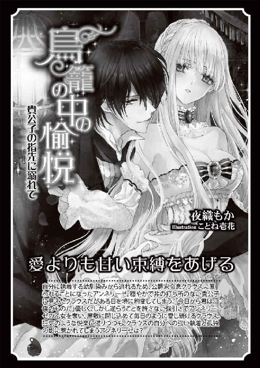

| 甘い蜜の牢獄 (蜜猫文庫) | |
| 夜織もか | |
| 竹書房 (2015) | |
この作品は縦書きでレイアウトされています。
また、ご覧になる機種により、表示の差異が認められることがあります。
一部の漢字が簡略字で表示されていることがあります。
イラスト／潤宮るか
プロローグ
何が悪かったのか、だとか。
どうしてこんなことに、だなんて。
そんなことを深く考え始めたら、きっと壊れてしまう。
「は、......ぁ、ぁあ」
ゆるく揺さぶられて生まれるさざ波のような快感は、それまでの勢いとは打って変わって弱かった。
でも止まない。
「ぁぁ、あ、ぁ──......」
いつまでも終わってくれないそれが、じりじりと脳髄を焼いていく。
自分がどんな格好を晒しているのか、見たことはない。
それでも何をされているのか知っていた。何日も、何週間も、何をされ続けているのか、理解している。
（いいえ、いいえ）
──私はわからない。わかっていない。
「あぁ！ ッん......」
それが気持ちの良い場所を抉る。アネットは背を反らした。逃げるように、あるいはもっととねだるように。どちらでもいい。考えてはいけないのだ。
だから、意識をそちらに向けないためならなんでも良かった。
（夢に溺れるみたい......）
「あ、だめ、......ッ、やぁ、あ、ぁッ」
アネットが感じるそこばかり当てられて、絶え間ない快感に頭がぼうとする。何かに縋りたくて、だけど目の前の相手に触れるのは嫌で、枕の端を握りこんだ。
その程度で揺れる身体は支えられない。
好きなように揺さぶられ、突き上げられるたびに指先から力が抜けてしまう。
「も、あぁ、あ、まっ......」
待って、と耐えかねて、アネットの腰を掴む手に手を伸ばした。
触れたのは指先だけだ。力なく、相手の肌をかするようにして寝台に落とす。
それでもアネットを苛む動きがぴたりと止まった。
自分の意思で、相手の腕に触れたから。これはその報酬だ。息が詰まりそうだった。こうやって、じわりじわりと見えない男が作った雛形に押し込まれていく。
始めのうちは寝台に括り付けられていた両腕が自由なのも、アネットがこの世界のルールを理解したから。
視界を覆う黒い布は分厚く、同じく頑強な布で出来たベルトで留められている。耳の下にベルトをくぐらせて、激しく頭を振っても決して外れないようになっていた。両手それぞれを寝台に留められたのは反抗を抑えるためであり、これを外させないためでもあったのだろう。
見てはいけないのだ。
そしてそれは多分、アネットの心を保つためにも有効だった。
アネットがこの屋敷で見るのは世話係なのだろう老女だけ。食事の間や、入浴などの身繕いでどうしても必要な時にだけ目隠しが外される。老女の世話を受けるときは必ず身体の一部をどこかに繋がれていた。
囚われの身。
アネットは何週間か前に、突如暴漢に襲われ、攫われた。
（本当に、そうだった？）
──ああ駄目だ。考えてはいけない。
薄衣を捲り上げるように肌を這う指先はくすぐるようで、だけどそんな刺激はもうもどかしくてしかたない。絶頂に突き上げられる感覚に慣れた身体は、今日何度目かのそれを求めて止まなかった。
内側を、擦り上げて欲しい。ぬかるみに突き立てられたそれに媚びを打つ自分の身体が嫌で、だけど焦らされるだけ中が濡れるのがわかった。
そこにアネットの気持ちなど必要ない。
「あ、......あ、ぁ」
男は喋らない。一言も声を発したことがない。
だけど今、彼はきっとアネットを笑っている。
アネットは身を捩った。肌の上を虫が這うような、ちりちりと微かに覚える視線が嫌だった。見えないそれを意識して、すすり泣きのような声が喉の奥から溢れてしまう。
誰とも知れない男の視線に濡れる身体。
その快感と、それに結局は堕ちるのだろう自分に絶望した。
息が上がる。喘ぐ胸も押さえきれない。呟きたくなくて唇を手で隠しながら、我慢できず下肢を締めた。相手の、自分の中を犯すその形がはっきりとわかる。さざめくように縋る自分のひだが、その動きだけで性感を煽った。
ひくん、と喉が鳴る。
だめだ、だめだ。耐えられない。
目元を覆う黒い布は、ずいぶん前から涙を吸って濡れていた。
「う、ごいて。くださ......ッ」
（──ユベールさま）
脳裏にあの綺麗な黒髪を思い浮かべた。この視界を閉ざす黒よりずっと深くて艶やかで、氷のような薄い淡い瞳の儚さを引き立てる繊細な流れ。
彼ならいいのに。
「ッ、ぁああ！ あ、ぁ、ぁ......んん！」
一番奥まで突き上げられて、思わず溢れた声は自分の耳にも甘ったるく、甘えるように響いた。肌が打ち合う音の影で響く水音のいやらしさ。それを聞きたくなくて耳を塞ごうとした手は押さえ付けられる。
上から伸しかかられて穿つ角度が変わる。途端、喉が引きつるような、頭が白くなるくらいの快感を覚えて、それから逃げようと身体を揺すった。これ以上は駄目だ。頭がおかしくなってしまう。
逃げようとしたのを察したのだろう。
男がアネットの腰を掴んで引き寄せる。
「や、だめ、それは、ッ......あぁ、あ、やぁ」
腰を掴んで体重を乗せて。
最奥の更に先まで届く衝撃は甘すぎて、一瞬で頭の先まで走ったそれに脱力した身体は動かない。細かく揺さぶられ、時折深く穿たれて、指先まで痺れた身体がさらなる高みの予感に震え出す。
もういやなのに。
「......ぁ、んんッ──ッぁ、あ、や、あ！」
その先に何があるのかもう知っているからアネットは泣き出した。
今更と男は笑ったのかもしれない。
激しく打ち合う下肢の狭間にその笑いを聞いた気がして、アネットは息を飲んだ。そう、今更だった。今日だってもう何度目か知れない。
快楽を貪り果てに至ろうとするのは何もアネットの身体だけじゃないのだ。
深い抽送が止まらない。悦び誘うように受け入れて、縋り付く。欲しい、と身体が囁いてくる。
「い、やあ」
数秒後の未来を厭いながら、ぞくぞくとした快感の予感から逃れられない。逃げられないのに、必死に堪えているのが何のためなのか。
（──考えちゃだめ）
「あ、あ、あ、ユベールさッ......──！」
応えるように深く深く穿たれて、極みに達した身体がのたうつ、それを腰を掴む手に抑えこまれて何度も揺さぶられる。中を何度も濡らされる、その飛沫の感触に陶酔した。
（考えちゃだめ......）
「あ、あ、ぁ......。──......も、っと。欲しい」
──ユベールさま。
ふ、と。確かに男が笑った。
記憶の中の彼と寸分違わない吐息のようなそれ。事実聞こえたかどうかわからない、空耳だったかもしれないそれに心が必死にすがりついた。
（やっぱり、そう。そうよ）
この一言も言葉を発さない、誰とも知れない男性は彼なのだ。
自分が生み出した妄想にゆっくり沈んでいく自分を、アネットは自覚していた。
だけどそれの、何がいけないのだろう。
これがアネットの現実だった。この塞がれた視界が明かされない限りは。
だから、それも妄想の続きだと思った。
アネットとは違う漆黒の、あの艶やかな髪が燭台の明かりを柔らかく跳ね返す。頬のラインを隠すように彼の髪が流れるのは、アネットの身体に伸しかかり上から見下ろしているからだ。
淡いアイスブルーの瞳は灯りの絞られた室内で冷たい灰色に見えた。
それでもその透明度は変わらない。
「ユベール、さま......？」
もしアネットが少しでも冷静だったら、目隠しがずれたとしても決して目を開かなかった。
だけどもう、見てしまった。
ゆっくりと、まばたきを一度。
瞳を揺らしながらじっと男の顔を見た。視界の隅で流れる見慣れた暗いセピアの髪はうねる様さえ記憶と寸分違わない。彼の美しい黒髪とは違う、それを泥で薄めたような濁ったアネットの髪。
目に映る世界すべてが虚像なら、このうんざりする色も、少しくらい美しく変わってくれてもいいはず。
なのに、どれだけ瞬いても現実は変わらなかった。そこにいるのは、アネットを押さえ付けている男は、ユベールと同じ顔をしている。
とうとう自分は狂ってしまったのだ。
──だって、彼のはずがない。
それは彼女にとって最後の砦だった。彼だけは、他の誰が自分を裏切ろうと彼だけは違うと、そう信じて今まで生きてきたのに。
彼女の前で、あり得ない幻が口を開く。
「ああ、しまったな。だがまあ、潮時か」
そっくり彼と同じ声で、だけどあの優しい笑顔は浮かべないまま。
無表情に近い冷たい面に、唇だけの笑みを浮かべて。
「やあ、俺のアネット。終の牢獄へようこそ」
第一章
アネットが社交界に姿を見せていたのは、ほんの短い間だった。
天井に吊された黄金色のシャンデリア。
複雑に編まれた天井はそれだけ財を尽くされた証拠だ。鏡面に乱反射する光の所為で、少し顔を上げただけで眩いほどの光に溢れている。
煌びやかな室内はまるで夢の中のよう。
「アネット。ああ、素敵な名前だ」
「......ありがとう、ございます」
呟きながら、迫る男性から距離を取りたくて、アネットと呼ばれた少女は壁を辿るように一歩横に移動した。
だけど目の前の大柄な男性もその動きに付いてくる。
舐めるように、じっと彼女の顔に据えられた視線。それを気持ち悪いと思うのは失礼だと、この短い間に何度自分に言い聞かせたことだろう。
どうやっても逃げられなくて、アネットは泣きそうになった。
（どうしたらいいの......）
ダンスの申し込みを断わる方法ならともかく、こんな風に決定的なことを口にしないまま、ただ馴れ馴れしく付きまとう相手を袖にする方法は知らない。
付き添いをお願いしたはずの女性は、いつのまにか姿を消していた。
アネットは一瞬それを恨みそうになったが、唇を噛んで堪える。彼女は叔母の友人の娘だったろうか、それとも従姉妹の友人だろうか。無責任にも場を離れる彼女を咎める前に、その程度のことすら把握していない自分を責めるべきなのだ。
社交界デビューからもうすぐ一ヶ月。
アネットが招待された夜会に足を運ぶのもこれで四度目だ。
容姿が幼くできているから目立たないとはいえ、周囲より一年遅れ、十七歳を半ばを過ぎての社交界デビュー。
自分が上手く馴染めていないことは、アネットも自覚していた。
視界を塞ぐ男性の向こう、ホールの一角で楽しげにお喋りに興じ、くるくるとドレスの裾を広げながら踊る可憐な少女たちの姿は眩しい。
アネットはそこから逃げるように目を落とす。黒髪とまでは呼べないくすんだ色の髪はあまり見たくなかったけれど、こめかみに触れる位置で飾った白い花のお陰で、少しだけ視界が狭まるのにほっとした。
（ああ。息が詰まりそう......）
大きな瞳とはっきりした目鼻立ちに幼さを見られることはあっても、容姿が悪いと言われたことはない。髪の色は美しい金とも鮮やかな赤とも違う、色味の薄い暗いセピア。アネット自身はあまり好きではないけれど、髪質を含めてメイドに褒められるから悪くはないんだろう。緩く波立つそれが頬にかかって、柔らかい印象を与えると良く言われる。
その髪を美しく結い上げて、綺麗なドレスに身を包んで。自分はどうやら化粧映えする顔のようで、メイドが抱える鏡に映る姿に心が浮き立たなかったと言えば嘘だ。
けれどどうしても、その喜びが続かない。
彼女の家はもちろん爵位と土地を持つ貴族だった。だが格は決して高くない。家の跡目だって、歳の離れた弟でも生まれない限りは、祖父が抱えたままの爵位も合わせて従兄弟が継ぐ。
若く、そこそこ美しい。
魅力がないではないが、だけど特別ではない娘。
それがアネットが思う自分の姿だ。壁際に立ちただ待つだけでは寄ってくるのは目の前の人物のような、あまり質の良くない男性ばかり。
（でも、自分でなんとかしなくちゃ......）
本来娘を導き監督するはずの母はここにいない。
彼女に任された付添人も、きっとアネットを一人残してとうに帰ってしまった。
アネットは唇を軽く噛み、気持ちを振り払うように顔を上げた。
「あの！ ごめんなさい。今夜は誰とも、踊るつもりはありません」
「そうか、奇遇だな。私もダンスは苦手なんだよ！」
にこやかな笑みを浮かべながら、男が手を伸ばしてくる。
逃げられない。
声を上げてしまえば奇矯な娘と悪目立ちしてしまう。悪評が立てば、あるいは目の前の人物と噂になって、体面のためなんて理由で結婚させられてしまうかもしれない。
──たぶんきっと、そうなる。
（触らないで......！）
どちらに転んでも同じなら叫んでしまえばいいのに、怖くて声が出なかった。
「......ッ！」
「やめなさい。怯えているじゃないか」
思わずあからさまな安堵に息をついたアネットを背中に庇って、アネットの父よりいくらか若いか、もう中年と呼んでいい歳の頃合いの男性がその男を追い払ってくれる。
「大丈夫かな？ 顔色が悪い。少し休んだ方がいいんじゃないか」
「でも、あの......」
「大丈夫だ。少し席を外したくらい誰も見咎めないよ」
優しい微笑み。
労るように手を取られて、彼女は促されるままに廊下へと続く扉をくぐった。
こういった集まりでは普通、客が休むための部屋が何室か用意されている。
廊下に面した扉が開け放たれたままの部屋がそうだ。
アネットたちが入ったのは会場から最も遠い部屋だからか、中央に置かれた丸テーブルの上、水差しやグラスは使われた形跡もない。美しく飾られた花の傍ら、焼き菓子などの軽食もそのままだ。
それらを眺めていたアネットは、背後で閉まる扉の音に驚き振り向いた。
「扉を閉めるんですか？」
「ああ、落ち着かないだろう？」
そういうものなのだろうか。アネットはいつも会場で最低限の時間を潰して帰るだけを繰り返していたから、よくわからない。
「どうぞ、お嬢さん」
「あ、すみません......」
差し出されていた、水が注がれたグラスをアネットは慌てて受け取った。
世話になった男性に給仕の真似事をさせてしまった、それを後ろめたく思いながら、一口、二口と温まった水を口に含む。
花の香りがかすかに香るそれに少し苦みを覚えたのは、夏の陽気のせいかもしれない。
「もういいのかい？」
「はい、あの」
「それがいいだろうね」
アネットはその言葉に首を傾げながら傍らの男性を見上げた。
（あ......）
──このひと、気持ち悪い。
気配があからさまに変わった訳じゃない。その顔に浮かんでいる微笑みも変わりない。だけどその目が。
「あの。ありがとうございました。私はもう平気なので」
「まだ顔色が悪い。青ざめているよ」
不意に伸びてきた手からグラスをテーブルに戻すふりで逃げる。不自然には見えなかったはずだ。そのまま礼を失さない程度に、一歩後ろへ距離を取った。
──できた、と思ったのに。
よろめいて、結局は彼の腕に支えられてしまう。
「大丈夫かな」
「大丈夫です。その、慣れてます、から。どなたか待たせていらっしゃるのでは？ 早く会場にお戻りにならないと......」
「いや、私も少し休みたいと思っていたんだ」
にこやかにそう返されて、アネットは仕方なく曖昧な笑みを返した。
会場でのやりとりと似ている。その既視感に募る嫌な予感を必死に打ち消して、なんとか距離を取ろうとするけど上手くいかない。
（どうして私は、こう......）
社交的な会話も、洗練された行動も、なに一つ満足にできないんだろう。
頭がぼんやりする。
彼のどこか気持ち悪い笑顔ばかりが目に映って、その唇が動いているのはわかっても声が耳に届かない。言葉の意味が頭に入らない。
（なにか、言わなくては）
──一人になりたい。大丈夫ですから。さわらないで。
きちんと言えているはずだ。声を出している感覚はあるのだから。
感覚を鈍らせるような違和感を振り払いたくて頭を振る。同時にアネットは男性を腕で押しのけようとした、それを掴まれた。
「......あ」
突然背中に回った男性の太い腕。
強引に腰から抱き上げられるようにされて、踵は完全に浮いている。それらが理解できないまま、他人と密着した身体を離そうとアネットは何度もつま先を床の上に滑らせた。
そうしている間も、ドレスの上を何かが這う。
「ダンスを楽しむ気がないなら、あの会場はさぞ退屈だろう？」
「ッ、ぇ、......ぁ。いや」
徐々にたくし上げられていくドレスの裾。男はアネットの身体を片腕で浮かせたまま、ゆっくり形を確かめるようにドレス越しに脚を撫で上げている。
徐々に露わになる足元が怖くて、なのに、思い切り突き飛ばそうと思ったのに、腕に力が入らなかった。
（......どうして？）
さっきから何かがおかしい。
「どうせ適当に拾われたかったんだろう？ 誰でもいいなら、私にしておきなさい」
「ちがッ......、ひッ」
ざらりと、荒れた手に大腿の裏側を撫で上げられて身体がぞっと怖気立つ。
「心配せずとも、君一人愛人として囲う程度造作ない」
何を言っているのだろう。
壁際に立ちぼんやり時間が過ぎるのを待つアネットの姿は、傍目にそこまで奇異だったのだろうか。一人ほとんど予備知識もなく社交界に放り出されたことをぐずぐずと嘆いていないで、もっと自分から動くべきだったのか。
（だけど、でも......）
──そうしたらもっと、母に嫌われる。
綺麗な金色の髪、美しい立居振舞。黒髪になりそこねたくすんだセピア色の髪も、自信のない頼りない所作も、似ても似つかない。けれども爪や耳の形はそっくりで、なによりアネットの顔立ちには母の実家の血が色濃い。
どれだけ彼女が厭おうと、アネットは母の娘だ。
最初はたぶん、単純に避けられるだけだった。だから寂しくて追いかけて。それが鬱陶しかったのか、彼女はいつからか一年のほとんどを王都の別宅で過ごすようになる。顔を合わせた時の視線の険しさはアネットが歳を重ねるほどにあからさまになっていった。
社交界でのお披露目が一年遅れたのも母の所為だ。色々なことが積み重なって、結局アネットは十六の歳にこの街に来ることは叶わなかった。
そうして今年。
アネットがドレスを着て社交界に出てからは、母はその嫌悪を夫であるアネットの父にも隠さない。もしアネットに恋人ができたなら、彼女はあの疎ましい者を見る目をさらに険しく、いっそ憎悪に近い色を滲ませるような気がして──
は、と気がつけば男の顔が眼前にあって、アネットは慌てて顔を背けた。
その晒された首筋に熱い吐息がかかる。
「や、め......ッ」
本当に嫌だった。
夜会のためにドレスを着飾るのも、それを実の母親からゴミを見るような目で見られるのも、キラキラとただ金色に眩しい世界も。
そこで誰と知り合い語り合っても例えその相手が女性でも、誰かと会話したその事実だけで酷い言葉で詰る母親も。
──辛い。悲しい。助けて欲しい。
感情の揺らぎに釣られるように息が上がる。
どうしてか身体の奥が熱く炙られるような感覚がして、それが更にアネットの気持ちを追い詰めていく。
（おかあさま......）
このまま純潔を散らせばアネットは一生日陰の身だ。
子供でも身ごもってしまえばもう後はない。未婚の女性の一生を抱え込めるほどアネットの家は裕福ではない。
──でもそんな結果を迎えることこそが、あのひとの望みなのかもしれない。
ふと過ぎったその考えの方が素肌を這う手のおぞましい感触より、よほど心を抉った。
堪えきれずその大きな瞳から涙がこぼれる。
「ッ、いや、......だ、って、言っ──！」
子供みたいに声を上げて、嗚咽を零して泣いたところで何の役にも立たない。
誰も助けてなんかくれない。
そう知っていたから、最初は幻聴かと思った。
「うるさい」
場違いなほど冷たく響く男の声。
よく見ればこの部屋は隣の部屋と続いていたらしい。人の背の高さまで飾られた豪華な花に隠れるようにして、扉の外された出入り口が見える。
その花の影から現れた青年は、ほんの少し乱れていた黒い髪を掻き上げ、それでもその指の隙間からさらりと零れ落ちて額に落ちる前髪に諦めたように息をついた。
その間に一度だけ、その淡い色の瞳と目が合う。
それは本当に一瞬で、彼はすぐにその視線をアネットの傍らに立つ男に向けた。
「これはヘクター卿。今日も気分の悪くなった女性の介抱ですか」
「あ、ああ......」
驚愕はむしろ彼女を抱える男の方が強かったんだろう。男の腕から力が抜けるに従い、アネットはずるずると沈むようにその場に崩れ落ちた。
そこからその青年を見上げる。
すらりと伸びた手足。アネットが憧れてやまない美しい黒髪。仕立ての良い礼服は会場のいたる所で見た形とそう違いはないのに、彼が纏っているだけでどこか華やかに見える。
彼はただゆっくり近付いてくるだけだ。
なのに威圧感に近い、強い存在感に目が離せない。
「いつもながらお優しいことだ。だが彼女にはあなたのやり方は合わないように見える。付き添いのご婦人を呼ぶなりなさった方がよろしいのでは？」
「いや、それは......」
慌てたような男の視線を追って、青年もアネットに目を向ける。
言いつくろえないほど涙に濡れた顔。ドレスははだけ、乱れている。
何をされていたのか一目瞭然だった。
青年は恥ずかしさに身を竦めるアネットの上から立ち尽くす男へと視線を戻し、浮かべた苦笑を更に深くする。まるで聞き分けの悪いペットに対して向けるような、見下すというには甘い寛容が混じる表情。
だけど床から見上げるアネットにはわかった。
青年の軽く伏せられた瞼がまた上がる。そうして現れたその氷のような淡い瞳に滲むのは、はっきりとした侮蔑だ。
それは母がアネットに向ける瞳と同じ色だった。
──怖い、と。その感情をはっきり実感したのは、その次の瞬間。
彼がほんの少し首を傾げて、笑みを深めて見せる。その顔には一瞬浮かんだ影などどこにもない。
「では彼女の面倒は私が引き受けましょう。お忙しい卿のことだ、あなたを待って首を長くするご婦人も多いはず。そろそろ会場にお戻りになられた方が良い」
襲われる前のアネットの台詞と何も変わらない。
なのに男はゆっくりとその申し出に頷いた。聞き分けのいい犬に向けるような表情に、彼は安堵したのかもしれない。ヘクター卿、と背を向けた途端声を掛けられ男はよろめく。
「こういったことは、もっと慎重に進めるべきかと思いますよ」
「あ、ああ。そうさせてもらうとしよう」
声は掠れて震えていたが、それでもかろうじて体裁を取り繕いながら男は部屋を立ち去る。
「あ......」
だけどアネットにはその背中を見送る余裕はない。その冷たい瞳が、今度は自分に向けられていたから。
感謝を述べるべきなのは、アネットもわかっていた。
もしただ物音が厭わしいだけならば、彼は続き向こうの部屋から廊下へ出て、別の部屋に移動するだけで良かった。
彼がここに現れた意図は明白だ。
だけどどうしても、ありがとうの一言が場違いに思えてしかたない。
薄い青の瞳。
冬に降りる霜みたいな淡い色はただ冷たいというのとも違う。彼女に向けられる視線に優しい思いやりがないだけで、こんな状況でもことさら見下されている訳ではないようだから。
それは例えば路傍の石を眺めるような、何の関心もない瞳。
それにアネットは傷付かず、むしろほっと息をつく、その瞬間を見定めたように青年は口を開いた。
「いつまで床の上に座っているつもりだい？」
声を掛けられるだなんて想像もしていなかった。アネットは思わず目を丸くしてしまう。
「あ、......の」
「うん？ ......ああ。ずいぶん扇情的な格好をしているが、その手の類いなら間に合っているから遠慮してほしい」
「せん、じょう......？ いえ。その、すみません。立てな、くて」
迷惑だから早く自分でなんとかしろ。
彼が言いたいのはそういうことだ。だからまずは剥き出しだった脚をドレスの裾で隠そうとした。けれど指先までじんわり広がった痺れのせいで、薄い布を摘まむことすら難しい。
──おかしい。
震える指。固い石の床はひんやりと冷たく震えるほどなのに、それが心地良い。
違和感を振り払いたくて頭を振れば、柔らかい髪の先が大きく開いた胸元を滑った。その途端ぞくりと走った強い感覚に目を見開く。
「ああ、なるほどね」
まるで上から降ってくるような。
その声と同時に差し出された彼の手は、アネットの視界を素通りして彼女の二の腕を掴んだ。その感覚が、身体の奥を強くくすぐった。
思わず緩みそうになる唇をアネットは必死に噛みしめる。
たぶん乱暴に引き起こされたのに、仕草が洗練されすぎていて違和感がない。自力で立てないアネットに、彼は仕方ないとでも言うようにその身体を抱え、そのまま滑るような足取りで数歩。それに引きずられ長椅子に下ろされるまでの数秒間、喉の奥から溢れる声が噛み殺せない。
「薬を盛られたな」
「くすり......？」
「他人が差し出したものを不用意に口にするのは考えものだ。世の中、後先を考えない馬鹿は多いからね」
「くすり、って......」
彼はその肩を掴み椅子から落ちかけたアネットを、背もたれに押し返す。
その勢いで、がくりと首が仰け反った。
まるで糸が切れた操り人形のよう。開けた視界に映った青年の顔は、間近で見れば更に冴え冴えと美しく、怖いくらいだ。
「さて、どうしたい？」
「どう......？」
「呼んでほしい人間がいるなら、いいよ。乗り掛かった船だからね、連れて来よう」
付添人くらいいるだろう。
そう言われた途端、顔が歪んでいくのがはっきりわかった。
こんなに悲しい気持ちにならねばならないほど、こんな罰を受けるほどの何かをしでかしていたなら、まだよかったのに。
「だれも、いない。いません......」
そう呼ばれる女性の仕事はきっとアネットを会場に置き去りにすることだった。
薬の所為かもしれない。いつも無意識に、必死に押さえ付け意識に上らないようにしていた気持ちが溢れる。
──かなしい。さみしい。つらい。
その声が胸の中で暴れ回って、痛くて上手く息ができない。
「いない？」
青年はアネットの言葉に不可解そうに眉をひそめた。
意識朦朧としている娘を前に、戸惑いではないが迷いを浮かべる青年は、冷たく見えるけど、たぶん優しい。
「ごめんなさい。呼んで、欲しい人は、いません。だから──」
「君、名は？」
ほうっておいて、と続けたかった彼女の言葉は簡単に遮られた。
名を問われたのだ、と理解するまでしばらくかかる。
「......アネット。アネット・ダイアス」
「ダイアス家か。何をしても揉み消せると踏んだな。だが君にとっても、へクター卿の愛人の座は悪くなかったんじゃないか？」
どうして彼はそんなことを言うのだろう。
よりによって、今。
「そんなこと。私は、......わたしは、そんなの」
「彼はあれでいて周到だし人の目も気にする。君はどうせ人の輪から外れて居たろう。それが男を誘うため狙っての行動じゃないというなら迂闊だな。ああいう輩に狩ってくれと言ってるようなものだ」
君の行動の意図が見えない。そう首を傾けながら彼が選ぶ言葉には、アネットの気持ちに対する配慮は欠片もない。
「君だって自分のための男漁りに来たんだろう。何をぼんやりしてたんだか」
「おとこ、あさり？」
「他人の品定めか、自分の売り込みか。そういう場所なんだから、それを責める気はないけどね。間違ってないだろう？ 君の姿はこんな風に乱れてなくても、男の劣情を誘うようにできている」
頭の奥がぼんやりしている。
立て板に水を流すような彼の言葉は理解しようと手を伸ばす先、理解が追いつく度にアネットの心は傷付いて、痛くて、また次の言葉がその傷にしみて。
だけど耳を塞げないのは目の前の男性の声に揶揄の色がないからだ。
彼はただ事実を並べ立てている。
──男の劣情を誘うようにできている。
それを最後に彼は口を閉じた。アネットはその言葉を頭の中でなぞり、理解して、その現実に必死に取り繕っていたなにかを諦めた。
──このドレスを用意したのも、付添人を選んだのも、アネットの母だ。
「そう、見え、ますか」
「そうとは？」
「男を、誘う格好を......」
「しているね」
胸がじわじわと圧迫されて、息が詰まる。
嗚咽は溢れなかった。目の前の彼がそれをうるさいと言ったのを覚えていたからかもしれない。
ただ静かに涙が溢れて、温い水に視界が歪む。何も見えない。それが世界から逃れられたように思えて、少しだけほっとした。
だからアネットは気付かなかった。
彼女の涙を興味深げに眺めていた青年が、不意に口元で弧を描いたのに。
「なぜ泣くんだ？ こんなに──」
不意に涙に濡れた頬を拭われ、驚きに目を瞠ったアネットの大きな瞳からさらに一粒、涙が頬を滑り落ちていく。
開けた視界に映る青年の顔。彼は膝をついてアネットの顔を覗き込んでいた。
「一歩間違えればいささか下品に見えるくらいの格好をしていると、君だって、自分で分かっていただろうに」
「しらな──ッ」
「それは嘘だ」
追い詰められて泣きながら睨み付ける。そんなか弱い視線など歯牙にも掛けない彼の声は小さな笑いに濡れていた。
なのに涙を拭う手は優しい。
大きな男性の手が肌を撫でる。いつの間にかその手から手袋が失せていて、その直に触れる体温に動揺した瞬間。
「君は、いいね」
「なに、......ッぁぁ！」
胸元で彼の指が滑った。
胸の頂きを弾かれたのだと気付いたのはその何秒か後。衝撃に呆然としたアネットと青年が涙の膜越しに見つめ合う。
間近に覗ける瞳に嫌悪の色はない。
淡い色の瞳が燭台の輝きを映して美しく、見つめているだけで溶けてしまいそうだ。ぼんやりそれに酔っていたアネットは遅れて気付いた。
快感の余韻が消えていない。
「や、なに？」
アネットはその光景に息を飲んだ。
彼の指が、はっきりと戯れとわかる動きでそこをくすぐっている。元々広く空いたドレスの襟ぐりは上から覗き込めば、その赤く染まった頂きがはっきり見えた。アネットに見えるのだから、目の前の彼にだって。
──下品に、淫らに、男を誘う姿を見せるための装い。
「あ......、んッ」
ぞくり、と走った甘い痺れから逃げたくて、膝を立てた拍子に大腿からスカートの裾が滑り落ちる。
「ふ、誘ってるの？」
「ちが......ッあ！」
彼の手が剥き出しになった脚、その白い肌の上をゆっくりと滑る。振り払って逃げたかった。なのに身体が動かない。
震える指先が長椅子の座面を滑る。
「ぁ......、ぁ。んん、ッ」
次の瞬間、突然の甘い衝撃に思わず閉じた脚で彼の手を押さえ込んでしまった。脚の合間、下着の上を指先がなぞり上げる。何度も、何度も。
「ん、ゃッ......──」
自然と背が反っていく。逃げたいのに、力が抜けてされるがまま。身体が小さく小刻みに跳ねるのに、彼の指は止まらなかった。
「ぁ、あ......ぁぁ、だ、め......ッ」
せり上がってくる何か。吐き出したいのに、できない。
硬い爪の感触が柔らかい内腿を滑って、また。
いつの間にか見開いていた瞳に、彼の姿が映っている。涙で一瞬霞んで見えた視界は瞬き一つで色を取り戻したけれど、そこに映るのはもっと近くなった青年の顔だった。
「俺の名前を知っているかい？」
「しらな......」
「そう。俺はユベール。ユベール＝クロード・デュルフェ。この名乗りが一番短い」
わかる？ と目で問われて、アネットも無言で首を横に振った。
だけどもっと長い名前が別にあるなら、彼はある程度の地位にある人物ということだ。
例えばここで間違いが起こっても、責任など取らなくても済むくらいに。
（やだ......）
責任を取って欲しいなんて大それたこと望まない。
関心なんてなくていい。路傍の石に向ける程度で構わない。だけどちゃんと人として扱って欲しかった。薬を盛ったり、強引に犯して愛人にしても問題ないくらい、自分の存在が軽いことが嫌だった。だってそうなら──
（お母さまが、私をあんな風に扱うのも当然だって、そう......）
「止めて欲しい？」
唐突な提案に呆然としたのは一瞬、アネットは縋り付くように頷く。
青年──ユベールはそれに、意外に感じるほどあっさりと身を引いた。
アネットはその長い指を見つめて唇を噛む。彼が離れても身体を炙る熱は収まるどころか、もっと強い、もどかしい焦燥感に取って変わっただけだ。はしたないとわかっていて脚をこすり合わせてしまう。我慢ができない。
もっと刺激が欲しかった。ほしくて、息が途切れる。
「付き添いがいないという嘘を撤回するんだね？」
「......う、そ？」
わからなくて、ぼんやりと熱に潤む視線を彼に向ける。
「具合が悪い振りをして気を惹いて、付き添いはいないだとか呼ばなくていいだとか。介抱してくれないかと迫るのは君たちが取る常套手段だよ。誘惑の。......君は俺を誘って、だが怖じ気づいて、とそういうことじゃないのかな？」
「知らな──」
「......そうか。意地の悪いことを口にして悪かった。では改めて、どうしようか？」
「さっきから、なにを......」
だから、と彼は溜息交じりに声を落とす。
手のひらが伸びて、今度は優しく、倒れかけたアネットの頭を支えるように頬に触れた。
「この状態で帰るのは無謀だろう？ 誰か面倒を見てくれるツテはないのか。付き添いだって本当に存在しないわけもないだろうし」
「......いま、せん」
「それはありえないだろう。そうなら入り口で止められる」
「きっと。おいて、いかれたから」
「ふうん」
だから彼が居なくなればアネットは本当に一人きりだ。誰かが来るまで傍に居て欲しい。隣の部屋でもいいから。迷惑をかけたくない。でも一人にされるのは怖い。
どうしていいかわからない。
「身支度は？ 自分でできるかな」
「ッ、できな......っ！」
「そうだね。その状態は辛いだろう。面倒を見てくれる相手は、本当にこの屋敷にはいないんだね？」
こくりと、涙を堪えながらアネットは必死に頷いた。
畳みかけるような質問に付いていくので精一杯だ。それでも彼が訊いてくれるから必死に答えを探そうと冷静になった。それがなければきっと泣き出していた。
「もし、この状態のまま屋敷に戻ったとして──」
「それはだめ！」
怖かった。母に、父に、屋敷の人間に知られるのは。
悲鳴のようなその声にアネットですら驚いたのに、彼は表情一つ変えない。無言で向けられた背中にぞっと心が冷えた。でも彼女が口を開く前に、水を注いだグラスを手に戻ってくる。
「それは......」
「飲むんだ。大丈夫、ただの水だよ。我慢するより散らした方がいい」
言われて、上手く飲み込めない水を少しずつ口に含む。喉は渇いているのにグラスの水は遅々として減らない。いっそ目から溢れる涙の量の方が多いくらいだった。
「薬の効果が切れるまで。長ければ夜会が終わってもこのままかもしれない。そうなれば、家に連絡は行くだろう。それだと困るんだね？」
こくりと、頭を縦に振る。
いいこ、とまるで褒めるようにこめかみから頤を撫でられて、拾い上げてしまう快感より、その体温の心地よさに目を細めた。
「誰にも知られたくない？ 君の屋敷の使用人にも？」
また頷く。
「なら、これは脱いだ方がいい」
「ッ、あ、ゃ......」
「いや？」
ドロワーズに指を掛けられたことより、指が滑ったそこが濡れている、その事実に思わず声が出た。
「もっと濡れるだろうけど、誤魔化せるなら」
「無理、無理です。も、やだぁ......」
アネットはもう限界だった。本当に薬効が切れれば元に戻るのか、指先どころか手も腕も、足も、動かし方を忘れたように身体が動かない。
かろうじて視線の向きに首を傾けることはできた。
ユベールが答えを待っている。身体が利かない不安と恐怖と、強すぎる羞恥に泣きそうになって目を背けたアネットの頬に、彼の手の甲が触れ退った。
「脱がない？ 脱げない？」
「脱げな......」
「なら俺に頼ればいい。それぐらいの意思表示は欲しいな」
耳に直接注ぎ込まれる声。
椅子の背もたれに倒れたアネットの身体の上に、伸しかかる彼の影が落ちている。気配は、吐息が触れそうなほど近い。
俯いたままの頬に手が伸びて、顔を上げさせられた。
きっとそこまで強い力じゃなかった。だけど抗うことは許さないその手に引き戻されて、絡めさせられた視線の先。
「ほら、言ってごらん。脱がせてください、って」
その瞳は優しく笑んでいた。
頭の芯が痺れるようで何も考えられない。頬に添えられた彼の手がアネットの唇に触れ、その親指の腹で表面を撫でる。たったそれだけの刺激で脚の間が熱くなるような、もどかしい感覚に脚が震えた。
唇を開いてしまえば変な声が漏れそうだからずっと噛んでいたかったのに、引き結んだそこを彼の指が押し開く。
「ぁ......」
「アネット」
言え、と。
そう命じるような視線に操られた。
「脱が、せて......ください」
（あ。私、いま......）
取り返しのつかないことをした。
なにか大きな間違いを犯した気がして、怖くて、アネットは固く目をつむった。彼はそれに何も言わない。瞼を下ろしていても、彼の指先が脚の半ばまで滑り落ちていたドレスの裾を潜って、大腿の外側を辿りながら腰に忍び寄っていくのがわかる。
ゆっくり足先まで滑っていくドロワーズの感触。
ぱさりと床に落とされた音に、どうしようもなく泣きたくなった。
「いくらでも泣けばいい。けど、声はあまり上げない方がいいかな。君が他人に痴態を見せつける趣味がないなら」
驚いて顔を上げたアネットを待っていたみたいに、彼がその長い指を舐めた。
その薄い唇の間から垣間見えた赤い舌と、じっとこちらに据えられたままの視線に圧されてただ息を詰めるしかできない。
「ッ、ぁ、......」
ドレスの向こうは見えない。だから彼の指がどう動くのかわからない。内腿を軽く指が滑り、脚のやわらかい部分をくすぐって、そのまま少しずつ付け根に近付いてくる。
アネットの顔を覗き込むその淡い瞳。じわじわとどこかが焼け付く気がした。
そんな焦燥感に耐えきれなくて視線を逸らした途端。
「ひっ、あ......、ぁ、ああッ、......ッや、ぁ！」
自然と身体が仰け反った。
彼の指先が、ぴたりと合わさった割れ目を上からなぞられて、濡れた指が何度もそこを滑る。濡れてるのは指だけじゃない。指は更にそこを割り広げ、下着を濡らした蜜をすくう。
仰け反った拍子に露わになった胸が揺れる。
それを彼も見ている。
「は、ぁ、ゃ......」
脚を閉じて身体を前に丸めようとしたのも、もうただの反射だった。
だけどそんな逃げ許されない。閉じかけた脚は彼の手に掴まれさらに開かされた、そうやって閉じていた割れ目が微かに緩んだそこを、また。
「ん、ぁ、んん──ッ」
誰にも触れさせたことのない襞を指先がくすぐっている。
ひくんひくんと小さく身体が跳ねた。その刺激から少しでも逃げたかった。だってこんなの普通じゃない。
なのに。
その滑りを帯びた指が蜜を零す入り口を揺すると、そこから頭まで駆け上がるような甘い痺れが全身に広がる。
「ッ、ん、んん......ッぁ、ああぁ......」
一瞬、息が詰まった。
上へ滑った指先が、興奮に膨らみ出した尖りに触れている。きっと、少しでも指が滑ればその快感に声を上げてもだえてしまうだろう。それがわかる。
彼の目を見返すアネットの瞳は懇願の色が濃い。何を願うのかは自分でもわかっていなかった。返る瞳は何も責めていないのに、呼び起こされた理性が羞恥を囁く。
それがどう見えたのだろう。
「大丈夫、最後まではしない」
とても落ち着いた、腰の奥に響く声。
もう無理だと思った。
重い腕を持ち上げて顔を隠す。だって耐えられない。咎めるみたいに強くそこを押しつぶされて、嬌声はかみ殺せても跳ねる腰は隠せなかった。とろりと身体の奥から熱に溶けた蜜が溢れる。濡れるのがわかる。
だから余計に、腕に顔を伏せたまま首を振った。
「──......ッ、ぁあッ！」
突然襲った痛みに上げた悲鳴すら、どこか甘く聞こえる。
アネットは目を見開いて彼を見た。隘路を潜り込む指の感触。無理に広げられた入り口が鈍く傷む。心地よいだけだった刺激に混じったノイズの正体を頭が理解すると同時に、声が聞こえる。
「そうだ。俺を見て？」
とても優しい声が何か言葉を囁いた。彼の声が耳に触れた。それくらいしかわからなかった。
「あ、あ、......」
零れ落ちそうな青い瞳に浮かぶ涙を、彼女は瞬きで散らす。
指は、それ以上は進まなかった。
浅いところをくすぐり、わざとらしい粘着音を響かせる。きっとまた、顔を伏せたらその指が中に這入ってくるのだろう。
痛みは怖くなかった。
ただその痛みすら快感に変えて喜びそうな自分の身体が怖い。
「そう、目を逸らさないで。何をさせてるか、見ないふりは卑怯だろう？」
「は、ぃ......ッ、ぁ。ああ、まっ」
卑怯、の単語に少しだけ引っかかった。
でも触れられて、ひどく感じるそこを撫で上げる指に小さな疑問は霧散する。ぐち、と音を立てて尖りを押し上げられる。その甘い衝撃が口から溢れそうで、無理に飲み込めば喉に熱が閊えたようで。
「──正確には、何をされてるか、だけど」
目だけで問いかけても、彼はただ笑うだけだ。
返る言葉の代わりにまた甘い刺激がよこされる。その刺激は直接的すぎて、震える脚もくねる腰も、どうしようもない現実に刹那我に返って泣きそうになりながら。
「あ、......やだ、ぁ、あ、ん......──ッ」
腰が止まらない。
自分から彼の指先に敏感なそこを押しつけて、小刻みに揺すりながら頭が真っ白になるその甘い感覚に酔いしれた。
そこで確かに、終わったはずだった。
「ぁ──、あ。ぁ、うそ、なんで......」
確かに絶頂に達した。恥ずかしい痴態を晒していったはずなのに、衝動が納まるどころかもっと強い刺激が欲しいと身体の奥をうずく。
こんなものじゃ足りないと。
「あ、あ......」
「意地を張らず身内に助けを求めた方が利口だとも思うけどね」
その冷めた声に、とっさに彼の腕を掴んでしまった。
彼はアネットのその手を見つめ、また彼女に目を戻す。はっきりと縋ってしまったことに慄きながら、だけどアネットは小さく首を振った。
助けてくれる相手はいない。
（あなた、以外に、だれも......）
口に出せなかったのはこれ以上口で同情を買いたくなかったから。それから、誰もいないという事実を自分の耳で聞きたくなかった。
きっと彼の溜息は、見ず知らずの男に縋るアネットの愚かさに対してだ。
「何度か達せば楽になる。自力で歩けるようになるまでは、付き合うよ」
「あ、......ありが、と──......ぁッ」
「君は本当に馬鹿で、憐れだね」
は、は、と荒い息が耳を付く。
アネットは息継ぎの合間に、懸命に溢れる唾液を飲み込んだ。
彼の指先は今、アネットのドレスを乱すのに使われている。その刺激も今はもうはっきりと快感だったが、堪えられないほどじゃない。
乾いた唇を舐めて潤す。無意識に繰り返していた仕草をユベールに笑われていることに気付いたのは、いつだったろう。
わからない。
何時間も前のようにも、数分しか経っていないようにも思えて、アネットはこれまで何度も繰り返したように、だらしなく開く口を閉じようとした。
「ひゃ、あッ！ そこ、や......ッ！」
「そこ？ どこが？」
胸の頂きに吸い付いた彼が顔をあげないまま問いかける。その歯が掠める。たったそれだけで疼く下肢がまた潤んだ。
見ろと言われたから、必死で目を開けたまま。
それがなければもうソファに倒れ込みたかった。背もたれに必死に縋り続けた腕が鈍く痛む。だけどそれも、彼の手が下肢に伸びれば覚えていられない。
「......ぁ......っ......ッ」
左手はソファの背に、右手は縋るものを求めてさまよう。すぐ目の前にいるユベールは上着を脱いでいて、シャツの胸元を寛げていた。そこを掴んでもきっと彼は咎めない。
わかっていて、アネットはドレスを握りこむ。
（しわに、なっちゃう......）
──どうでもいい、こんなドレスなんて。
かなうなら破り捨ててぐちゃぐちゃによごしてやりたかった。そうすれば、彼の指はアネットの肌を直にすべって、それで──
「なにを考えた？」
不意に問われて、目を瞬いた。
吐息が触れるほど近くに彼がいる。ぼんやりその顔を見つめていたら、彼は小さく笑って彼女の唇の端を舐めとっていく。
「な、に......ッぁあっ......あ、あ......」
ぐちゅり、と音を立てて指が中を探った。彼の長い指がぬかるむそこに潜り込み、中を小刻みに揺らずたび、甘すぎる痺れに腰が溶けてしまう。
入り口を掻き回されると我慢できない。
「あ、だめ......あぁ、ぁ、や......ッ」
「こういう触れ方は嫌い？」
「ッ、ああぁっ！」
急に強く擦り上げられて、腰が浮く。
そこで終わりじゃなかった。逃げた腰を掴み引き寄せた手はそのまま、彼の指が滑りを塗り込めようと膨らんだそこを責め立てる。
「だ、め......ぇッ！ あ、ん、んんッ、ああぁ！」
そこから走る甘い痺れが折り重なって迫る。
痛いと感じてもいいはずなのに、ただただ気持ち良くてアネットは啜り泣いた。
彼の指の動きに合わせて腰が勝手に揺れてしまう。我慢しようとしても駄目だった。恥ずかしいのに目を閉じることも許されない。
ユベールから視線を逸らしたら駄目なのだ。もっと酷い責めに快感を覚えて悲鳴を上げるか、この甘い刺激を取り上げられるか。
どちらもいやだった。
（あ、ぁ、......このまま！）
なのに、彼の手が離れてしまう。
まただ。もう何度もこうやって、追い詰めては逃される。
「や、なんで......」
「駄目なんだろう？」
そんなの、ただの喘ぎだ。意味なんてない。わかっているくせに、彼は意地悪く笑う。
「どうしてほしいか、言ってみようか」
「ぁ......」
きっとその笑顔は使い勝手の良い仮面の一つなんだろう。
だけどそれを見た瞬間、アネットはどうしてか強く感情が傾いた。よくわからない、言葉にできない情動に、ただ泣きたくなる。
「──やさ、しく。して、くださ......」
「へえ......」
驚いたのだろうか。それとも感心しただけか。
腰を掴んでいた彼の手が、そこを離れてアネットの頬に触れた。撫で退るその感触に暖かさより強い性感を覚える。こんなときに、馬鹿みたいだと自分でも思った。
彼がアネットの顔を見ながら手を滑らせていく。
「ぁ、......ぁ、あ......」
「きもちいい？」
「......ゃ、や、んッ......わからな──」
「そう？ こんなに濡れてるのに」
目の前に差し出された手の指先は粘性の液体で濡れていた。
彼の長い綺麗な手が指を広げると糸を引いて、ぷつりと切れて。その指先が胸の先端に延びていく。それをただぼんやりと瞳に映す。見慣れたはずの自分の身体。なのにその肌は淡く上気していて、固く凝った先端は見たことないほど赤く腫れていた。
そこを、濡れた指で摘まみ上げられる。
「ッあぁ！」
遅れてやってきた、だけど強い快感。
つるりと取りこぼし、指で弾かれたようになった先端をまた摘ままれて、たったそれだけで、軽く頭の先まで甘い痺れが襲う。身体の震えが止まらない。
ずっとその指に慰められて濡れた脚の狭間はひくひくと震えていた。軽く達したのかもしれない。だけどもうそれくらいじゃ満足できなかった。
「......ユ、ベール、さま」
もどかしい、そんな気持ちで身動ぐだけで中から蜜が溢れる。どうしようもなく身体を揺らすアネットの姿はどう見えたのだろう。両脚それぞれの膝裏に手を入れられて、大きく開いたまま身体を押し上げられる。
ソファの背もたれに縋ってなかったら、座面に滑り倒れたかもしれない。
ほとんど腰が浮くくらいまで押し広げられて、それがどういう格好なのか、気づいてしまえば息を飲むしかない。
「あ、あの、んっ......ッ」
「──ああ、このまま犯したいな」
驚愕に、アネットは目を見開いた。
彼はただ目を細めて、唇を震わせるアネットを眺めている。
わからない。その言葉が彼の冗談かどうか。アネットがわかるのは、彼の囁き声に奥をうずかせた自分の身体と、今の体勢だけだ。
ふ、と彼が笑った。
「大丈夫、俺は酔狂な男だから」
──運が良かったと感謝してもいいかもね。
混乱するアネットの様子がそれほどおかしかったのか、ユベールは無言で肩を震わせている。
「ほら、ドレスも汚すのは拙いんだろう？」
その手がアネットの腰の上、背中に回る部分から何か引き抜いた。途端に解けるようにドレスが身体から落ちて、アネットの身体を包むのは少し下にずれたコルセットだけになる。
「あ......」
「後でちゃんと着せてあげる」
囁かれて、でもアネットが驚いたのはそこじゃない。
こんなに脱がせやすいドレスだなんて、知らなかった。腰の下からドレスだったものが引き抜かれ、床に落とされる。
（これって、ほんとうに......）
「いいから。ほら、気持ち良くなろう」
我に返ったのは、長椅子の布張りの感触に肌が直に触れたからだ。
「や、ぁ、......だめ。まっ......椅子、汚れちゃ」
「余裕だね」
「ちが」
アネットは、両手で背もたれに縋り付いて腰を浮かせることに必死だった。余裕なんてあるわけない。身体から力が抜けそうになるのを懸命に堪えているのだ。
そうやって気を張っているからか、煽られ続けて限界なのか、笑う彼の吐息にすら感じてしまって怖い。
膝裏を掴まれたまま、晒された白い内腿に彼の唇が触れている。そこに唐突に歯を立てられて、背もたれを掴んでいた指が滑った。
「──あ、ッゃ......んんっ！」
身体がすべり落ちる。たったそれだけで全身を一度に触れられたみたいだった。ユベールに晒したままのそこがひくつくのがわかる。中からとろりと溢れるそれを、なんとかしたくて腰を揺すっただけなのに。
「や、ゃああ......ッ！」
彼の指がたくさん、滑りを辿るようにして中に潜り込んできた。
その衝撃が痛みだと思ったアネットは、すぐにその勘違いに気付いて身を捩った。彼の指は優しくアネットの中を撫でるだけだ。なのにその曖昧な感覚に身体が細かく震え、彼の指を伝うように蜜を零すのがわかってしまう。
「あ、あぁ、ッ......だめ、あ、ッやぁ！」
「誰も気にしないさ」
その囁きと共に、脚の内側、付け根に近い柔らかい皮膚につきりと鋭い刺激が走った。下肢の奥に直に刺さるような、それが呼び水になって埋められた指を食い締めてしまう。何度も、身体の奥をひくひくとうごめかせて。
「あ、......ぁ、ふ......ッんぅ......」
うすく涙で膜の張った視界に彼の姿はない。
（見ろって、言ったのに......）
上体を起こそうにも、下肢に埋まった指がそれを許さない。
ねとりと内腿を何かが這った。そこに熱い吐息が触れたことで、それが口付けの一種だったと理解できた。
「ッ......ん、あぁ......」
彼の指が濡れた粘膜をくすぐり、上部の膨らんだそこを触れるか触れないか、そのたびぎりぎり切れそうな糸で保っている何かが、解けてしまいそうで怖い。
ゆっくりと中を撫でられる。
彼の長い指が分け入るように潜り込んでいった時、固く軋むような痛みを覚えたはずなのに、今はもうただ熱いだけ。
「もう、なにか......ぁ、きちゃ、ぅから」
「気持ちいいだろう？」
その囁きにアネットは首を横に振った。
横に伏すように座面の上に倒れて、腕の間に額を押しつける状態でそれが伝わったのかはわからない。伝わったところで止まないだろう。だって気持ちが良いと、自分の身体が喘いでいるのがアネットにもわかるから。
「ぁあっ......あ、あ......ん、んっ......やぁ、ッ」
甘く身体をぐずぐずに蕩かすその感覚だけで一杯になる。
いつまで耐えればいいんだろう。
ぎりぎりまで膨張して破裂しそうな焦燥感。なのに身体はねとりと重い蜜を含んだよう。息をするだけで軽く快感の波が広がって、喉が鳴った。
きもちいい。
情けない嗚咽みたいになそれが耳に届いて、涙がこぼれた。
こんな場所でほとんど全裸で脚を開いて、よく知らない相手に大事な部分を晒している。
「も、やだぁ......」
「一度いこうか」
「──あ、ああっ！ いや、あ、あっ、......やぁ！」
一度ほとんど引き抜かれた指がすぐ突き入れられる。二本か三本、その圧迫感は苦痛なはずなのに快感の影に隠れて痛みは鈍く、衝撃の分だけ強い快感に脚が震えた。
ぐじゅりといやらしい粘着音が響く、それくらい中で彼の指がうごめいている。けどそれだけじゃない。時折指先で転がされるだけだった膨らみに、熱い滑りが這う。
舌で舐められている。
「や、やめっ、あッ......ぁあ、ッだめ、だめぇ！」
尖らせた舌で突き転がされる、その衝撃が甘くて中の指を食い締めてなお身体が震えた。もだえ堪えるのに仰け反った身体は、いつの間にか天井を向いていて、見開いたアネットの視界に快感に震える胸の赤い頂きが映った。
（どうして、そんな......ッ）
汚い。やだ。舐めないで。
そう口にしたいのに、アネットの唇からは喉の奥からせり上がるそれが甘ったるい声になって溢れるだけだ。
限界まで膨らんだそれを、固くした舌に押しつぶされて、目の前がまっしろになった。
仰け反った身体がソファに落ちて、だけどその甘い余韻に何度も跳ねる。これで終わりならいいのに、もう身体が動かないのに、それでもまだ身体が疼いた。
「......ッ、ぁ、ん」
そこは彼の指を含んだままだ。
「君の中、柔らかくて指に縋ってくるみたいだ」
「ぁ、ごめ、なさ......──」
「素直なのも可愛いし、遠慮が勝つのもいじましくていいね」
抱き起こされて、掴まれた腕を彼の背中に回すように促された。恐る恐る、彼のシャツに指をかける。握りこむほどに力を込めることができない。これでいいのだろうかと視線で伺うアネットに、彼は目を細めた。
その顔が、笑顔なのにどこか怖くて。でもこんなに距離が近かったら、どうにもできない。
「ほら、頑張って」
「──あ、ッひゃ......んんっ！」
ずるりと中を抉るようにしながら指が抜かれ、また押し込まれる。
指の腹で奥をくすぐられて、そのたびアネットの身体は小さく跳ねた。
必死に堪えようとすればするほど、身体の奥を探る指の感覚が鮮明になって、ただ身体を震わす刺激でしかなかったそれが甘く思えてくる。
じりじりと、何かが澱のように溜まっていく。その微かな甘みから目を逸らそうとするだけ、意識がそちらを向いてしまう。
だめなのに。
噛み殺そうとしても、息が上がっていくのを隠しきれない。
うっとり目を細める彼のその瞳を見て、思わず下肢を締めてしまった。その中を指が奥に滑る、その甘い衝撃に背を反らしかけたアネットの腰を押さえ付けて、中をばらばらと探られたらもうダメだ。
同時に前を弄られる。
「まって、や、ぁッ......ユベールさま......！」
一度達したそこはまだ控えめに震えるだけなのに、それでも彼の指にくすぐられるとじんわりと甘い熱が凝って、思わず腰を引いて逃げたくなった。
でも、もう背後に彼の腕が回って少しも距離を取れない。少し身体を倒しただけで更に引き寄せられて、耳朶を噛まれてしまう。
「......逃げたら、意味がないだろう」
その掠れた声にか、痛みにか。
じん、と甘い痺れが身体の奥、さざ波のように広がった。その最中、彼の指の先が襞を撫でる。一度それを快感と認識してしまったら、もう誤魔化せない。
「は、あ......ぁ！ あぁ、あ、だめ、ぁッ、ん、......んんッ！」
「気持ち良くなってきた？」
「あ、ぁ、ッゃ、......さっき、から」
──ずっと、きもちがいい。
上手く声にならなくて、震える唇だけで呟いた。
うわごとみたいなそれを彼の目が読み取ったのかなんて、もう熱に浮かされたアネットにはどうでも良かった。ただ刺激が欲しい。気持ち良くなりたい。
ざらざらした場所をそっと撫でられるだけで閉じきれない口から唾液が零れて、それでもそれが欲しくて腰が揺れる。もっと、もっと。ねだり追いすがる襞を無視して指が引き抜かれるたび、切ないほど身体が疼いて涙がにじんだ。
ひくひくと中が震えるのがはっきりわかる、そこに突き立てられれば腰が蕩けるほどの衝撃だった。
だけどかすかに痛い。
抉るように奥まで突かれると、入り口がほんの少し痛む。まだ痛みを覚えている、その事実に心の隅で小さく安堵して、だからもっと深い快感に耽溺できた。
「ぁ、あ、あ、......ん、んん、ぁ、......、ぁあ──ッ」
快感しか拾い上げない尖りを指で捏ねられて、同じ速さで中もゆっくり擦られて。最初はばらばらに感じるだけだった感覚が、少しずつ重なっていく。
「あ、だめ......ぁ、まっ、て......や、あ、なに、ッあ、あ、あぁ......」
気がつけば腰を浮かせて揺らめかせていた。
吐く息と共に、ほんの少し前後左右に。でも中に埋まった指も前に添えられた指先も、そんな仕草で振り払えるわけもない。
彼の背中に縋った手が震える。滑り落ちそうになって身体が傾いた、それを肩で受け止める彼の口元だけがはっきり見えて、その弧を描く薄い唇にアネットはまた。
はっきり下肢を疼かせた。
「は、あぁ、......だめ、ッあ、......ああ、あ──」
強い衝撃に仰け反る力もない。
ただだらしない声をこぼすだけ。
中に潜った彼の指が、尖りの裏側、その感じる部分を押し上げたのだ。それまで軽く触れるだけだった、それだけでも腰が震えるくらい気持ち良かったそこに走った強い刺激に、アネットは呼吸も忘れて瞬いた。
頭がまっしろになる。
なのに優しく膨らむ尖りをなで回していた指まで、アネットが滴らせる滑りをまた塗すように下から上に。何度も何度も、擦り上げ時折押しつぶすようにされて、だけど中の指はその膨らみを突き出すように内から支えて。
「ああッ！ あっ、ひ、ああんッ！」
その小さな笑いが耳に触れるだけで、端から溶け落ちそうになる。
ユベールの声と戯れのような指先の動きに、ただ腰を跳ねさせるしかない。
「すごい声。いいのかい？」
「や、だめ、だめ、ぁ......ッ、ぁあ、だめ、あ、ん、ぁあ......ッ！」
中が細かく震えて、がくがくと動く腰が止まらない。もう身体はとっくに達しているのに、なのに止まってくれなかった。もっとと深い快感を追ってしまう。きゅう、と中を引き絞るように、指を中に引き込むように、奥の奥の甘い蜜が滲むそこに刺激が欲しくて、目を開いたまま腰を振った。
彼の指先がぎりぎりまで引き絞った中の、感じる部分を掻く。
その瞬間、何かが弾けたように頭がまっしろになった。小さな水音と、彼の指を濡らす何か。じん、と腰の奥から全身に広がる甘い痺れにくったりと浸るのに、腰だけが動きを止められない。
「あ、やだ、とまらな......ッ！」
ぐちゅん、と音を立てて指が引き抜かれた。
一瞬、腰が抜けたようにその場に崩れ落ちてすぐ、アネットは目の前の彼の胸に縋り付く。
「や、やめ、ないでッ」
──まだだめ、まだ。
そんな風に縋った身体を突き飛ばされた瞬間、諦めに慣れたアネットはその現実をすぐに受け止めようとした。長椅子の上で衝撃に軽く跳ねる身体は心に走った痛みとは裏腹、まだぐずぐずと溶けて、ほんの少し肌に触れる風からすら快感を拾う。
「そんな顔しても、今更いやだは聞けないんだけど」
「え......ぁ」
真上から、覆い被さる影。
ユベールに押し倒されているとアネットが理解するまで、彼は待ってくれない。崩れ落ちて長椅子から落ちた脚を掴んで、伸しかかる。
同時に走る快感。
ずっとひくついたまま、刺激を求めて濡れるそこを擦られて、押さえ付けられる必要もなくアネットは身をもだえさせる。
「ぁああ、ぁ、......あ、あ、あ、んんッ」
ユベールがアネットの二の腕を長椅子に押しつけたまま、彼女の上で身体を揺らしている。
荒げた息。時折舌なめずりをしながら、でも笑みの形に引き結ばれた唇。その青い瞳は熱でけぶるようで、だけどアネットだけを見つめていた。
そのこめかみから汗が落ちてくる。
揺さぶられる快感に酔いながら、アネットはそれを不思議に思った。
彼が動くたび、ぐずぐずに濡れたそこを何かが滑り擦り上げて、その甘い刺激がもっと欲しくてアネットも腰を揺らした。
本当は、中に欲しい。
だけどそれが叶わないのはわかっていた。アネットの上を滑るそれが彼の猛った性器なのも、彼がそれをくれるつもりがないことも。
それが欲しいと思うのが、熱に浮かされた今だからということだって。
それでも快感を分け合うこの行為に、それに付き合わせてしまっていることに、ほとんど働かない理性が罪悪感を抱く。
だから。
もう半分掠れた喘ぎ声しかこぼせない口を開いて、ごめんなさいと音に乗せようと。
「あっ、ひ、ああんっ！」
噛まれた。
アネットの胸に顔を埋めて、興奮に固くなった欲をアネットの脚に擦りつけながら。
そうやって快感をはぐらかされたのに、まだ彼の歯の間で震える胸の頂き、その存在だけでアネットの下肢は濡れてぐじゅぐじゅになる。
「──......ぁ、あ、あ、あ！」
歯で挟んだまま、上に引かれる。
その先端を舌でくすぐられるその刺激はおまけのようなものだった。固い歯で扱くように、少しずつ落ちていく胸が完全に彼の口から逃れた瞬間、最後に走った痛みにアネットの身体は軽く達した。
「いいんだね。胸が好きなんだ。それとも、痛いのが好みなのか」
「ちが、くすり、が......、ッ」
彼はただ笑って腰を滑らせた。
身体全体が揺れるほどではない。その代わりその切っ先で、散々指で弄られ触れるだけで濡れるようになった入り口を押し広げるように擦られ、上に滑れば敏感な尖りを擦られる。指先ほど繊細ではない、だけどその乱暴さも良かった。
そうやって少しだけもどかしい快感にもだえさせてから、彼は細かく震えるだけになった胸の先に指を伸ばす。
「あぁッ！」
摘まみ上げられて痛いのに、泣くほど気持ちいい。
もっと、もっと欲しくて膝を立てて腰を浮かせた。陰部が強く擦れるたび快感が強すぎて膝が崩れてしまう。それがもどかしい。
彼の指先が胸の飾りをくすぐっている。
擦られ倒されてもまた上を向く、その赤さがアネットの貪欲さを表すようで、目を背けたいのに目が離せない。その指が向く先の快感を想像して息を飲む。でも実際彼がくれるのは、想像していたよりずっと。
「っ......あ、だめ、......ん、ッ、ぁ。......あ、ああッ！」
身体が跳ねた。
捻られて、痛みの良さでじんじんしたそこを舐められ、しゃぶられて、それより反対を指先で掻かれる方が気持ちいい。
腰が揺れてる。
「きもちいい？」
がくがくと腰を振るように頷いた。
言葉なんて出てこなかった。
顔を覗き込んでいたユベールは小さく笑って、また胸元に下りていく。二の腕を押さえ付けていた手が大きな手のひらを脇の下まで滑らせた。逃げないと確信したみたいだった。最初からアネットには逃げる気持ちなんてなかったのに。
「ぁ、は......ッ、あ、あ、......あぁ、──」
弄られすぎて腫れたそこに唇が触れる。
その程度でも小さく痛む、その分だけ甘さが沁みて身体の奥が濡れた。どきどきするのは期待しているからだ。だけどアネットの視線の先、ユベールは見せつけるように頂きを口から離し、白い乳房に歯を立てた。
頂きを弄られるのと同じくらい気持ちいい、それが衝撃だった。まるで先端の敏感さが全体に広がったみたい。でも、だけど、噛んでほしいのはそこじゃない。
「ぁ、あ......」
どんな顔をしていたのだろう。アネットの胸に顔を寄せたまま、彼女の顔を見つめていた瞳が笑う。彼は歯を宛てただけで、噛みつく仕草をするだけで、その先端を噛んでくれない。
身を捩れば彼の歯に敏感なそこが当たる。だけどそれだけだ。
噛んでほしいのに。
それしか考えられなかった。そうしてくれたらもっと良くなると確信があった。もっと気持ち良くなりたい。だから、だから。
「......ぁ、き、もちいい」
は、は、と期待に息が上がる。
あまりに深い予感に、逃げたいと心のどこかで声がする。だけどアネット自身は彼女を見上げるその薄い色の瞳から目を逸らすことなど考えつかない。
ただじっと見ていた。褒美を待つ犬みたいに。
彼は笑って、そこに歯を立てた。
一瞬の空白。たぶんその衝撃に意識が飛んだのだ。甘ったるい、耳障りな声から逃げたくて身を捩る。瞼を持ち上げると彼の影が遠くて、寂しかった。
「......ぁ......ッ、ぁ、ん、あ、......ああぁッ」
ぐちゅ、とその水音を耳が拾った、その瞬間全身を叩くように頭まで駆け上がる快感に襲われて、アネットはただ仰け反り目を見開いた。
ずっと身体が拾っていた刺激を、認識しなおしただけ。
ユベールは変わらず身体を揺らしながら悲鳴を上げるアネットを見下ろしている。その変わらない様子が混乱に拍車をかけるのもわかっていたのかもしれない。
「このまま、いれようか」
ぬかるむそこに、熱が押しつけられる。
止まってしまった。与えられなくなった刺激に、身体の中の煽る熱がほんの僅か引く。代わりに強い焦燥が身体の奥から湧き上がって、もうなにもわからない。
なにか囁かれた。それにアネットはただ首を振った。また戯れのように胸を弄られる。気持ちが良くて、目に涙をにじませながらアネットは必死に唇を引き結んだ。口を開いてしまったら駄目だとわかっていた。
でも、なにがだろう。
怖い。顔を覗き込む雄の顔をしたユベールじゃなく、自分が。
「──ああッ！」
ぐ、と圧されて。入り口から逃げた先端が上の尖りまで押しつぶす。ぬかるんでひくつくそこに躓くようにひっかかって、滑る。それを何度も繰り返されて。
「ほら、間違ったら入りそうだ」
「あ、んんッ、ッ......や、っあ、あッ！」
「自分で胸を弄って。きちんとできたら許してあげる」
ユベールが投げ出していたアネットの手を強引に掴み寄せて、揺れる乳房に押しつける。
指先まで痺れて少しも動かせない、そのつま先に胸の先端が触れた。
「ああ......ッ！」
「いいね。そのまま」
「あ、んんッ、や、っあ、あッ、ああ、あ！ だめ、や、で......ッあ、あ」
なにがいいのかも、そのままなのかもわからなかった。
ただひっきりなしに喘ぐ自分の声がうるさくて、開いた目に映る動きを早めるユベールの姿が遠くて、近付きたくて。
身を寄せようとしたけど上手くできたかわからない。
ただぼんやりと、彼が身を震わせるさまを見届けて、アネットはゆっくり目を閉じた。
第二章
「グレーヴス家のクロード様とはどんな関係なんだ」
部屋に入ってすぐだ。父から問われたその名に、アネットは首を傾げた。
娘の様子に小さく溜息をついて、白髪交じりの頭を抱えるように机に向かう父の深刻そうな様子に、アネットは何も言えない。今年はもう社交界には出たくない。だから出さないでくれと、そう父に頼むつもりで書斎に父を訪ねたのに、触りも話し出せないまま。
室内にノックの音が響く。
「失礼いたします。旦那様、こちらアネット様に。花が届いております」
初老の執事に手渡されたカードを父は一瞥後、溜息をついた。アネットは父から執事の手を介して渡されたそれを恐る恐る開いて、目を瞠る。
「......ユベール、さま？」
「ああ、彼はそう名乗っているんだったな。まだ若いからだとか、まあ複雑なご事情があるらしいが、侯爵家の跡取りなのは間違いない。しかしまた急な......」
（なにが......どうして）
綺麗な飾り文字で書かれたメッセージがどうしても理解できなくて、何度も目を走らせる。
カードに書かれた文句は通常ならば当たり障りのない内容だろう。素敵な夜をありがとう。また是非お話したい。付き合ってくれると嬉しい。
社交辞令の定型文だ。だけどこれはアネットに宛てられたもの。昨夜の出来事を踏まえれば、そこに含まれる意味はまるで違う。
（からかわ、れてる......？）
「アネット。お前昨夜、彼の世話になったそうだな」
「え？」
ふと昨夜の光景が頭を過ぎって、アネットは慌てて頭を振った。熱くなる頬を手の甲で拭って、気持ちを落ち着かせる。
あの後のことはあまり覚えていない。
はっきり蘇るのは彼の伏せ目がちの笑みと、あの大きな手のひらと長い指。脱力した身体では足も上手く着けなくて、抱えられるようにして廊下を歩いたのを覚えている。
彼と過ごしたのはかなり長い間だった気がするのに、夜会は変わらず盛況で、廊下には漏れ落ちる光と共に楽しげな人びとのざわめきが響いていた。
──送ろうか。
彼の声が、耳にまだ鮮明だ。アネットは思わず耳を塞いで、小さく息をついた。
その申し出は頑なに辞退した記憶がある。ぼんやりとしていたら髪を撫でられた感覚も。もう前後があやふやだ。歩けないから抱え上げられたまま馬車に乗せられて、そこからはいつものように静まり返った屋敷に戻った。
（ああ。御者に、口止めしていなかったから......）
一人で歩けないどころか、意識もおぼつかないアネットを抱えスロープに馬車を寄せるように手配し、彼女を馬車に乗せた。その青年の存在を当然御者は屋敷の主人に報告するだろう。
父であるこの人が、アネットの動向を把握していない訳がない。
彼はアネットの反応を見て、また小さく息をついた。
「ドレスを新調しなさい。難しい時期だが、当てがないでもないだろう」
夏の盛りはとうに過ぎていて、社交のシーズンもあと数週で終わる時期だった。仕立屋の多くは年末の繁忙期前の仕入れで店を不在にすることが多い。
「お父さま......？」
「彼から同伴の誘いが来ている。行ってきなさい。これは命令だ」
父の書斎を後にしたアネットは、驚きに足を止めた。
玄関ホールが一面花に埋まっている。階段の踊り場から見下ろすからなおさら、そこに広がる光景は圧巻だった。所狭しと並べられた花々の所為で、今ならもし来客があっても、満足に迎えるのは難しいに違いない。
つい先ほど運び込まれたらしく、零れ落ちた花びらを集める使用人や運び屋に少額の礼を渡す執事の姿があった。
「ああ、お嬢様！ どちらに運ばれますか？」
弾むような若い女性の声に一瞬気が引けて、だけどアネットは一呼吸置いて返した。
「なにを？」
「お花の頂き物です。お嬢様にですよ！」
（......本当に？）
普通は喜ぶべきなのだ。男性からの贈り物なのだから。
「お前たち、一々お嬢様にお尋ねしなくてもよろしい。黙ってお部屋にお持ちしなさい」
執事の言葉に使用人達が一斉に動き出した。なら今自室へ戻っても邪魔になるだけだろう。アネットは執事に手渡されたカードに、もう一度目を落とそうとした。
そこに、刺すような視線。
いつも心臓が凍るかと思うほど冷たくて、でも美しい。
出先から帰ってきたばかり。薄手の外套を羽織った母の姿がそこにあった。運ばれる際に散った花弁が何枚か、そのつま先に踏みつけられている。
視線を合わせることを許されたのは、ほんの数秒だった。
「お母さま......。あの」
階段を上がってくるその仕草はいつものように優美で、流れるようだ。その足取りはよどみなく、まるで彼女に話しかけた人間などいないかのように進み、そのまま彼女は立ち尽くす娘の横を抜けて屋敷の奥へと消えていった。
アネットの存在がここにない。
まるで、ではなく。母の中ではきっと。それが事実だ。
昨日までの自分なら重ねて言葉を掛けただろう。その背を追いかけて、いかにも初めて異性から花をもらって戸惑う娘を演じたに違いない。なんとか視界に入ろうとまとわりついた。だけど今日はもう無理だった。
疎まれているという現実を見ない振りしていたからこそ装えた無邪気さも、今は母の視線一つで吹き飛んでしまいそうで怖かった。
ただじっと、その後ろ姿を見送る。
見えなくなって、誰もいなくなって、それでもアネットはいつまでもそこに立ち尽くしていた。
「ユベール様。その、近い、です」
「いけないかな？」
「そういう訳では......」
ない、と言ったならあからさまな嘘になるから言いたくない。だけど素直に「そうです」とも返せない。
あの日すぐに仕立屋に無理を言って作らせた淡い薄紅のドレスが、庭園のそこここにひっそりと置かれた灯りを集めて淡く輝いていた。あの夜とは違う上品なライン。髪は今日もゆるく結い上げ、そこに小さな花をいくつも飾っている。
生花を贅沢にあしらった、アネットにとっては豪華な装いではあったけれど、美しい庭園の芳しく香り立つ花々に囲まれるとそれも少し間抜けに思えた。
特に彼の隣にいるとなればなおさら。
アネットは椅子に下ろした腰をほんの少し横にずらした。彼女の指三本分ほど。
距離を取ったといってもたったそれだけなのに、彼はそれを面白そうに眺めて、距離を詰めてくる。
あの夜のことに関しては、いまだ一言も触れないままだ。
アネットにはそんな意図はなかったけれど、あんな方法できっと捨て身で迫る令嬢もいるんだろう。ユベールがあまり他人の存在を好きではないこと、特にアネットのような少女を厭っているのはあの夜の発言から明らかだ。
だから、この状況が分からない。
彼が手配した馬車が屋敷の正門前に着くまで、アネットは父に言われたから準備していただけで、本当にユベールが来るとは思っていなかった。
「あの。どうして、私なんかに構うんですか」
「君はなぜ、そこまで心あらずでいられるんだい？」
「心あらず？」
「ああ。ほら、見てごらん。周囲に誰もいない。人気のない場所で、二人きり。その辺りの茂みに連れ込まれたら、なんて考えはないのか？」
「ええ、と......」
確かに、周囲からはいつのまにか人影が消えている。
ただ庭園は中央に開けた造りになっていて、大きく張り出したテラスの向こう、屋敷の中ではあの華やかな世界が広がっているのが見えた。その黄みがかった温かい色の光りが辺りを柔らかく照らしている。ざわめきもはっきりと耳に届くから、それほど心細くはない。
それに、とアネットは隣に腰掛けるユベールを盗み見た。
彼がそんなことをするはずがない。女性を物陰に引きずって無理矢理なんて、そんな乱暴を行う必要が彼にはないのだ。
わかっているからアネットは普通の令嬢のように彼の言葉に顔を赤らめられないし、どう言葉を返していいか迷ってしまう。
迷っている間に、右手を取られた。
返答があるまで返さない。そう語るような彼の顔。
「連れ込まれる心配をしないのは、あなたはそんなことなさらないからです」
「言い切るね」
「だって、必要ないでしょう？ そういうことがなさりたいなら、それも、......口に出せば叶うことなんですから」
「命じれば言うことを聞くと？」
「それは......そういう方も、いるとは思いますけど。でもあなたにはやはり、必要ないと」
女性が欲しいなら、あのテラスを上って会場に戻れば良い。そして好みの女性の手を取って一言、相手の名を囁く。
きっとユベールが手を伸ばしさえすれば、彼女たちはすぐにその顔を綻ばせるだろう。
華やかな社交の場で、一際目立つ誘蛾灯のような人。それがユベールだ。
彼と二人、腕を組んで会場に入って早々に庭へと向かう姿は、周囲には確実に逃げたように映ったに違いない。だけどアネットには、あからさまな嫉妬と侮蔑を滲ませながら完璧な礼節に則って話しかけてくる、そんな女性達と正面からやりあう技量がないのだからああなるのは当然だった。
（......そういうこと、わからないはずないのに）
ユベールはこうやって困るアネットを見たかったのかもしれない。
そういうひとのような気もする。
彼の顔を見上げると、彼の方も不思議そうなまなざしをアネットに向けていた。よくわからなくてアネットはまた首を傾げる。その途端、声のない笑いに彼の肩が揺れ出した。
「あの......」
「君に尋ねているんだ、アネット。君は俺に命じられたら、今この場であの暗がりに付いてくるのかな？」
アネットは目を瞬かせた。
「わたし......？」
「そう」
彼が笑っている。邪気がないその笑顔に、彼女はまた曖昧な笑みを浮かべようとして、止めた。軽口のように聞こえても、そうじゃないことが伝わってきたから。
命じられたら従うか。
それに対して、そうだ、とも、ちがう、とも言えない。
彼とアネットは身分が余りにも違いすぎる。そういった場合は、何をするにしても間に人を挟んで行うのが普通だった。この社会においては『体裁を整えること』が何より重要なのだ。
たとえばもし彼がアネットに本気だったなら、彼は彼の友人の中からアネットの身分に近い者を頼って、間に入るよう頼むだろう。その相手がまたアネットの友人を誘い、ようやくアネット当人に話が届く。
相手の立場を慮れば、相手を大事にしたいのであれば、ユベールのようにはしない。本人の名で堂々と、しかも家を通して誘うなんて、遊びで付き合っていますと喧伝するようなものだった。
もう既にアネットの立場は危うい。下手をすればユベールの愛人として嫁のもらい手がいなくなるだろう。
つまり難しい顔をしていた父はアネットにドレスを用意しろと告げた時点で、その危うさを受け入れろと命じたのだ。アネットはダイアス家の人間としてユベールに従うことになった。だから、今の彼の質問に頷くのが正しい。
（だけど......）
愛人だとか、囲われるのだとか、そんな意図が彼にあったとは思えない。
（面白そうだから、とか。単に思い立って、とか......）
こっそり盗み見た先で、彼はそんな笑みを浮かべながらアネットの手を弄んでいる。
指先をくすぐられてぴくりと肩が震えた。
「ユベール様。その、手を返してください」
「ふふ、返してほしいんだ」
「はい」
「君は、可愛いね。表情もころころ変わって、退屈しない」
手を掴まれていて逃げられなかった。
耳元で囁かれて、吐息が触れる感覚にぞくりを身体を震わせる。きっと手が自由だったなら、耳を手で押さえて逃げていた。
「暗がりに連れ込んで押し倒したら、君は泣くかな」
「......泣きません」
「本当に？」
アネットは黙って頷いた。
どうせ彼はしない。そんなことする気はない。ただこうやって口にだして、アネットが面白い反応をするのを待っているだけだ。
可愛いなんて口にするけど、正しくは面白いなんだろう。
「ユベール様、手を──」
「これは君の手だよ、アネット」
間近で目を覗き込まれて、息を飲んだ。
「だから返しては違う。普通は、そうだな。離してくれが正しい。これは君の身体で、俺は別に、君の手を切り取って奪った訳じゃない。もちろん俺は女性を切り刻む趣味はないし、君のことなら丸々すべて欲しいけど」
身を引こうとしたら、彼の腕が背中に回った。
口付けられるかと思った。
──今、切り刻む趣味はないってところで、ほっとしたろう。
こんなに近い距離でそんな風に詰られたら、本当に自分がそう思っていた気がして、アネットの心は罪悪感に覆われた。
でも、彼が笑う。
その笑顔に、彼に作られた罪悪感が一瞬で吹き飛んだ。
（このひと、とても頭が良くて......怖いひと、なのかも）
だけど憎めない。
「ユベール様、近い......」
「離せと言わないの？」
アネットは戸惑い、それを隠す余裕もなく彼の顔を見上げた。今はもう、手を離してもらえば済む体勢じゃない。腕を抱えるように密着されて、吐息が唇に触れそうだ。
その距離で、彼が笑う。
「覚えておいでアネット。でも俺は、返してと言われる方が好きだ」
＋ ＋ ＋
高くなった青い空を見上げると、溜息が胸につかえて少し苦しい。
夏が終わった。これから始まる収穫の季節に備えて、王都に集っていた貴族達は各々の領地へ帰っていった。古き良き時代は徐々に移り変わってるとはいえ、収穫時期の領地の監督や決済は彼らの重要な義務だ。
けれどダイアス家の人間は誰もここを離れていない。
（お父さまは、たぶん、私を心配なさっている......）
アネットはユベールに請われるまま王都での滞在を続けていた。彼がその意向をほんの少し示すだけで、父はアネットが領地へ戻ることを禁じた。
（それで、お母さまは......）
母は元々移動しないのだ。彼女はここ数年この街に住み着いたまま、遠い東の土地にある屋敷へは戻らない。
「アネット？」
「はい！」
「そんなに飛び上がって返事をしなくても、何もしないよ」
──今は。
そう続きそうなユベールの笑顔にアネットは今日も曖昧な笑みを返した。悪い人ではないと思うのだ。そう信じていると言ってもいい。
薔薇が見事に咲き誇っている庭園に、美しい花に負けない麗しさを持つ青年。迎え入れる人間をその身分を元に厳密に選別するという、この美しく整えられた庭は今、夏の暑さに耐えた植物たちで瑞々しく生い茂っていた。
その緑の気配にアネットはほっとする。
華美な劇場の背の高いホールや、着飾った貴婦人の白粉の匂いに籠もった空気は少し苦手だ。薄暗い舞台の上で響く歌い手の声は見事だったけれど、アネットはやはりそういう都会的な催しよりも、なにもない素朴な時間の方が好きだ。
きっとユベールは逆だろう。
なのに彼はどうしてアネットと時間を過ごそうとするのだろうか。今日もまたそんなことを思いながら、アネットは彼の横顔を盗み見た。
そのつもりだったけど、アネットが考えるよりずっと近くで目が合う。
いつもほんの少し、距離が近い。
その綺麗な瞳から目を逸らしても、その黒い髪を視界から追い出しても。かすかに香る彼のコロンが鼻に届くたび、手を取られて微笑まれるたび、ドキドキと胸が騒いで仕方ない。
今みたいに奪われた手に悪戯をされると、身体の奥が落ち着かなくなってしまう。手首をくすぐられて、くすぐったいと無邪気に笑えたのは最初の何度かだけだ。
「ユ、ベール、さま......」
「ん？」
「私、そろそろ土地に帰ろうかと、──」
「それはお父上の意向かな？」
アネットの言葉を遮って掛けられた問いは、一分の隙もない笑みで為された。だけど、ほんの少し細められた目が──
「いえ。いえ、違います！」
アネットは慌てて彼に取りすがるようにして言った。
彼はたぶんその声の大きさに目を丸くして、先ほどとは種類の違う笑みを浮かべる。同じに見えるけど、違うのだ。その違いをアネットは上手く説明できない。笑みの種類が違うことで自身が抱いた感情も、はっきり形になる前に安堵に取って変わられた。
「じゃあ、君が帰りたいだけ？」
「はい。......あの、ユベール様には良くして頂いて、感謝しています。ただやっぱり私にはこんな華やかな土地は慣れなくて」
「結論を出すには早いんじゃないかな。今年が初めてなんだろう？」
「それは、そうですけど。でも」
「慣れていないだけだよ。普通は社交界に出る年頃じゃなくても親に付いてくるものなのに、これまでそんなことすら一度もなかったんだから」
微笑みながら彼が言う。
一瞬鋭い痛みが胸に走ったけれど、その言葉にアネットを傷付ける意図はないはずだ。それは何かの会話の折りに自分から彼に語った、単なる事実なのだから。
幼い頃からアネットにとって冬の始まりは家族と別れる季節だった。王都に集う貴族達、そこでの交流は両親の義務で、仕事に向かう彼らとそれを見送り留守を預かる自分。世の貴族はすべてそうなのだと、勝手にそう思っていた。
（でも、それはただ、お母さまが......）
それが普通じゃなかったとしても、それももう過ぎたことだ。それに、アネットのように社交の一切から隔離されて育つ令嬢だって、今の時代にもいないではない。
そうやって言い聞かせても、胸に刺さった刺は消えない。
「アネット......」
降るように柔らかい彼の囁き。
視界が陰って、その手が頬に触れる。
アネットは促されるまま顔を上げた。目の前には安心させるように微笑むユベールの顔がある。
彼の隣に居ながら違うことを考える。それで黙り込んでも、彼は不快に思わないのだろうか。
知りたくてその目を覗き込むと、その笑みは更に深くなった。
「そうじゃなくても、これからは苦手だからと領地に籠もってばかりは許されない。君はもう大人なんだから」
この距離は駄目だ。
アネットは慌てて顔を伏せた。視線を外しただけで距離は変わらないのに、視界から彼の顔が消えただけで少しだけほっとする。
ユベールの笑いに似た吐息が聞こえた気がした。だけどそれよりずっと、どきどきと煩い自分の鼓動が耳に煩い。
（大丈夫。ちゃんとわかってる。彼にとっては、私ってただの、──）
視線を逸らした先にある縁石。
もう少し良い例えにするなら、その先にある沢山の薔薇で形作られたアーチの、下の方に咲いている小さな花だろうか。
石畳が敷かれた畔道ほどの細い歩道。あの下を彼と二人くぐってここまで来たことが、そもそもおかしい。それくらい彼に取ってのアネットは取るに足らない存在のはずだ。
「君がいなくなると、寂しいな」
「......ありがとう、ございます」
「本当に戻るの？」
「ッ、や」
耳に寄せられた唇に、直に注ぎ込まれたような声に、咄嗟に身を引こうとして逆に引き寄せられた。
「あの、ユベール」
──さま、と続ける前に。
「だったら約束してほしい」
「約束......？」
彼の声も、響きも、おかしなところなどなにもない。
なのに心細いような感覚が襲って、今すぐ人のいる場所に逃げたいような、不可思議な焦燥感に気持ちが揺れた。
こんなに近くに人がいるのに。
そう、しかもそれがあのユベールだ。
彼は自分を傷付けない。誰の目にも止まらない、あってもなくても同じだろう小さな花を、わざわざ摘んで踏みつけるなんて意味のないことはしない。彼にとってアネットが無価値である限り、彼の下ほどに安全な場所などあるはずがない。
（そうよ、なのに──）
森の中、とにかく人の気配を求めて走るみたいに、今すぐ誰かの元に逃げ込みたかった。アネットはそんな気持ちを飲み込んで恐る恐る視線を上げる。
目が合ったことを喜ぶように、その笑みが綻んで、女である自分よりよほど繊細なその表情にアネットはしばし見惚れた。
「婚約してほしい」
「......はい？」
「そうだね、返事は『はい』だけでも十分伝わるけれど、どうせならもう一言くらいあった方が嬉しいかな」
「ユベールさま。その。何を？ 私たちそんな関係じゃ......」
アネットの本気の戸惑いに、彼が首を傾げた。
さらりと綺麗な黒髪がその動きに合わせて揺れる。それを目で追う前に斜め下から顔を覗き込まれて、アネットは心持ち背中を倒して距離を取った。それくらいじゃ逃げられないのに。
「君は、俺たちの関係をなんだと思っていたんだ？」
「......ボランティア？」
「なるほど、奉仕精神で付き合ってくれていたと」
「違います、私じゃなくてユベール様が！ その、知識や経験の足りない私に同情を......」
「へえ」
怒っている。
なら突き放してくれればいいのに、やっぱり手は掴まれたままだ。
どうしよう。そう思って視線を左右に彷徨わせたところで、彼の手が顎にかかった。
逆らうなんて思いつきもしない。
アネットを覗き込むその瞳は、まるで水面が空を映すように淡い青に透けている。透明度が高い分、いつもは見えない感情の波がそこに現れているように思えた。
──怖い。
「俺のことを随分良く思ってくれているのはわかった。ありがたいけど、嬉しくないね」
「ごめんなさ──」
「許して欲しいんだ？」
「あの......。はい」
「なら、このまま口付けて」
「え？」
「簡単だろう。少し身を寄せて、唇を重ねるだけでいい」
彼の言う通り、ほんの少し身体を傾ければアネットの唇は彼のそれに届く。それはわかる。
だけどそれと、謝罪が繋がらない。
「確かに。知識も経験も、想像力もないみたいだからね、仕方ない。教えてあげるよ。知らなかったみたいだけど、君は今、俺とデートしている」
アネットはただ驚いて、呆然と彼を見た。
（待って、待って違う）
男女が二人きりで出かけることを、そう表現することもあるのは知っている。そこに恋愛感情はなくても。そもそも一般的には男女二人きりの時点で互いのが相手をどう思っているかなんて関係なく、対外的には『そういう関係』ということだ。
そうでないのなら、普通は誘わないし誘われても断わる。
（私の場合は、でも、ちょっと事情が違うから......）
アネットの思考が逃げたのを見透かしたみたいに、ユベールは口元だけ笑みを浮かべる。どことなく皮肉気に。
「ねえ、君と二人きりで会うの、今日は何回目？」
「九......十、一回？」
唐突な質問に、アネットはさほど間を置かず答えた。
父からドレスを作れと言われてから彼と夜会に出たのが三度。その間も昼間に何度か会っていて、シーズンが終わり人びとが去った後もこうやって二人で出かけている。
「それに初めて会った日を加えたら、十二回だ。この短い間に、かなりの回数だと思わないか？」
「思い......ます」
「だろう？ だったら、できるよね？」
ユベールの顔がすぐそこにあって、目を逸らすことすら許して貰えない。
口付けなんて、あの日にだってしていないのに。
あの夜、薬で朦朧としていたアネットの唇に彼は触れていない。あれだけのことをしながら、恋人の戯れのようなことは一切なかった。
（あの唇が触れたのは、私の──）
その考えを読んだみたいに彼は唇の端を釣り上げた。
それに我に返って、一瞬、アネットは羞恥に頬どころか首筋まで赤くした。
（私、そんな、何を考えて......！）
だけどもう遅い。思い出してしまった。
まるでそう促すように彼の指先がアネットの肌をくすぐる。上気する境を辿るように、羽が触れるか触れないか、そんな微かな刺激に煽られる。
数センチの距離を挟んで見つめ合ったまま。ユベールの視線から逃げられないアネットの瞳にうっすらと涙が浮かんだ。
限界だった。
「できない？」
「ごめ、なさ......」
呟いたアネットの唇に、彼のそれが触れて、離れる。
「あ......」
「ほら、こんなに簡単なのに......できないんだね」
囁きの合間に何度も啄まれて、熱くなる息をかみ殺せない。
必死で誤魔化そうとしてきたものが何だったのか、彼の声に酔い始めた頭では上手く把握できなかった。自分が自分でなくなるような、溶けて消えてしまうような、そんな恐怖とその先の予感が毒のように広がっていく。
今は唇が触れあっているだけだ。
薄い皮膚が擦れて、彼の少し低い体温が伝わってくる。
そうじゃなくて、アネットが熱いのかもしれない。だって身体はもう知っていた。あの夜の記憶を辿るように身体が勝手に上気していくのがわかる。
唇に触れて、触れられて。
「息は止めないでいい」
「......ッ」
唇が触れたまま囁かれて、いつの間にか濡れた唇に彼の声が塗り込められたみたいに感じられた。じわり、じわり。少しずつ彼がアネットの中に入り込んでくる。
熱に溶けた瞳が潤んで、彼の顔が見えない。瞬きを重ねながら、熱く痺れる唇をどうしていいのか、ただ戸惑い彼を見上げた。そうやって彼の言葉を待った。命令を待つように。
「口を開けて」
「......え？」
「できるだろう？」
やれ、と彼の目が告げる。二度も逆らうことは許さないと。妄想かもしれない。彼の目を見つめながら、アネットはこくりと喉を鳴らした。
そうして恐る恐る、ほんの少し口を開く。
アネットからの口付けは『できない』で許してくれた。その妥協こそが特別で、本来の彼はこんな風に他人が逆らうことを許さないひとなんだろう。
ふわりと、彼の瞳の奥にあった尖りが溶けて愉悦に濡れる。間近から瞳を覗かなければ見えなかった、その変化。
近付きすぎた彼が視界からぼやけて消えて、ずっと触れられていた彼女の頬に添えられた彼の指先にほんの少し力がこもる。
唇が重なった。今度は深く。
差し込まれた舌に驚いて身を引いた。ほんの少し、爪の先くらいの距離だ。アネットだって、逃げてはいけないとわかっていた。それでも彼と舌を絡めるなんて想像もしていなかったから。
でもそんな戸惑い彼は許してくれない。
唇の裏側、柔らかい粘膜に歯を立てられた。鈍い痛みと形にならない動揺に身体を震わすアネットを、彼は笑ったようだった。そのまま、中途半端に開いたままの歯列を舐められる。
今度は逃げない。それを褒めるように頬を撫でられ、同じくらいの優しさで彼の舌先が口内を這い回る。
上顎を舌先でくすぐられて、ぞくぞくとした感触に反射的に身体が逃げる、それを気持ちで押さえ付けた。それに対するご褒美みたいな指先の愛撫は、こめかみから耳をくすぐり、髪を一筋指に絡めるようにして首筋へ。
「......ん、ぅう」
気持ちが良い。
ゆったりとお湯に浸かるような心地よさとも、無邪気なくすぐったさとも違う。舌の上を舐められて、溢れる唾液を飲み込もうとしたタイミングで舌を絡められる。吸われて、抗わないまま差し出した舌を歯でこそげ落とすようにされて、ぞくりとはっきりとした快感に身体の奥が震えた。
もっとして欲しい。
あの日の快感はもっと深く甘かった。それに溺れたい。
そう願った瞬間に、彼の身体が離れていった。
「可愛いね。......物欲しげな顔をしてる」
──やっぱり君がいいな。
「あ......ぁ、......」
ぼんやりと熱に浮かされた頭で、アネットは涙でけぶる瞳を彼に向けた。
このひとは私を駄目にする気がする。
不意にそんな思惟が頭を過ぎる、それも彼に濡れた唇を拭われるその刺激だけで霧散した。
「それで、返事は？」
「へんじ？」
「忘れるなんて酷いな。俺は君にさっき、プロポーズしたんだが」
その驚きは倦怠に似た甘い痺れを吹き飛ばしてなお、彼女の中を駆け回った。
何を言われたのか。彼の言葉の意味を理解するまで、アネットはただ彼の顔を見つめていた。
「だ、って。冗談──」
「君の中の俺はどれだけ不誠実な男なんだろう」
「そんな。そんなこと思って──」
「ならこうやって、」
指ですくうようにして顔を上向けさせられて、唇が食むように重なった。
「君に口付ける俺のことをなんて言うんだい？ 本気にしないってことは、俺はこういうことを誰とでもする男だって、思ってるってことだろう」
「それは......」
そうかもしれない。
なんとなく彼はこういうことを誰とでもしそうだと、アネットにするくらいだからもっと綺麗な女性ともしているだろうと、何の根拠もなく思っている。
たぶんそれが、揺れる視線と表情に表れていた。
ふふ、と彼は吹き出した。
「ほら、違うとは言ってくれない。君は本当に正直だ。だから、君と結婚したいんだけど」
──どうかな？
そう問いかけられて、やっとだ。
アネットは彼の言葉が、からかいでも嘘でもないと理解した。
一瞬で体温が何度か上がった感じがした。彼に愛されているなどと思った訳じゃない。ただアネットはそれでも良かったのだ。そこに特別な愛がなくとも、自分が誰かに選ばれたという事実だけで十分だった。
その驚きはとても甘くて、幸せで。
だけど次の瞬間、彼女の脳裏には自分に背を向けた母の姿があった。
「あ、の。でも私、まだ......」
「まだ早い？ 君自身の年齢のことなら社交界に出た以上早いなんてことはないし、出会ってからの時間のことなら、これくらいで決めることだって珍しくない」
彼は一息で的確にアネットの逃げ場を潰してしまう。断わる理由がない、そんな言い訳で頷けることなら良かったのに。
でも駄目だった。
ここで頷いたら、その次は？ 父に報告して、ならその場には母もいるだろう。
彼女は──
いつの間にか俯いていた視界の隅で、指が震えている。アネットの指先が。
もういっそ断わればいい。それが一番簡単だった。何も変わらない平穏が続く。きっと、その方がいい。
なのに声が出ない。
「アネット？」
優しい声で、まなざしで、ユベールが待っている。
（あ......）
泣きそうになった。
アネットはそれでも必死に言葉を探して、どちらか選ぼうとして。だけど諦めて口を閉ざす。
「ごめんなさい。少し、時間をください」
＋ ＋ ＋
この扉の向こうに母がいるかもしれない。そう思いながら扉をノックするとき、強ばったままの心が思い描くのは何の感情も映さない冷たい瞳に見つめられることだ。
妄想ではなく過去現実に向けられたその視線と、傷付いた痛みを思い出して身構える。
（あの目に私が傷付くのは......）
たぶん覚えているから。母の、あの柔らかい愛情に満ちた優しい笑顔を。
比べて違うから恐ろしい。
それがどうして違ってしまったのか、わからないから怖い。
だからアネットは扉を開いて、そこに母の姿がないとほっとする。
（ユベール様を、お待たせしているのに......）
父に報告する前に、母に話したかった。
その反応を知りたかった。
待って欲しいとはそういうことだ。そうとしか言えない自分に失望されたらどうしよう。そんなアネットの不安を余所に、あの日、彼はその答えをわかっていたように苦笑して、許してくれた。
なのにアネットは何もできていない。
不在の母を屋敷で待ったけれど、すれ違うことさえ滅多にないその機会も無視されればその姿を見送るだけ。取りすがろうと延ばしかけた指先は視界の隅で震えていた。
だからその決定を、さも当人の合意があるものというように告げられたことにアネットは戸惑い、沈黙する。
「お前は我が家から嫁ぐことになる」
都会の喧噪から離れた静けさは時の流れすら遅く感じさせる。歴史を感じさせる調度品に囲まれ、まるで自身もその一部のようにゆったりと構えている人物。
そう申し渡すのは、続柄で言えばアネットの曾祖伯父と呼べなくもない、正確にはアネットの亡き曽祖伯母に当たる人物の夫だ。顔に刻まれた深い皺と真白に輝く髪。老いを示すそれらは彼の貫禄を増しこそすれ、衰えは感じさせない。沈黙を守ったアネットの何を認めたのか、彼は軽く頷いた。
「名目上にせよ、我が家名を名乗るとなれば相応の準備をせねばならないだろうな」
「お心遣い感謝いたします」
そう口上を述べたのは父だった。驚くアネットを置いたまま、淡々と確認が進んでいく。
アネットはまだプロポーズのことを誰にも告げていないのに。
（でも。もしお父さまに申し出を受けろと言われたら、......私も逆らわない）
ならばどこから話が漏れようと同じことで、こうやってアネットが無視されたまま話が進むのは当然だった。
母は真っ直ぐ前を向いたまま。
その横顔からは、彼女がこの話についてどう思っているか、その欠片すら窺えなかった。
侯爵が退室した後、改めて通された客室でも彼女は頑なにアネットと目を合わせようとはしない。それが悲しくて沈むアネットと、そのアネットからユベールのことを聞きだそうとする父。少しも噛み合わないまま一家はそこで解散した。
父は一旦領地へ戻る。アネットはそんな父と別れ、母と共に王都へ向かうことになった。娘との同乗を厭って彼女は別の馬車でやってきていたが、それにアネットが同行させてもらう。どれだけ母が嫌がったとしても、彼女は夫の命には逆らえない。
窓の向こうの景色が逆さまに流れていく。
狭い馬車の中、ここに他人の目はない。だからだったのかと、後に思い至った。
「どうやってたぶらかしたの」
息苦しいほどの沈黙を破った、その声音の冷たさに俯いていたアネットは目を見開いた。
それでも、母が声を掛けてくれた、その事実だけを頼りに顔を上げる。
目は合わない。
西日に照らされるその横顔。まっすぐに伸びた背に、心持ち引いた顎の線が綺麗だと思う。その視線はずっと窓の外を向いたまま、傾きかけた陽がその瞳に反射して光っている。
貴婦人のお手本のようなその姿。
いけないとわかっていて、だけど口が動いた。
「......私のことが、嫌いですか」
言葉尻がみっともなく震える。その無様な様に惹かれたのかもしれない。視線だけがついとアネットに向けられた。
「ええ」
平然と彼女はそう言った。
わかっていたことだ。なのに、息ができないほど胸が痛い。
「どうして、......どこが。理由を教えてください、私は、だって」
「その中途半端にくすんだ髪の色を見ると苛々するわ」
「......え？」
「まともに挨拶もできない、私の言うことなんか一つも聞かない。他人の神経を逆撫でするのが好きなのかしら、おぞましい」
（......おぞま、しい？）
アネットは、叶うなら母の望み通りにありたかった。
社交界に出すにはまだ早いと言われれば大人しく待った。着飾って夜会に赴けと言われればそうした。
いつでもそこにアネットの意思はなかった。
だからもし目の前の女性に、娘を己の好みに仕立て上げようという意思があったなら、それは簡単に為せたのだ。もっと前から、いくらでも。
「私は、お母さまの実の娘じゃ──」
──ないのか、と。そう問う前に、はっきりと侮蔑を浮かべた視線に貫かれる。
「意地の悪い子。クリスティーンの方がよほど娘のようだわ。髪の色も瞳の明るさも、肌の色だって」
アネットにとって年下の従姉妹になる、十歳にもならない少女と比べられている。
よどみなく続く言いがかりにしか聞こえない言葉の数々。それを、アネットはただ黙って聞いていた。
シーズンの間だけ移り住む屋敷に連れられたのも十六歳になる年が初めてだった。あの日を思い出して少しだけ目に涙がにじんだ。あのとき、アネットはとても嬉しかった。本邸よりはずっと狭くて、だけど美しく整えられている部屋はまだ目に新しい。廊下も、大きく重厚な扉も、十数年身近に馴染ませたものとは違い新鮮だ。
けれどそれより、一年を通して両親と過ごせることが嬉しかった。初めてだったのだ。物心付いてから、子供用のドレスに身を包むようになってからもう十年が過ぎようとしていた、その間、このひとと共にいられたことはなかった。
一緒にいたかった。
「だってあなた、私に似てないんだもの」
言葉で殴られたような衝撃。
ただ呆然とするアネットに向けられる視線は、嫌悪は、少しも揺るがない。
「その目。まるで私が悪者みたいで気分が悪いわ。──止めてちょうだい」
ここがどことも知れない。
街道とはいえ馬車がぎりぎりすれ違えるかどうか、その程度の道幅しかない。周辺に人家はなく、次の町までどれくらいあるかだってわからない。
「おかあさ──」
「降りなさい！」
びくん、とアネットの肩が跳ねた。
初めて聞くヒステリックな母の叫びがあまりにもショックで、こんな時でも麗しい、美しい母の顔をただ見つめた。
そこにはアネットと空間を共にすることなどおぞましいと、そうはっきり書いてあった。
外から御者により開け放たれた扉の向こう、夕日に照らされた馬車の影で地面は暗く沈む。
途中通り過ぎた小さな町までなら、女性の足でも戻れるかもしれない。
タラップを降りて、馬車から二歩下がる。
気の弱そうな御者がアネットを横目で見ながら馬車の扉を閉じた。彼が小さく頭を下げたのは母の姿が隠れてからだ。これは母が手配した雇いの馬車。家の使用人ではない彼は、アネットに対して小さな便宜も図ってはくれない。
アネットは母が乗る馬車が走り去るのをただ見送った。
（歩かなきゃ......）
すぐに日は沈む。ここでじっとしていてもどうしようもない。どちらにしろ、歩かなければ。
わかっていても身体は少しも動いてくれない。
気が抜けてしまったんだろう。
ぼんやりと佇むアネットの耳に、遠く風に乗って馬車の音が聞こえてきた。
あの母が戻ってくるなんて、そんなことがある訳がない。わかっている。わかっていたけれど、アネットは顔を上げた。
母が乗る馬車でないのなら、このまま通り過ぎてくれて良かった。
（ああ......）
黒塗りに銀の細工の立派な馬車は何もない寂れた街道に不釣り合いで、その馬車を引く大きな馬がアネットの前で立ち止まるのだって、普通だったらありえない。
アネットの周囲に普通じゃない人なんて一人しかいない。
「......どうしてあなたがここにいるの」
「後を付けてきたから」
馬のいななきや振動、扉を開くための金具の音。そんな雑音でアネットの声は彼の耳には届かない。だから同じ地面に立ったユベールがアネットの手を取りながらそう言ったのに、驚いて顔を上げる。
半月振りに会う彼の姿は何も変わらない。
細い黒髪が夕日に焼けて、小さな風に靡くそれがいつもより温かく見えた。淡い色の瞳には赤い空の色を落ちて複雑に煌めいている。
ただ、笑顔が。
「嘘だよ。信じたのかい？」
彼がいつも浮かべるものとはほんの少し違って、柔らかい。
「うそって......。ひどい」
嘘をつかれた。からかわれた。あんな優しい顔で。
彼までアネットを軽い気持ちで扱うのだ。
それは別に責めるほどのことではなくて、でも今このときのアネットには耐えがたかった。
泣きたい。
「そうだね、酷い。すまない。大丈夫かい？」
「だいじょうぶじゃ、ないです」
「そう......」
（違う。ごめんなさいって、謝らないと）
アネットの後を付けて回るなんてことができるほど、彼も暇ではないとアネットは知っていた。彼の言葉はそれが前提なのだから、あれは嘘ではなく軽口というのが正しい。
（......あやまら、ないと）
ひどい、ひどい。そうやって胸の奥で誰かが囁くのは事実だけど、それはユベールに向けられた言葉ではないのだから。
そこまでわかっているのに、顔が上げられない。
アネットはただ唇を噛みしめていた。
最後の西日が山の端にかかって一際輝いた後、姿を隠した。そうなれば徐々に濃くなる影が辺りを覆い始める。
「アネット」
「......はい」
「一緒に来てくれるかい？ 夜通し走る準備はないから、一泊することになるんだが」
アネットは顔を上げて、ユベールの顔をじっと見上げた。彼には似合わない躊躇いがほんの少し混じった声。それが紡いだ言葉を頭の中で反芻する。
未婚の男女が宿を共にする。部屋が別だったとしても褒められた話じゃない。だから彼は言葉を選ぶのだ。
そう理解したとたんどうしてか笑ってしまった。
ふふ、と吐息混じりのそれが風に消えた後は、泣きたくなった。人として当たり前に扱われることを、嬉しく思う前に悲しくなる自分が嫌だと、そう思って。
また唇を噛んで涙を堪える。
その顔を全部、彼に見られていた。
（ああ。私まだ、返事をしてない......）
少し待ってくれとお願いしたまま、連絡もせず。
ひどい不義理をしていたとわかって、それでもいつもなら申し訳なさに小さくなる心が今日はなぜか動かない。
どうでもいいように思えた。すべて。なにもかも。
（だって、どうせ返事をするのは私じゃないわ）
彼の申し出を受けるかどうか、決めるのは父であり母だ。
母、の単語に思い浮かぶのは、優しかった幼い日に見た笑顔ではなく、さきほどアネットを見ないまま置いていったその横顔だった。
彼女はアネットがどうなれば満足するのだろうか。それこそ本当に、誰か取るに足りない男性の愛人にでも堕ちれば、喜ぶのかもしれなかった。
「アネット。俺は君が嫌だと言ってもここに置いていく気はない。だから君に選択肢はない。それでも、だが、できたら君の声が聞きたい」
「......。どうして」
──あなたは、私を見て、話しかけてくるのだろう。
西日の届かなくなった周囲は暗く、東の空の端から徐々に夜に染まっている。馬の足元を照らす明かりは二人が立つ場所までは届かない。それでも彼の表情はアネットの目にはっきりと映った。
「許してくれるかい？」
嘘をついたことをだろうか。この馬車がまっすぐに王都に向かわないことだろうか。
そんな小さなことで優しくしないでほしい。
この馬車に乗ってしまえば、もう後には戻れない。それがわかっていながら、アネットは差し出された手を取った。
「私を、拾ってくださって、ありがとうございます」
ラベンダー色の空に流れる赤い雲だけが光って見えた。
第三章
白い月が空を完全に支配する前に、馬車は目的地に着いたようだった。
アネットが向かおうとしていた宿場町を抜けた更にその先。立木に囲まれるようにひっそりと屋敷が建っている。彼らは外に灯りを点してユベールの到着を待っていたらしい。
闇夜にぼんやりと影を浮かび上がらせる、その温かい明かりがやけに目に残った。
「君が女性を連れているなんて驚いたな」
「ああ。親しくしてもらっている女性なんだ。名前は......、そうだね、伏せておこうか」
馬車を降りたばかりのアネットはその言葉に目を瞬かせ、また彼を出迎えに出ていた貴族の男性もその発言にあっけにとられた顔を見せた。
笑っているのはユベールだけだ。
だが相手が気を取り直すのも早かった。「相変わらずおかしなヤツだな」と笑い交じりに流されて、完全に名乗る機会を失ったアネットを余所に彼らの親しげなやりとりは続いていく。
宿屋代わりに使うなと軽く詰られて友人に浮かべるユベールの苦笑は、アネットがこれまで一度も見たことのないものだ。
その強い疎外感にも、心は揺れない。
アネットは後に付いて足を動かしながら、まるで透明人間になったような気持ちで彼らを、特にユベールの様子を見つめていた。屋敷の主人自らの案内で広く豪華な部屋に通され、そこからはユベールと二人きり。
彼の目がこちらを向く。
その物言いたげなまなざしに、馬車の中での沈黙はただの猶予だったのだと、そんな当たり前のことに今気付いた。
「あ......」
とっさに目を逸らしてしまった。視線の先にある小さな衣装ケースは彼の馬車から降ろされたものだ。客としてもてなしを受けるのに、旅装のままという訳にはいかないから。
「あの。御用事は、......その。この後、お約束があるのでしょう？」
「アネット......」
ユベールの視線に気付かぬ振りで見つけたそれに近付こうとした。それは明らかに誤魔化しであり逃げだった。だから呆れた彼が咎めるようにアネットの名を呼ぶのは当然で、その声に一歩踏み出していた足が止まる。
「アネット。おいで」
笑っているけれど、これは逆らうことを許さない笑顔だ。
アネットはつま先の向きを変え、長椅子に腰掛けた彼の隣、彼の手が叩くそこに浅く腰掛けた。
「何か、聞きたいことは？」
「......とくには」
ない、とはっきり口にするのは憚られた。
正確には彼の視線がアネットにそこまで言わせなかった。怖いとまでは思わないが、どうしてそんな目で見られるのかわからない。
詰るような、咎めるような。
困ってしまったアネットに、ユベールは吐息混じりの笑みを浮かべる。
あの、優しい笑顔だ。
「彼とは秘密の友人なんだ。人と会いたくない時なんかに、逃げ場所を融通し合う。今日は別に逃げてきたわけじゃないけどね。だから頼まない限り、この部屋には誰も来ない」
「先ほどの方も？」
「ああ」
ユベールの手が、サイドテーブルに用意されたティーセットを取った。
ポットから注がれる紅茶からはっきりと見えるほど湯気が立っている。きっと彼らが玄関先で話していた間に用意されたものなんだろう。
（誰も来ないって、でも......）
恐らく廊下ではいつ呼ばれても良いように人が控えているのだろうし、急な要望に応えるべく様々な品が用意されているはずだ。
客人であるユベールの到着を待って、屋敷の主人との短い会話の間に熱い紅茶を用意する。それが具体的にどういうことなのか、どれだけすごいことなのか。アネットが感嘆することが彼にとっては当然のことなのだと、手渡されたティーカップを見つめて思う。
住む世界が明らかに違うひとだ。
「落ち着いたかな」
「......はい」
アネットがカップに口を付けるまで待ってくれていたのだ。彼の瞳に透ける感情は温かい。
だけど今はそれもいらない。
ただ、なにもかもに、触れないでいてほしい。
「どうしてあんなところに？」
願いと裏腹、核心を突く問いにカップの中の紅茶が揺れた。
指に力を込めすぎて持ち手を摘まむ手が白くなる。そのカップをユベールに優しく奪われた。テーブルの上へ戻っていく、カタとも音のしない目の前の光景は、やはりどこか現実味がない。
ぼんやりと顔を上げて、彼を見る。自分は何を確かめたかったのだろう。目新しいものはなにもない。ただそこにある彼の優しいまなざしに少し、泣きたくなった。
アネットの手を包む、温かい、彼の大きな手のひら。
「......赤の、他人なはずの人が、こんなに優しくしてくれるのに」
「うん」
ぴくりと動いた彼の指先に、アネットは言葉を途切れさせた。でも、構わないと強く手を握ってくれる。『赤の他人』が彼を指す言葉だとわかって、きっとこの人の性格なら言いたいこともあるだろうに。
──優しいひとだ。
（だけど違うの）
今、アネットが欲しているのは、彼じゃない。
（......私。なんて、ひどい）
テーブルの上、白カップの中で赤い水面がゆらゆら揺れている。その表面を滑る白い蒸気に手をかざして、そのまま引っ繰り返してしまいたかった。
「お母さまは、──」
あのひとは。
言葉を選ぼうとしても上手く行かない。たくさんの言葉が頭を過ぎった。だけど一言として、しっくりくるものはない。
（ああ、私本当に......何も知らないんだわ）
母のことを誰かに説明できるほど理解していない。その気持ちも、理由も、望みも、なにもかも。知っているのは事実だけだ。
──アネットがあの場にいたのは、母に置いて行かれたから。
「......私が、少し気分が悪くなって、それで馬車を降りて」
「それで、君だけ置いて行かれた？」
少し迷って、アネットはそれに頷いた。
「アネット......」
吐息に混ざったその声に肩が跳ねる。呆れの色が濃く滲んでいて、怖い。
「君の嘘は、まるで子供みたいだ」
そう呟いて、小さく笑うから。
気を抜いてしまった。怖かった分だけ安心して、歪な笑みまで浮かべかける。こんなに近くにいて、手まで握られたままだというのに。
「ユベー──」
「あんな場所で一人、どうするつもりだった」
その鋭いまなざしも、初めてだった。
それが自分に向いている。アネットは息を飲んで、小さく口を開いた。だけど言葉がない。
どうするつもりだったか。歩くつもりだった。それしか手段がないのだから。
「それがどれだけ危険か、考えた？」
答えられない。
ただ視線を逸らさないことだけで必死のアネットに、彼は声だけは柔らかく迫る。
「すごく危うい選択だったとは？」
「あ、ごめん、なさ──」
唇を押さえられた。指で、強く。必要ないと彼の目が言う。
──俺に謝っても仕方ないだろう？
「わかっていても君は馬車を降りたろう。それが腹立たしい。もし俺が通りかからなかったら？ ......取り返しの付かない事態になっていても、それでも君は仕方ないと思うんだろうか」
「ユベール、さま......」
「誰のことも恨まずに？」
その囁きはどこか独り言めいていて、でもアネットの胸を抉るのに十分だった。
彼の言う通りだったから。
（そう。私きっと、お母さまに言われたらまた、降りる）
日も暮れかけ、人里も遠い。歩いているうちに辺りは暗くなったろう。野盗や野犬に襲われる可能性は十分あった。
それを、どうでもいいと思ったのだ。
アネットのぼんやりとした視線の先で、彼はその心を読んだみたいに顔を顰める。
その小さな違和感にアネットは内心首を傾げた。彼はこんな風にあからさまな不快感を露わにする人だっただろうか。話し方だって、彼はもっと綺麗に言葉を選べる人だ。相手の心を読んで自分の意に沿うように誘導するくらいに。
それができないのは、もしかしたら。
（冷静じゃ、ないから......？ このひとが？）
二人の間に大きな溜息が落ちた。
驚いて顔を上げたアネットの手から、彼のぬくもりが離れていく。
手を離された。
その衝撃に息ができない。痛くて、怖くて。ただ固く拳を握って、アネットはじっとユベールを見た。
彼は一度俯いて、今度は溜息とは呼べない程度に軽く息を吐き出した。気を取り直すように。
「──......すまない、少し苛立っただけだ。この先どうするか、どうしたいのかと思ってね。君を責めるつもりはないんだ」
そこにいるのは、いつもの彼だ。
きっと彼はそれでアネットが安心すると思うのだろう。それはその通りで、確信から逸れたまま彼が二度とそこに触れないだろうことに、安堵する自分が確かにいる。
同時に、だけどアネットは泣きそうだった。
それはだって、彼にとって自分は怒る価値もなくなったということだから。
そう思われて当然だ。でもだから、まるで甘い蜜のような、その微笑みの裏側にある彼の本心が怖い。
もしいつかの夜と同じ、あの男に向けたような侮蔑をその裏に隠しているのだとしたら。
開きかけたこの口が何を伝えようとしたのか、わからないままアネットは声を発しようとした。それを遮るように彼の言葉が続く。
「叱りたいけれど、それも元気になってからでいい」
吐息混じりの声にはアネットに向けられているのだろう強い呆れと、疲労と、それから泣きたくなるくらい優しい寛容が滲んでいる。もしそれが怯えるアネットの心を読んで、ただ適当に付け足された言葉だったのだとしても、かまわなかった。
そのまま苦笑を浮かべた彼が延ばした手に頬を撫でられて、その変わらない体温にアネットはただ目を閉じた。
やっとわかった。
彼はアネットのような少女は嫌いだし、他人の愚かな行いだって好きじゃない。その人物像は決してアネットの思い込みじゃない。
（このひとは、とても優しい。けど誰にでもじゃなくて......）
これはとても、特別なことだ。
──そしてたった今、この感情を向けられているのが。
（わたし......？）
アネットは驚きに目を見開いた。
ぱちぱちと瞬いて、何度も何度も彼の顔を見直す。それを彼は少しだけ訝しんだが、気にしないことにしたらしい。ただ確かめるようにアネットの頬から手を耳の後ろに潜らせて、髪を梳く。
「冷えるかい？」
「......え？」
「髪が冷たい」
夜道を抜けてきたのだから当然だった。それは彼もわかっている。
だから、いたずらめいた笑みを浮かべてアネットの目を覗き込むのも、髪先に口付けるのも。彼のこの行動は全部アネットを和ませるためのもの。
彼のすべてが、アネットのため。
「ユベール様、私──」
自分が何を言おうとしているのか、ちゃんとわかっていたけど止まらない。
（伝えなきゃ......）
ただその使命感にも似た衝動に突き動かされるまま。
「私、あなたのことが好きです」
僅かに見開いた彼の瞳が、すぐに元の形に戻っていく。
苦く笑いを噛み殺す彼は、きっと全部理解していた。
「......好きだけど、でも。でも」
だけどこれが恋愛感情かどうかは、わからない。
せっかくこんな素敵な人に好きになってもらえたのに、ちゃんと気持ちを返せる自信がない。だからこれはアネットにとっては告白であると同時に、彼のプロポーズに対する断りの言葉だった。
息を止めて彼の言葉を待っていたアネットの前で、ユベールは顔を手で隠すようにして軽く俯いた。
「君は、本当に......」
笑っている。
彼が、堪えきれないとでも言うように肩を震わせて。
「いつも、砂糖菓子を目の前にぶら下げられてる気分だ」
「ユベー......ッ」
その指先が、アネットの唇に触れた。
「気持ち悪い？」
「あ......」
その指先が頬へ滑る。上気するそこを大きな手のひらに包まれて、思わずその熱に頬を寄せた。だってまだ、この熱が離れていった痛みが残っていたから。
我に返った時には、目の前に彼がいた。
見つめ合う。唇は触れあわない、ぎりぎりの距離で。
「こうされるのは？」
そのかすれた声。
身体の裏側が撫でられたような、じんと響く感覚が頭まで伝わって、唇が震えてしまう。
（今。すきって、言ったら......）
──きっと、キスされる。
だから好きだと口にすればいい。それが自分の望みだ。なのに、彼女の唇から溢れたのはほんの少し違った。
「きもち、悪く、ない......です」
「本当に？」
「うそなんか──」
つかない、と言いかけた唇を囓られた。軽く、痛みも感じないくらいに。
口付けが深くなる。
かすかに伝わってくる紅茶の香り。それになぜか焼け付くほどの羞恥を覚えて、息が上がって、瞳が潤んだ。いつ唇が離れたのだろう。目を覗き込もうとする彼の視線から逃げるので精一杯だ。
「試してみようか？」
「な、に......」
「わからないんだろう？ どこまでできるか確かめて、途中で気持ち悪いと感じたら、それが答えだ」
「でも、それじゃあ」
「大丈夫、君が嫌だと言った時点でやめるから」
──ね？
彼が浮かべるのは笑顔なのに、少し息苦しさを覚えてアネットは自分の胸を抱え込む。
嫌だと一言うだけでいい。
それで彼はアネットに触れる手を引いてくれる。
（......けど、その後は？）
彼はアネットから距離を取って、触らないでいてくれることに自分はほっとして、そして。
そしてきっと、彼はもう二度とアネットに触れない。
「じゃあ、服を脱ぐところから」
「え......？」
「できない？」
そのまま鸚鵡返しに「できない」と返せばいい。顔を覗き込んでくるユベールにそう告げても、それで殴られるわけでも、無理にドレスを剥ぎ取られることもない。
──ただ見捨てられるだけだ。
（ちがう、そうじゃないでしょう。見捨てる、とかじゃなくて。ただ──）
首を横に振った瞬間、彼との繋がりが切れて終わる。
「......できま、す」
アネットはゆっくり椅子から立ち上がった。
何も考えないように、自分の部屋でドレスから腕を抜くように。言い聞かせながら、でも肌をちりちりとくすぐる視線を無視できない。
見られている。
ただそれだけのことに息が上がった。
「やっぱり無理かな」
「ちが。待っ......今、脱ぎます、から」
彼の顔は見られない。
アネットはまずドレスを足元に落とした。
胸元から腹部までを覆うコルセットは旅行用のものだ。柔らかく、造りも質素で、それを見られるなんて肌を晒すのと同じくらい恥ずかしい。その勢いに任せて半ばまで紐を解いて、そこでふと、室内の明るさに気付いて泣きたくなった。
あとはもう、腕を離せばコルセットは落ちる。
「アネット？」
結局耐えられなかった。アネットは腕から滑り落ちるコルセットを追うように、脱ぎ落としたドレスの中に蹲ってしまう。
そこで一度、大きく息をして。彼女はその体勢のままドロワーズから足を引き抜いた。これでもう、肌を隠すものは何もない。
全裸だ。
「立って」
ただ短く命じる、その声。
恐る恐る顔を上げた先で、椅子に腰掛けたまま、ユベールは呆れる様子もなく、まだそこで微笑んでくれている。
「今立てば、その場で一回転しろとまでは言わないよ」
まだもっと恥ずかしいことならいくらでもある。
そう告げられて。それに身体の、あの部分が疼いた。息が苦しくて、恥ずかしくて、脚に力が入らない。
アネットはゆっくり立ち上がった。
「見な、いで」
「何故？」
（......なぜ？）
──そうだ。どうして自分は、彼に肌を晒しているのだろう。
ギ、と椅子が低く軋む音に、びくりと身体が跳ねた。
目に入る光景と音がばらばらに襲ってくるみたいだった。強い羞恥に追い詰められて、頭が上手く働かない。立ち上がったユベールを見つめる目に涙がにじむ。
もういっそ、触れて欲しい。
ふ、と笑う彼がアネットに手を伸ばす。指先が微かに頬を滑り、そのままうなじを撫で上げるようにして髪に差し込まれた。
目を合わせたまま、髪を解かれる。
「ベッドに行こうか」
そう囁かれて、アネットは頷いた。
さっき飲んだ紅茶に何か入っていたのだろうか。
そんなありえない逃避に心の中で首を振った。あのときは、こんなに胸が締め付けられることはなかった。
手を引かれて、歩く。
何をしているのかと我に返るべきだ。わかっているのに、その手を振り払えない。
ばさりと、引きはがされたベッドカバーが床に落ちるその音に、また少しだけ意識が覚める。
でも。
ユベールが、寝台に上がるようにと目で示した。ふらりと身体は勝手に従おうとするけれど、引き返すなら今だ。たぶんまだ間に合う。彼の顔を見上げて、アネットは口を開こうとした。
その瞬間、二の腕を掴まれそのまま寝台の上に押し倒された。
「こっちを向いて、アネット」
どうしてドレスを脱いでしまったんだろう。
駄目だと言わなきゃいけないのに。
泣きそうになりながら、アネットは彼を見た。
それを待ち構えていたように唇が重なる。とっさに逃げようとして、阻まれて。深く舌を絡めたまま、彼の手がアネットの背中を腰の下まで探り下りていく。その動きを全身で追ってしまう。
「ぁ、んんッ......だめ、まっ」
思わず仰け反って、潜り込もうとする指先から逃げた。それでも後ろから伸びた指先が入り口をくすぐっている。
まだ閉じたままのそこを軽くなぞるように、下から上に、繰り返し。
「いや......？」
震える喉に吸い付かれて色の付いた吐息が漏れた。
「いや、じゃ、な──ッ」
びくん、と身体が跳ねた。肌を伝い下りた唇が胸の先端に吸い付いたのだ。
その鋭い刺激に思わず身を捻った。そのまま腰を引きたいのに、背中に回った腕は許さず下肢をいじる指も止まらない。くちくちと低く鳴る水音。ぞわぞわとした快感を受け流せなくてアネットはただ首を振った。
彼はそれに構わず、舌先で胸の先端をくすぐる。
「あ、両方、は、......ぁ」
胸の頂きはもう固く凝り、彼の唾液に濡れて光っていた。そこから見上げられて、視線が絡むともう逃げられない。
彼の指を汚しているのがわかる。
シーツを汚したくなくて、必死に腰を浮かせようとした。胸元で彼が笑う気配がしたけれど、それより濡れたそこを指で割り開かれて、濡れた襞を撫でられたら。
「ぁ......ッ、ぁ、ん、あ......」
すべる指にぞくぞくとした快感が止まらない。
そのまま指を入れて欲しい、そう強請りそうになるほど奥がうずく。
「ひ、ぁ──んんッ！」
身体の奥を直に突かれたような。
痛い、と思ったのに、下肢がぐずぐずに溶けたのがわかった。下腹部に下りたユベールの唇、そこにあるくぼみに舌を差し込んだのだ。
彼の指は変わらず入り口を掻き回すだけだけど、じくじくと煽られながら、違う刺激を与えられるのに耐えられない。
シーツの上を何度もつま先が滑る。
ずり上がって、そうすれば少しは楽になるからと、そんな無意識の逃げは腰を抱きかかえられ、阻まれた。
「は、......や、そんな、ぁ、とこ」
「いや？」
「ちがっ」
下腹部をくすぐる唇が時折小さな痛みを落として、だけどそれすら快感に思えて泣きたくなる。肌を這う滑る感覚がまたいつ痛みにすり替わるのか。それを、息を詰めて身構えているつもりだった。
とろりと何かが奥から流れ出す。
期待しているのだ。
アネットは両腕で視界を塞いで、喘ぎ声を零さないよう唇を噛みしめた。
脚を掴まれただけでぞくんと走る快感。
押し開かれた脚の柔らかいところに手が滑る。背筋を震わす、焦燥にも似たこれが性感なのだと、アネットはもう知っていた。
欲しい。
でも、彼の指先はそこに届かない。
焦らされ遊ばれているように思えて、我慢ができなかった。
手を、彼に伸ばす。
伏せられたその頭に指が触れて、初めての感触に弾かれるように指が離れたのと同時、顔を上げたユベールと目が合った。
（はしたないって、思われたら......）
その強い視線に心が怯む。
視線は絡み合ったままだ。
彼の濡れた唇が蠱惑的な弧を描いた。その舌なめずりと共に、指でそこを押し広げられて、空気に触れたそこがひやりと冷える。それだけで強い期待に全身が痺れた。
「あ......ぁ......ッ」
絡んだ視線をそのまま引っ張られるみたいに、彼が顔を寄せていくのをアネットはただ黙って見つめていた。
「......──ッ」
指とは違う、襞を舐められる感触に蕩けてしまう。溢れそうになる声と唾液を何度も飲み込んだ。恥ずかしいという気持ちが吹き飛んで、ただ、そこへ顔を伏せた彼から目が離せなかった。
甘い熱に酔ってしまう。その舌先が濡れそぼる入り口から、もっと上、興奮に腫れるそこに触れる。じん、とした痺れは甘くて、思わずだらしない声を零しそうになった。
その間も先端の尖りを軽く吸われて、舐め上げられる。舌先で乱暴に転がされると、びくびくと堪えようもなく身体が震える。
「あ、だめ......も、ぉ」
「これは、いや？」
「ちがッ」
強い否定を彼は笑う。ならとばかりに親指の腹で押しつぶすように撫でるように尖りを転がされた。
「や、あ、ッぁぁ、──」
同時に濡れる隘路の入り口を指でくすぐられている。
「あ、ん......。や、だめ、だめで......ッ！」
気持ち良すぎて、耐えられない。
ただ首を振って、身体を跳ねさせる。逃げたくて足を動かそうとしたけれど、掴まれていて意味がなかった。
不意にその責めが止んで、また同じようにされて。完全に彼の指に遊ばれながら、アネットはただ快感に啼いた。
「どうしてほしい？」
「あ......」
中に潜り込みかける指。
だけど、すぐに逃げていく。そのまま濡れそぼった挾間を広げるように撫でられて、また蜜をすくうように入り口を刺激された。
きもちいい。
もどかしい。
脚をばたつかせたい衝動は、だけどそこをひくつかせるだけで終わる。彼の視線に追い詰められて、身を捩り逃げ出したかった。
恥ずかしい。けど彼が口に出して言えと、そう言うから。
「いれ、て。なか、こすって......！」
「指で？」
なんでもよかった。半分泣きながら、アネットは何度も頷く。
「やじゃ、ない。ぜんぶ。も......して、ほし──......あぁぁぁッ」
指が中に潜り込んでいく。
押し開かれていくのに、喉の奥がくすぐられるような快感を覚えた。
指が中をまさぐり、濡れた粘膜を撫で退る。
堪えきれなくて喘ぎながら、視界に滲んだ涙を散らす。見られている。彼の強い視線に、思い出したように襲ってきた羞恥に思わずアネットは目を逸らした。
「ひゃ、あッ！」
彼は指先で彼女の敏感な尖りを弄りながら、埋めた指をうごめかせる。
たぶんこれは罰だ。
涙目になりながら、アネットはまたその瞳を彼に向けた。彼の指先一つで喉の奥から掠れた声が漏れてしまう、それが恥ずかしくて、手の甲で蓋をした。
「そんなことしたら声が聞こえない、アネット」
掠れた声が鼓膜を撫でる、それすら痺れるようで気持ち良くて怖い。
小さく首を振ると、今度は耳の後ろに吸い付かれた。
「いや......？」
彼の体温が近くなって、耳元で感じる濡れた感触に身体が強ばる。それでまた、下肢の奥にある彼の指をはっきり感じた。
「いや、じゃ......な──」
嫌かと問われたら、嫌じゃないと答える。そうせねばならないとだけ、頭の中に残っていた。
いつのまにか二本に増えた指で押し広げられる感覚は微かな痛みを伴っていて、それが余計に感覚を敏感にさせていく気がする。
どうしよう。
は、は、と息が途切れて、気持ちいい感覚に意識が向いてしまう。
どうしたらいいんだろう。
「じゃあ、その手で脚を抱えようか」
膨らむ尖りを指で優しく撫でられている。いつでも、もっと深い快感にアネットを落とせる彼は、それをしないまま間近でそう告げてきた。
ぼうっとそんな彼の顔を見上げて。
彼が言うから。彼の手で胸近くに押し上げられた脚を手で抱えた。片方だけじゃ駄目みたいだったから、彼の肩にだらしなくもたれていた脚も。
身を起こしたユベールに脚をもっと開くように手で誘導されて、それに操られたみたいに従ってしまう。きちんとできれば、ご褒美みたいにゆっくり指を抜き差しされた。
「あ、だめ」
「いや？」
「ちが、そうじゃ......や、変になっちゃ」
「なればいいのに」
「ぁ......」
時折、指が感じる部分に触れる。じんわりした熱が降り積もっていくような感覚と、指先で外の尖りを転がされる直接的な快感に、唇を噛んでも声が漏れた。
「は、あ、......あぁ！」
「かわいい」
「ひゃ、ぁ......ッ」
指を中で曲げられて、痛みともつかない衝撃に身体が跳ねた。
背を逸らしてずれた視界の下の方で、ユベールが彼の指の動きに合わせて揺れる足先に口付けているのが見える。
その間も、視線はアネットの顔から外れない。ぐじゅぐじゅと水音がうるさく、アネットのいやらしさを責めるように響いていて。感じる部分を押される度に飲み込めない嬌声に泣きたくなった。
「いいね。いやらしい」
「ああぁ──ッ！」
手で口を塞ごうとしたけれど、指先が唇にやっと触れただけだった。「ああ、脚を離しちゃったんだ」聞こえてきたユベールの声にアネットは必死に首を振る。だって脚は抱えている。抱えた片脚に縋って、やっと切れそうな糸を保っていた。
（かた、あし......？）
ふと気付いた瞬間。
深く指で抉られて、そのまま前の尖りを指で押しつぶされた。とっさに手の甲を強く押しつけた、それでもくぐもった悲鳴が耳に煩い。きゅうと中を締め付けてしまって、ずるりと抜けていく感覚に腰を震わせてしまう。
そのまますぐに中まで指を突き入れられた。
ずるりと音が聞こえそうなほど。その瞬間、自分の中で何かが切り替わってしまったのがわかった。怖いと思うのに中でばらばらと指が動いて、ざわめく襞をくすぐられ押し広げられ、感じる部分を撫でられて。
「や、ああ」
「いや？」
アネットは目を見開いて、かろうじてそこに見えたユベールの影に首を振る。
嫌じゃない。
思った瞬間、自分の中が彼に絡み付くのを感じた。あ、と思った時にはもう駄目だった。気持ちいいのが止まらない。
「は、ぁあっ！ あっ、ひ、や......んんッ、あ......ああぁッ」
我慢できない。与えられるまま彼の指の一撫でに声を上げて、恥ずかしいのに、もっと欲しいと腰が止まらない。もっと、もっと。
「ん、ぁ、あぁ──......ッ」
目の前がまっしろになる感覚。
身体がびくびくと震えながら、絶頂の残滓を啜ろうと貪欲にうごめく。初めてじゃないのに、足りない酸素を求めて息を吸うたびぞくぞくと身体の奥を何かにくすぐられる気がして声が漏れそうだった。
「ぁ、ん、もっとほし......」
心臓がどくどくと煩い。
自分の鼓動と、衣擦れのような音の向こうで息を飲む声が聞こえた気がした。
「ぁ、......」
「アネット、いい？」
いつの間にか取り落としていた彼女の脚を抱え上げて、まだ熱を持って疼くそこにもっと熱い何かが押しつけられる。
どうしてもわからない。
そんな風に、何かを堪えるみたいな顔をして、額ずいて懇願するだけの価値なんてこの身体にはないのに。
アネットはただぼんやりその、切なそうに細められた目を見て、その瞳の奥の熱に心の中で首を傾げながら、頷く。
「いやじゃ、ない、か、ら......──ッ」
続く言葉を待たず、彼はおもむろに腰を進めた。
ぐ、と大きな固まりがそこを割り開く、その鈍い痛みに息が詰まる。彼も同じく身体を強ばらせた気配がしたから、必死で息をしようとしたけど胸が詰まって難しい。
突然、ぷつりと小さく何かが裂けた気がした。
そこからは傷を擦るような痛みと、中を押し広げられる苦痛。心臓の音だけ、どくどくと耳に煩く響いている。
見開いた目に、かすかに苦痛を堪えるようなユベールの顔が映っていた。彼がアネットの額に己のそれを寄せるようにして、何か囁いている。いつもどこか余裕の態を崩さない彼のその様子が不思議だった。
彼の黒くて細い髪の先が頬を滑って、くすぐったい。
「息をして、ゆっくり」
「ぁ......んっ......あ......」
「そうだ、アネット。ゆっくりでいいから」
──いいこだね。
彼の手がアネットの唇の端にかかる髪を払って、そのままこめかみを通り耳の後ろまで撫でられる。
その声と、慰撫の色の濃いその行為に、アネットの瞳から涙が溢れた。
「......痛い？」
「ちがっ」
嗚咽を無理に飲み込むと胸が痛くなる。そんなことはとうの昔から知っていたけれど、今はどれだけ胸が痛くても構わなかった。
指よりずっと太いものを飲み込んだそこは、身動ぐだけで引きつるように痛い。息を吸えば鈍痛が響く。それまでの気持ちよさと全然違う。
でも別にそれで構わなかった。
「うご、いて」
「アネット......？」
「いいから。もう──」
このひとに気持ち良くなって欲しかった。
それだけだった。他はもうどうでもいい。痛みだって耐えられない程じゃない。大きく息を吸って、微かに痛む胸にまた息を吐いて。
好きにしてくれて構わない。
でも、だから。できたら。
（後でもう一度、撫でて欲しい）
──優しく名前を呼んで、
「アネット」
まるで心を読まれたようなタイミングに驚いて目を上げた。だけど彼に焦点は合わない。さっきアネットを撫でた手が首の後ろに回って、ほんの少し浮いた唇に彼のそれが重なる。
半分吐息混じりの、もしかしたら呆れただけかもしれない声。
あれは自分が望んだ『彼の優しい声』なのか。
そんなどうでもいい疑問はすぐに深くなった口付けに攫われた。
彼の熱い舌が絡んでくる、それから逃げる場所なんてない。表面を擦られ付け根を探られると唾液が溢れた。
口を塞がれると息が苦しい。
身動いだ拍子に、下肢が繋がっている事実を思い出した。上も下も繋がっている。ふと走った思惟に体温が上がる。
（わたし、なんてこと）
でも身体の奥がざわめいて、濡れたのも事実だった。
「......ぁ......ッ、は、ん、あ、......ぁっ」
ゆっくり確かめるように揺すられると、繋がった部分の違和感の方が勝ってしまう。熱くて、苦しくて痛い。いくら息をしても足りないくらい頭がぼんやりしてるのに、口を開くと息が漏れてしまう。
大きく開いた脚が揺れている。とっくに力が入らなくなっていて、彼に抱えられていなければシーツに落ちているだろう。
早く終わって欲しい。でも。
余裕のないユベールの姿はずっと見ていたい。
「痛い？」
「ッ、わ、からな......っ」
ふ、と笑ったユベールが腰を打ち付ける。たぶん、軽く。
ぞくん、と響いた新しい感覚に戸惑うより先に、合わせて響く水音にアネットは胸元まで肌を上気させる。
恥ずかしくてたまらない。
こんなとき、どんな顔をしていいのかわからない。
「あ、もう、はやく......」
「はやく、なに？」
問いながら、ゆっくり引き抜かれる楔に、そのぞくぞくした感覚に堪えきれず仰け反りシーツを握りこんだ。痛いはずだった。今も痛みの表面をなぞるような感覚が確かにあった。けれど、何度も繰り返されるたび、どんどん違和感が薄れていく。
中を押し広げられる鈍い痛みは、もうかすかにしか感じない。
ずるずると中を押し上げるようなそれが、肺の中の空気まで押し出してしまう。そこに変な声を混ぜないようにするので背一杯だ。
「ぁ、は......ッ、ぁ、......」
奥まで、彼の熱が届いた。
息を吸うのも吐くのも怖くて、ただ目を開いたまま。ふと息をつく彼が、アネットの見下ろしたまま唇に笑みを浮かべる、その様を見ていた。
「ッぁ、あ、あ、......だめ！」
「は、......痛く、ない？」
腰を押しつけたまま、探るように揺すられた。目の前がちかちかするような衝撃で、反射で逃げる腰を掴まれ更に深く抉られる。悲鳴のような掠れた声が喉を震わせた。見開いた視界が涙でぼやけて、口も閉じられなくて。
ぐちゅぐちゅと音が鳴るのがどこからか、考えたくもない。
「ああ、濡れてるね」
全部見られている、
その事実に頭が焼けるほどの羞恥を覚えた。なのに、全身が毛羽立つような、身体の奥から抗えない甘い痺れが足の先指の先まで駆け抜ける。
ざわざわとふるえるそこを、引きはがすように抜けていく熱。
あ、と喪失感が口を突く前に、また奥まで。音が立つほど、ずるりと中を滑り奥を突かれて、アネットは閉じられない口を手で押さえる。
「──......ッ、ッッ！」
「聞かせてくれないの？」
その声と、角度が変わってまた走る甘い快感。
身を乗り出し囁いてくるユベールと間近に視線が絡んで、アネットは震える唇を隠しながら小さく首を横に振った。
「ぁ、......だっ、て。声、恥ずかし」
「俺は聞きたいな」
「ひぁ、あ、あ、あ、だ、め......ぇッ」
早くなった腰の動きについて行けない。奥を突かれるたび、濡れたシーツの上を身体が上に滑る気がして、肩の上でシーツを握った。
「や、まっ......ひ、あぁ！」
彼の動きに合わせて脚が揺れる。何とか止めて欲しくて腰を揺らせば上から押さえ付けられて、感じる部分を抉るように奥まで。衝撃に身体の中を引きつらせれば、中を埋めるその存在をまざまざと感じてしまう。
同時に彼が低くうめいた。
その声に、もっとはっきり快感を覚えて、もうそれからは完全に身体から力が抜けてしまった。
何度シーツを握り直しても、揺さぶられるうちに手が解けてしまう。
「あ、ぁ、......ッ、っぁ、あ、あ、あ、んぁ......ッ」
「ね、中に、出しても？」
もうずっと、どこか上の方に留め置かれているみたいに気持ちいい。中の敏感なところを抉るように擦られて、奥を叩かれて、それが止まなくて。
痛みに気持ちを向けようとしても、身体は真逆に流れていく。腰を揺すり上げて、アネットを快感に落とす相手がこちらを見ていた。ユベールが。
か細くて甘ったるい自分の声がうるさい。
でも何か問われた。この耳で確かに聞いた。
「いい？」
揺れる視界の中、彼がその顔を近付けて。
その吐息混じりの囁きに頷こうとして、遅れてやってきた理解に止まった。
（なか、に......って？）
それは駄目だ。
反射的に首を振りかけて、でもそれもできなかった。
（やだって、言ったら......ッ）
──嫌われてしまう。
だけど結婚もしていないのに、中で出されるのも駄目だ。妊娠してしまう。子供ができたら、そうしたら。
「アネット......」
「あ、ああっ！ ん、あ、まっ......ッ」
「そんな、顔して」
「ッゃあん！」
全身が、頭の先までびりびり痺れるくらい。
完全に腰を掴まれて上にも逃げられない。その状態で強く奥を抉られて、叩き付けられる快感を少しでも逃がそうと身体が震える。
「あ、あ......ッ！ んんッ、ぁ、あ、ちが、っあ、ッ」
「ッ、いやだ、って、言ってもいいよ」
違う、そうじゃない。
（......だって私、嫌じゃ、ない）
だけどもう声は言葉にならなかった。激しい突き上げに飲み込めない嬌声に溺れて、ただ首を振る。ちがう、ちがう。だけど気持ちを伝えたいなら、頷けば良かったと後で気付いた。
顎を掴まれて口付けられる。
上体を倒したことで中を抉る角度が変わって、だけどその衝撃も塞がれた口から零すことができない。そのまま何度も揺さぶられて、強すぎる快感に頭の芯がぼやけていく。
「......、してもいい」
──ちゃんと捕まえてあげるから。
彼が何か囁いている。間近でその唇が動いて、最後に弧を描いた。
ああでも違う。違うのに。
「ち、ッぁ、ん、......っあ、ああぁッ！」
一際強く中を突き上げられて、押し上げられた絶頂に引き絞る中をまた穿たれて、そのまま揺さぶって欲しかったのに熱が引き抜かれてしまう。
それでも身体は止まらない。
余韻に震える彼女の上に熱い飛沫がかかった。それを、本当は中に欲しかったなんて言えない。
ユベールの視線を感じながら、目を合わせたら気持ちがすべて知られてしまいそうで、それが怖くてアネットは固く目を瞑った。
＋ ＋ ＋
「今更、嫌だったなんて言っても聞かないよ」
「......ユベール、さま？」
髪を掻き上げる仕草は前にも見たことがあった。だけどあの日とは違い、汗で張り付いた髪は滑り落ちてこない。同じ汗に濡れて、その白い肌がしっとりと濡れている。アネットのそれとは明らかに違う、その体格や肉付き。男性の身体だ。
改めて目に入った彼の裸身に、アネットは顔が赤くなるのを感じた。
「アネット？」
そうだ、彼がアネットを揺すり上げた時から彼は肌を見せていた。シャツを着ていたはずなのに、いつの間に脱いだのだろう。
せっかく落ち着いた鼓動がまた騒ぎ出す。
彼から目を逸らすアネットの姿が傍からどう見えるのか、アネットはそこまで思い巡らせることができなかった。
重たい身体を受け止める湿ったシーツ。そこから重たい腕を持ち上げる。
ただひんやり冷たいだけだった部屋の空気が今は籠もって感じられる。古い屋敷特有の木と石と埃の匂いを押しのける、生々しい性の気配。
アネットは腹部を拭った手を、その指に絡む滑りを見て、瞬いた。
「アネット......」
呆れが滲んだようにも聞こえる、吐息混じりの声。
それに顔を上げる前に腕を掴まれた。そのまま寝台から引き上げるようにして抱きかかえられる。肌と肌が直に触れあう、全身を包むような彼の肌の熱さに、アネットは身体を小さくした。
「無視するなんて酷いね」
「無視......？ そんなこと」
「してない？」
覗き込んでくる目が。
いつもと同じアイスブルーの瞳なのに、どこか違う気がして目を瞬く。
膝の上に横抱きにされて感じる鈍い痛みより、彼の衣服を汚してしまわないか、そんなことばかりが気になる。気持ちに逃げ癖が付いているのかもしれない。
「どうして震えるのかな」
「あ、の」
「可愛いね。まだ震えてる」
悪戯に囁かれ、腰を抱いていない方の手が鎖骨から胸元へ指先を滑らせた。
「食べたいな」
彼が見ているのが赤く染まったままの胸の頂きだと気付いて、アネットはとっさに両手でそれを隠した。その手の上を彼の指先が滑る。爪を撫でるようにして、するすると指の股まで撫で上げると、五指それぞれを潜り込ませるように彼女の手を掴んだ。
ゆっくりと胸元から引きはがされて、その指先が彼の唇に触れる。
そのまま、彼の固い歯で指を挟まれて、舌で指先を舐られた。
「あ、の......」
伏せた目に長い睫毛が綺麗で、なのにいやらしい意図を持って為される愛撫に、その色香にどうしていいかわからなくて息を飲む。
「ユベールさま、離して。汚れちゃ......」
不意に彼の瞳がこちらを向いた。
その微笑みに。
ずく、と疼きで下肢が濡れる。まだ何か食んだようなそこはじくじくとした痛みと熱の違和感が強いのに、あの存在感がまた欲しい。そんな気持ちを必死に振り払う。
「構わない。破瓜の血で出来た染みか。......記念に取っておこうか」
「なに言って──」
「それにしても、素直だね」
ちゅ、と指先に口付けられる。
「指を舐められただけで、濡れたんだ」
「......ッ」
違うとは言えなくて、目を逸らす。
ユベールは笑いながらアネットを抱え直した。
「アネット」
「は、い......」
「俺のことが好きだろう？」
真面目な問いかけ、真剣なまなざし、抱きかかえる腕からだってアネットは逃げられない。
彼に抱かれるのは嫌じゃなかった。
むしろ抱かれたかった。なのに言葉にためらう。
「頷くだけでも構わないよ。けど、まあ──」
優しい声とまなざし。その、言葉の形と色が違うみたいなちぐはぐさに戸惑う。
その間も彼はアネットの髪を撫で付け、そこから一筋指ですくい上げる。彼の指先が見慣れた髪と繋がっている、その光景をぼんやり眺めるアネットに、指に絡めた髪に口付けながら彼は言った。
「どうしても必要という訳でもないか」
「ユベール様？」
「でも、それじゃあ少し可哀想かな。ねえアネット、俺の頼みを一つ聞いてくれるかい？」
「頼み？」
「ああ」
可笑しげに笑いながら、彼はアネットの耳元で囁いた。
「そんなに身構えなくても、難しいことじゃないさ。ただ俺がいいと言うまで、外へは出ないこと。君の屋敷から出ないで、俺を待っていて欲しい」
「どこか、行かれるんですか」
その問いの何がおかしかったのか、彼は意表を突かれたように何度か目を瞬いた。
だけどアネットの視線を受けて、直ぐにその唇に笑みを乗せる。
「ああ。そういうことに、なるかもしれない」
切なげに細められた目に、つきりと胸が痛む。
つまり暫く会えないということだ。
それをアネットは単純に寂しく思った。
「できる？」
「そんなことで......？」
「内容なんてなんでもいいんだよ。君が俺のためにしてくれることなら、なんだって」
──俺のために。
その言葉が妙に耳につく。心がざわめく。だけど、それは頷かない理由にはならない。
アネットは小さく頷いた。
愛の言葉はいらない。ただほんの少し特別と取れる関心があればいい。彼にそんなことを言わせる自分を責めながら。
第四章
頭が重い。
上等なシーツの肌触りが懐かしい気がして、身体をすり寄せた。でも上手く動けない。
強い花の香りに混じる潮の匂い。聞こえてくる波の音。
アネットは目開いたつもりだった。瞼の裏と暗さの変わらない暗がりに、目を擦ろうとして気付く。
両手それぞれが繋がれていた。
理解できた途端、動悸と息苦しさでずきずきと痛む頭の中に一気に記憶が蘇った。
『そんな怯えなくても、何もしねえよ』
そう言って笑った男。中産階級に見える身なりをしているのに、その口から出てくる言葉はすさんだ階級のそれだった。
（私は......）
両手首に巻き付く枷の存在には慣れてしまっていて、夢現では違和感を覚えなかったのだ。その事実にぞっとした。
後ろ手に縛られたまま、大型の動物用の檻の中に放り込まれたアネットを物珍しげに見にくる男が他にも数人。油染みを落としきれていない手で格子を掴み覗き込んでくる目が怖かった。
『手ぇ出すなよ、そいつの買い手は決まってるんだ！』
ひとさらい。
──それも身代金目的ではなく、売買のための。
（待って。待って、私、まだ）
そこから助け出された記憶が、あの檻の外へと出た記憶が、ない。
＋ ＋ ＋
──屋敷の外に出ないで欲しい。
その頼み自体には大した意味がないことくらい、アネットにだってわかっていた。
（外に出ないのは、いいのよ）
白いままの便箋を前に、アネットは何も書かずペンを置いた。
テーブルの上に飾られているのは、今日も彼から贈られてきた花の一部だ。
添えられたカードには、まだ駄目、とそう一言。
その下、走り書きのようなのに綺麗な書名を指でなぞって、アネットは息をついた。
外へ出るな、という制限はどこまでを表しているのだろう。
（屋敷の外へ、っていうのは、敷地の外にっていう意味......よね？）
どちらにしても、強いるというにはあまりにも緩い条件だった。
こんな風に貰ってばかりで、何も返せない。アネットが何をしようと、毎日のように花が届けられるその気遣いにも、季節外れの花束の値段にすら見合わない気がする。
彼は、屋敷から出るななんて制限でアネットの気持ちを測っている。
（それならそれで、もっと、辛い制限で良かったのに......）
屋敷の外に出ない。そんなささやかな頼みを聞くことなんて容易だった。アネットにとっては、それはとても簡単なことで、だから。
「もっと、できるのに......」
戯れるように群れの仲間と飛び回る小鳥たちの姿が羨ましい。アネットにはできることが何もないから。
彼の言うままに従って、こうやって屋敷に閉じ籠もっていることくらいしかできない。
今日も、話したことすら曖昧な誰かから何か届けられているらしい。
皆、なんとかユベールに繋ぎを付けようと必死だ。アネットはその足がかりの一つとして利用したいのだろう。
だからそんな招待はすべて、彼との約束を盾に断わっている。
こうやって彼らを袖にしている事実が少し怖い。本当だったらアネットはそんな立場の人間じゃないのだ。
ユベールと知り合いというだけで、彼に名前を知って貰っているというだけで一つの財産になる。
逆はないのに。
「もっと相応しいひとが、他に......」
その言葉を、最後までは口にできない。そんな自分の気持ちの変化に、アネットは泣きたくなった。
このまま黙って流れに身を任せれば、彼の妻になれるのかもしれない。
（でも、だって。私は上手くできないのに......）
ユベールだって知っているはずだ。だからいつかの夜会でも早々に、アネットを庭に連れ出してくれた。
──愛人にしてください。
気付けば、送ってくれた花への感謝ではなく、そんな言葉が綴られている。こんなもの誰にも見せられない。だから破いて捨てた便箋の残骸は、もう屑籠から溢れそうだ。
（言えないけど。でももし......）
もし彼に囲われて、誰も知らない世界に行けたらきっと──
唐突に響いたノックの音に、アネットはその馬鹿みたいな考えを捨てて立ち上がった。
もう大丈夫だと思っても、夜が明けて朝が来て、そのうちに心のどこか隅の方で小さな期待が生まれてしまうのかもしれない。
アネットはまるで変わらない母を前にして、じっと立つことしかできななかった。
途中で馬車から降ろされた日から、こうして面談するのは初めてだ。きっと彼女はアネットがどうやって帰宅したのかなんてことすら、どうでも良かったんだろう。屋敷に戻ったアネットを見て、ほんの少し目を細めたがそれだけだった。
「手紙すら返していないようだけど、あなた、この家を潰すつもりなの？」
「それは......」
「お前が身の程知らずにもあんな方を騙した所為で、あのひとがどれだけ苦労しているか。なのに当人はのんきなものね。恥知らずにも──」
「あの！ お礼状だけでいいのか、なにか、他に返礼の品が──」
「浅ましいわね」
──おまえのそういうところがきもちわるいのよ。
さらりと酷い言葉を投げかける母の姿に身体が震える。
「嬉しかったならその気持ちを伝えればいいでしょう。笑顔でありがとうで十分よ。相手はそれを望んでいるんだから。ああ、でもあなたにはわからないわよね。そこまで考えないもの。あなた、どうして自分が物をもらったときに物で返そうなんて発想したのか、自覚もしていないんでしょう？」
「お母さま......」
「嬉しいと思わなかったからよ。迷惑だったから」
「......違います」
「本当にわからない子ね。どうして私の娘のくせにこんなに馬鹿なのかしら」
アネットは身体の前で組んだ手を、固く握りこんだ。
わかっていたのにどうして呼び出されるまま来てしまったのだろう。
「あなたは行動を真似てるだけなのよ。相手が欲しいと気持ちを示すのを見て、それに与えるんじゃなくてあなたも欲しがってるの。滑稽だわ。まるで子供ね」
「子供です」
言い返した。
単語一つ、母の息継ぎの合間に差し挟むので精一杯だったけれど。それでも呆れたような彼女の視線がアネットを向いたから、重ねて言った。
「私は、まだ子供です」
「......本当に恥ずかしい。あちら様の気が知れないわ。それとも頭がおかしい娘を珍しがってるだけなのかしら」
「ユベール様を悪く言うのはやめてください！」
声が抑えられなかった。
「そうね。そんなあなたが良いというなら、それはその方の趣味ですものね」
そのせせら笑いに混じる悪意に、アネットは初めて肌を粟立たせた。
今までずっと麻痺した心は何も感じなかったけれど、自分を通してユベールに向けられた途端理解できた。
「お母さま......ッ！」
「ならあなたは、どうして自分が選ばれたのかわかるっていうの？ あなたのどこに彼が惹かれたと言えるだけの自信が？」
アネットは言葉に詰まった。
そんなものはない。
的確に弱いところを突いてくるのは、彼女がやはり母親だからなのだろう。それが悲しい。
俯いて、唇を噛んだアネットに、彼女はその矛先を収めた。
「ただ、そうね。少し変わった趣味をお持ちのようだから、あなたがしたいようにすれば喜ばれるのかもしれないわ」
肯定的な言葉を聞いたのは、たぶん初めてだった。
驚きすぎて、すぐには顔を上げられない。
「あなたが選んだなら的外れでも面白がるくらいはするのかもしれないわね」
「お母さま？」
「馬車を出すわ。だからといって、その辺りに落ちている小石や虫の死骸を贈るなんて冗談じゃないもの」
目の前に馬車が止まっている。
この家の物じゃない、辻馬車とも違う。母が最近よく使う雇いの馬車だ。
彼らの仕事をふいにしてしまうことに少しだけ気が咎めた。だけどアネットは決めていたとおり断りを口にしようとして──
「何をしているの」
後ろから、身支度を調えた母が歩いてくる。
アネットはその姿を、呆然と見つめてしまった。すぐそこで足を止められた馬が嘶いている。この馬車は、目の前の母がアネットのために用意したものだ。それだけでも信じられないのに。
「お、母さま。その、どちらに？」
「馬鹿なこと訊かないでちょうだい。あなたの方こそ、支度が終わっていないようだけど？」
母のその一瞥で、アネットの身体は金縛りにかかったように動けない。
彼女の言う通り、外出が適うような格好はしていない。だってアネットは、この屋敷から出るつもりがなかったから。
「早く支度なさい。婚約者様に何を用意するにせよ、あなた一人に任せるのは不安だわ」
「一緒に、来て、くださるんですか」
「仕方ないでしょう」
もうこのひとは、娘に向ける嫌悪を隠すつもりがない。それでもダイアス家の女主人の仕事を放り出すことはないのだ。
「それで、どうするの」
「......支度してきます」
屋敷を出てはいけない。その約束事を忘れた訳ではなかった。
一刻ほど前に、浅ましいと吐き捨てられたことも。だけど付いていくと告げられた時に。それがどんな理由でも、ただの監視だとわかっていても、彼女と共に出かける機会をふいにすることはどうしてもアネットにはできなかった。
その外出の帰路で、二人が乗った馬車は暴漢に襲われた。
＋ ＋ ＋
嗅ぎ慣れた花の香りも、潮が混じってよそよそしい。ここがどこでも、王都からかなり離れた土地なのは確かだった。
心臓が嫌な音を立てて暴れ出す。パニックになるギリギリ手前、アネットは花に隠れたかすかなコロンを嗅ぎ分けて、確信した。
人が居る。
「......いや。来ないで」
ぎしり、と。寝台のきしむ音。アネットの右手側、太股の辺りのマットレスが沈む。その人物が──たぶん男だ──横たわるアネットを覗き込んだ。
息づかいは聞こえない。
視界は何かに覆われたまま、何も見えない。
だから知る術など何もないのに、肌の上をちりちりと何かが這う、それが相手の視線だと、どうしてかわかってしまう。
「いや。いや、お願い......たすけて」
瞬間、相手が声もなく笑った。
そう確信した。
恐怖が一瞬で限界を超え、逃げようと咄嗟に立てた膝を掴まれた。思った通り、やはりそれは男の手だった。
「いや！ 離してッ！」
ガシャン、と鳴るのは鎖だ。繋がれた両手を引き寄せようとすれば何度も、どこか縁を打つような音が響いた。
足首を掴んでいた手が、その指先を遊ばせながら這い上がってくる。ふくらはぎを、ゆっくりと、だけど止まることなく膝裏まで。
「......ッ」
どれだけ身を捩っても無駄だった。檻のあの黒い格子越しに目が合った男たちの顔が浮かんでは消える。でも、彼らじゃない。
今アネットに触れているのは、あの男が言っていた、彼女を買い取った人間だ。
それなりの財力と地位にある、なのに人の売買に良心の呵責を覚えない人間。
アネットが身に纏っているのは心許ない薄物一枚。男に掴まれた脚を大きく開かされれば、その奥もすべて晒されてしまう。
「いや、やだ。見ないで......」
どうしてわかってしまうのだろう。
アネットの白い内腿を伝うようにして視線が、その暗い狭間に向かう。
更に脚を割られて、そこを男の指が無造作に押し開いた。どれだけ身を捩っても鎖に繋がれた腕の所為で動けず、抱えられた脚はつま先が男の身体に触れるだけだ。
こんな屈辱耐えられなかった。
いっそのこと、死んでしまおうかと。
ふとそんなことを考えた瞬間に、ぬるりと生暖かい何かがそこを這った。
舌だ。
「ひッ、や！ ッいや──！」
頭の後ろが擦れるくらい強く背を逸らす。
全身が拒絶していた。とにかく逃げたかった。その舌が這う感触から、あるいは強く押さえ付ける誰かの腕から。
だけどどれだけ頭を振っても外れない視界の拘束と同じだ。
「あ、ぁ......ッん！ いや、や、ッ！」
舌先がくすぐるのは、まだ反応していない小さな尖りだ。
割れ目を後ろからじっくりと、その位置や形を教え込むみたいに舐め上げられて、その刺激にも相手の意図にも気持ち悪くて身もだえていたのに。
じわりと、その小さな快感を拾ってしまった。
少しずつ固くなるそこに気をよくしたのか、舌先で周囲を抉るようにして無理に立たされたそれを上から下に何度も舐められる。柔らかく包まれるような刺激から、固くした舌で擦られ突かれて、小さな欠片だった快感がもうはっきりと腰を痺れさせていた。
「あ、うそ、ちが──ッだめ、そっ......」
じゅう、と吸われると思わずあられもない声が溢れそうになって、必死でこらえる。息を整えようとするのに、ひっきりなしに与えられる刺激に短い嬌声が抑えきれない。
恐怖で敏感になった身体と精神的な混乱が安易な感覚に逃げているだけだ。けれど、アネットはそれがわからない。
ありえないと思うのに、指でくすぐられる入り口がほぐれ、快感に濡れ始めるのがわかってしまった。
「やだ、や、なんでッ......ぁ、やぁ！」
滑りを帯びた指が中に潜り込んでくる。
そのはっきりとした痛みに、アネットは一瞬安堵した。目を見開いても何も見えない視界に、何もよかったことなどないと理解するのもすぐだったが。
きっともう男に嬲られ続ける尖りは興奮に膨らんで、与えられる刺激すべてを快感に変えようと震えている。
ぴちゃぴちゃと、わざと聞かせるように音を鳴らして、また強く吸われた。
「ッあ、......あ、あぁ──ッ！」
そのまま、剥き出しのそこを舌先で転がされて、強すぎる快感にアネットは腰をくねらせた。逃げたくて、なのに仰け反ればそれだけ相手にそこを押しつける形になって、また強くなる快感。
「いや、あ、あ、だめ、んんっ、......あぁ」
達したくない。
寸前、そこから舌が離れていく。アネットはびくびくと小さく身体を震えさせながら、安堵に息を吐いた。まだ指は彼女のなかを探っている。無理に差し込まれた瞬間の痛みはとうに失せていて、滑りを塗り込めるような、中を広げる動きは止まないままだ。
何をしようとしているのか、はっきりとわかるその動き。
アネットは無駄だと知りながら手枷から延びる鎖を掴んでひっぱる。
無駄に鎖を鳴らすアネットを嗤うように、育ちきった尖りに指がかかる。
「あ、だめ。動かしちゃ......ぁッ！」
寸前で堪えただけのそこに、その刺激に耐えるだけの余裕はない。
「や、あぁ、あ、んんッ」
耐えようと身を堅くすると中を探る指の形まざまざと感じて、その感覚を拾いたくないと逃げれば尖りを指で摘ままれる。擦られ、転がされ、押しつぶされて。悲鳴のような嬌声を上げながらもだえるアネットは、両脚を自ら開いて腰を振っている自覚がなかった。
そのすべてを見られている。
それすら気付かないまま、逃れようのない刺激に彼女は身体を仰け反らせた。きゅう、と中を締め付けながら達する。それをわかっているだろうに、がくがくと達する最中にも尖りを指で弄びつつ、男は中を探る指を増やした。
「あああああ!!」
死んでしまう。
絶頂に引き絞る中を指でばらばらに掻き混ぜられて、真っ白い頂きから下りられない。
何かに懇願しながら必死に身体を揺すって逃げて、逃げて、やっと苦痛に似た快感が去った身体がぐったり寝台に沈む。アネットはただ啜り泣いていた。だけどその絶望に浸る間もない。
ねちねちと指を銜え込まされたそこが、妙に熱い。
涙は頬を伝う前に視界を塞ぐ布に吸われていて、だからひんやりつめたい目元との違いが妙に際立って感じられて。
怖い。
「い、や。なに、ゃ、やだ」
ぐち、と指が突き立てられるたび、じんわりとした熱が下肢に広がる感じがする。
その指が襞を撫で退ればぞわぞわと背筋が浮くような感覚が走った。むずがゆい、もどかしい。そんな落ち着かない予感が恐怖と合い混ぜになって身体を硬くする、そこにまた滑りをまとった指が潜り込んでくる。
（なにか、塗られてる......？）
濡れていないのだ。
押しつけられた快感で無理に煽られても。
その事実は少しだけアネットの心を慰撫した。けれど同時に、そこまでしてもアネットを犯そうという相手の意図も見えてしまう。
「やめて、ください。おねが、......ッ」
鳥肌が立つような、妙な違和感だと思っていたそこに、ほんの少し。
中に滑りを塗り込むような指の動きに、時折抽送を真似るようなそれが加わる。
だから思い出してしまったのだろうか。
「......ぁ......んッ......や、それ──」
ぐち、と指を飲み込んだそこが音を立てた。
勢いよく、指先が届くぎりぎりまで一息に進まれても、もう痛みは覚えない。奥をくすぐるように動く指が三本、それをわかってしまうくらい鋭敏に刺激を拾う身体にも、増えた指にも愕然とする。
「ぁ......──」
引き留める襞を無視して引き抜かれた指が間髪入れず差し入れられて、そしてまた引き抜かれて。そのはっきりとした快感に目の前が暗くなった。
「ひあ！」
ぬる、とまた前の尖りを撫でられて、さんざん嬲られて敏感なそこが刺激に震える。
「ひっ、あ......？ ああッ、......や、ぁッ！ やめ......っ」
ぐじゅん、ぐじゅんと指で犯される音が耳に聞こえる。
首を振って嫌がればそのたびに膨らみきった尖りを指の腹で転がされた。そこもじんじんと熱くなって、前とは違う感覚にどうしていいかわからない。
中を探られるのは痛みを伴うはずだった。
幸せだけど、気持ちいいだけじゃなかった。
「やめて、だめ、あ、ぁ、ぁあ......！」
なのに指を沢山いれられても、かすかな疼痛も響かない。それどころかもっと、もっと、と指を食い締め、中を擦る指の感覚をより深く追っていた。
頭を振るのも、止めてほしいからなのか、それとも前の尖りを弄って欲しいからなのか、わからない。我慢ができないくらいじんじんと疼いて、指がそこに伸びると口元が緩むくらい身体から力が抜けてしまう。
「や......や、ぁッ......あぁぁ」
だけど彼にとっては、その刺激はただの添え物らしい。
ねだれば適当に与えられはしたものの、決定的な強さには至らない。はっきり焦らされる分、中を擦る指から刺激を得ようと身体が変わっていく。
あつい。
ときどき、入り口をくすぐるようにしてわざと時間を取られると、すぐにまた入れてくれるとわかっていてなお懇願しそうになった。
嫌なのに、襞を擦られるたび感じてしまう。
指がそこを掻き回すたびにぐちゅぐちゅといやらしい音を立てる、それが自分の流した蜜かどうかも、もうどうでも良かった。中がひくひくと痙攣している。嘲笑うように抜かれてしまう指を、身体が詰る。
けれど引き抜かれた指の代わり、もっと太いそれを押し当てられた瞬間アネットは我に返った。
「あ......」
もう指一本動かない。それでも必死に距離を取ろうとする。
彼は逃げようとする腰を掴むことはしなかった。ただ逃げれば追う。そうやってそこを擦られるたび、はっきりと走る快感に身体から力が抜けていく。
（どうして、どうして！）
嫌なのに期待に息は上がって、とろとろと濡れたそこがしゃぶるようにそれを食むのがわかる。その刺激にも感じているから。
ぐ、と押しつけられて、くぶりと広げられたそこに甘い快感が走る。
中はもうひくついて、与えられる刺激を待ち望んでいる。
それでも。
「や、いや。おねがい、それだけは......」
何も見えない視界の向こう、アネットの脚を抱える誰かに向かい彼女は懇願した。
弱く頭を振って。息を荒げるのは快感への期待だけじゃない、恐怖と嫌悪も確かに混じっていた。
懇願が聞き入れられるだなんて期待はしていない。
けれど次の瞬間起こるかもしれない奇跡にほんの少しだけ望みを持っていた。
そんな風に現実がアネットに優しかったことは一度もなかったのに。
「あ、あ、ああああああ！」
目の前が白くなるほど甘い衝撃。
「ん、んッ、んぁ......ッあ、ぁ、......ああッ」
気持ちいい。信じられないほど。
深く奥を穿たれてそのまま揺さぶられると、自然と唇が解けてしまう。身体中がバターになったみたいな、訳が分からないくらいの快感。
「ああぁ......ッ！」
怖い。
相手が腰を引くたび、なにもかも付いていきそうな恐怖に背筋がぞっと震える。
それを上から塗りつぶす甘い衝撃。乱暴に奥を穿たれるだけで頭の芯まで快感が駆け上がる。悦びで襞のひとつひとつが追いすがる様までわかる気がする。
「......あ、んんッ、や、っあ、あッ、ああ！」
圧迫感も、息苦しさもない。
太い物をねじ込まれているのに、痛みどころか、もっともっとと身体が啼いている。この行為は痛いはず。そんな思い込みを一突きで突き崩されるたび、アネットは甘い悲鳴をあげながら、心の端が崩れていくのを感じていた。
気持ちいいと認めてしまったら終わりだった。
「や、ぁ、ああぁぁ......」
感覚が鋭敏さを増しながら鈍磨する、モザイクのような矛盾に理性が追いつかない。
耳を打つこの甘ったるい声が、揺さぶられひっきりなしに与えられる快感に喘ぐ身体が、誰のものか。
「ちがっ、や！ あ、あぁ、......だ、め、だめぇ！」
──認めてしまえば終わりだ。
だって現実は一つしかない。
小刻みに奥を突かれて、アネットはあまりの快感に腰をくねらせる。脚がひきつるように痛んだ気がした、けどここで緩めてしまったら、もっと取り返しの付かないところに落ちてしまいそうで。
「ぁ、あ──......」
一転、ゆっくりと引き抜かれていくその感覚に、また涙が溢れた。
早く終わって欲しい。
それが叶うならアネットはなんでもしただろう。
完全に抜けきる前にまた埋まっていく。感じる部分を抉られて、思わず身を捩るとそこばかり刺激された。
「も、や、ぁ、ぁ......ッ」
身体が大げさなくらいに跳ねる。
達きたくない。けれどもう限界だった。我慢できない。
でも、いやだ。
「ん、んんッ......ぃや、あッ、あ、あ、あ、ッ」
じん、と頭が痺れる。
深く穿たれて、鳥肌が立つほどの快感に身もだえる間もなくまた突き上げられて、アネットはただ腰をくねらせ喘いだ。
長いストロークで自分の中を擦り上げるそれがなんなのか。
（だめ、だめ......！）
無意識に逃げを打つ腰が、その動きの所為で男の先端がいいところに当たって砕ける。脚を押し広げられて、もっと奥まで抉られた。
「あ、ああぁぁッ！ あ......、ッや、あっ！」
どうしてそれを察することができたのか、わからない。
だけど激しくなった男の動きに不意に過ぎった可能性に、アネットは目を見開いた。
「あ、や、やめ、ッ、ま、出しちゃ、あ、ッ、ああああ！」
わざとアネットの感じる部分に切っ先を宛てて、ぐりぐりと抉られると下半身から力が抜ける。従順になる。抗えなければ終わりのない軽い絶頂のような感覚に、ただ掠れた悲鳴を上げるだけだ。
（中に出す、つもりで......）
まるで弄ぶみたいにアネットの言葉を遮る。
「や、だ、あ、あ、だめ、あ、あ、あ！」
少しでも離れたくて引いた腰を逆に掴まれ引き寄せられる。もうわずかも逃げられないそこを乱暴に突き上げられて、ただひたすら性感を高められていく。
あの最奥に触れるたび、白くなる頭から思考する自分が溶けていった。
──嫌、駄目。
頭の中で響く否定の言葉は形ばかり残って意味をなさない。アネットにできることは首を振ることくらいだった。
「やぁ、あ、あん、んんッ、あ、あああぁぁぁ......！」
快感が限界を超えて、頭がおかしくなったのかもしれない。
肌の打ち合う音がどこか遠くから聞こえる。自分の口から溢れる甘ったるい声も。同じように深すぎた性感が淡くなり、ただ激しい動きで中を擦り上げる身の裡にある他人の気配、その感覚だけが鮮明になった。
（だめ、だめ、やだやだやだ！）
ずん、と一際強く突き上げられた。アネットの中でそれが震えるのが、悦び纏わりつく襞の所為でわかってしまう。
一度、二度、勢いを変えず繰り返される動作。
いっそ息を止めようと唇を噛んだ。だけどそれも長く続かない。ぐじゅぐじゅになった中を押し上げられる動きに合わせて、弾むように吐息が溢れる。
いやだ。
このままでは。
頭の中でどれだけ否定しても、堪えきれるものじゃない。奥を穿つ甘い衝撃が最後の一押しになって、身体が深い頂きに堕ちていく。きゅう、と引き絞り中を穿つ熱に縋りながら。
「あ、あ、やだ、や、ぁ──......ユベールさ、......ッ！」
下肢がその衝動のままに小刻みに震えた。同時にアネットの中でそれが弾けたのがわかった。
一番奥が濡れていく感覚。
「ぁ、あ、ああぁぁぁ......！」
頭がまっしろになる。
衝撃に息を飲んで、じわじわと心を犯す嫌悪に嗚咽を零した。
同時に、なのに何度か腰を押しつけ繰り返されるそれを身体が快感と受け止めているのだと、はっきりそう自覚してしまう。
「ひっ、......ぅ、ッ、......──」
ずるりと身の裡から抜けていく。
心とは裏腹、身体はその感覚すら悦び達したばかりの奥を甘く震わせる。嗚咽に胸を揺らせばかすかに身体がシーツとこすれる、それも甘いと小さく悦ぶ。
身体が色に狂っている。
それをぼんやりと理解したけれど、だからといって何が変わるのだろう。
ただ、やっと終わったことにアネットは息を吐いた。何も考えたくなかった。絶望するのは眠りから覚めた後にしたかった。
なのに、また脚を掴まれる。
「い、や......いや」
うつ伏せて逃げようとした、両手それぞれが鎖に繋がれていることを忘れていた。
絡まった腕に突っ伏して、重たい身体をそれでも支えようと顔を上げたところで、腰を掴まれ晒されたそこに、また熱が押しつけられる。
「や、やぁ......もう、できな、ッ──！」
ぞくん、と。熱を押しつけられたそこが、身体の奥が疼く。
軽く押しつけられただけで背が仰け反るくらい、そこがひくひくうごめいて、ねだる。狂った身体はまだ欲しいと囁くけれど。
心が持たない。
「やめて。やめて、くださ......ぁ、あ、ああ」
ゆっくり、中を確かめるように押し込まれて、唇が震えるほど感じた。
軽く達したのかもしれない。一瞬意識が途切れたような感じがして、気がつけばアネットは胸を荒げ啜り泣いていた。
「あ、ぁ、......や、あぁ......ッ」
どうしてこんなに気持ちがいいんだろう。
気持ちに縋るものがないまま、ただ揺さぶられる身体をアネットはどこか遠くに感じていた。相手の動きに合わせて揺れるだけだった胸元、そこから小さく布が裂ける音がしても、それがどういうことなのか理性が考えることを放棄していた。
だから、その刺激も唐突だった。
「やだ、や、やぁ」
肌に張り付く衣の下をくぐるように男の手が胸を揉む。汗で指先が乱暴に滑るのに、起ち上がっていた先端を掠めた衝撃におなかの奥が疼いた。
下肢は繋がったまま軽く揺さぶられる、逃れようのない甘い刺激の上に、更に重なるようなそれ。
「だ、め、ぁ......あぁ、や、やぁ」
ただ逃げたかっただけだ。
なんとかしたくて身を捩り腰を振って、その度に中を抉る角度が変わって快感が深くなる。早鐘を打つような鼓動、熱くなる肌。快感に煽られて身体が昂ぶるのか、昂ぶるから快感が深くなるのか、わからないままアネットはその場に崩れた。
胸を掴む手の所為で、片方の肩で倒れ込むように寝台に突っ伏す。それを追うように、背中を覆う男の荒い息が耳に触れた。
──アネット。
戯れのように、ほんの少し笑いを滲ませながらあの日、彼は耳元で囁いた。その声が耳に蘇る。
「あ、あ......」
耳たぶに触れた、あのひとの吐息。
胸の頂きのきわを爪を立てて辿って、そのままくるりと先端まで指を滑らせた。あの大きな手に胸を包まれ揺らされると、じわじわと熱が上がって気持ちが良かった。どんどん赤く染まり敏感になっていく先を指でくすぐられて、引きつるような刺激に身体の奥が甘く疼いた。
「や、あ、ちが......ッ、あ、ぁあ、ッあ！」
ぱんぱんとリズミカルに打ち付けられるそれに合わせて腰をくねらせて、見知らぬ誰かに与えられる快感に抗わずもっとと貪欲に求めながら、思い出していいことじゃない。でも。
ぐ、と奥を抉られて声にならない嬌声に唇が震える。
目を開けても何も見えない。
だからだろうか。尖りきった乳首を摘まむその光景が見えた気がした。彼の指が、こんな風に、汗に濡れる先端を引っ張って──
きゅう、と中を締め付けてしまう。
引き絞る隘路をこじ開けるようにねじ込まれる熱に、そうやって襞を押し広げるように擦られて、背中から脳天まで走る甘い刺激に腰が震えた。
（ちがうのに......）
打ち付けられる熱を受け止めるように腰が、中が動く。
微かに開いた唇からは甘い声しか溢れない。奥を叩くように細かく動いたそれがギリギリまで引き抜かれて、また長いストロークで中を抉る。そのたび、中が解けるようにじゅわりと蜜が滲むようで、嫌なのに逃げたいのに腰を振ればそれだけ気持ちが良くて、だから男の動きに合わせて揺れるそれが止められない。
（ちがう......）
「や、やだ、ぁ、あ、あ」
ちがうから、逃げたくて腰を振る。
けれどすぐに快感に押し流されて、中を擦り上げられる心地よさに身体を揺らした。擦られて、奥を突かれて。それがどんどん激しくなる。
まただ。
「あ、あ、あ、んんッ、や、っあ、あ、ッ......ん──！」
「......ッ、しぃ」
耳元で声がした。
彼の。
「あ、また、だめ、いっちゃ」
まるでスイッチだった。
ころがり落ちるように身体が極みへと駆け上がる。その最中もアネットを穿つ動きは止まらずに、それどころかもっと強く痙攣する襞を擦り上げられ、逃げる腰を彼がアネットの中で果てるまで掴み押さえ付けられた。
達したまま痙攣が止まらない。果てのない快感に何を叫んだのかわからない。
また奥に熱い飛沫を感じながら、アネットはやっと気を失った。
＋ ＋ ＋
馬の足が無理矢理止められたのだ。
回る車輪はそれに対応できずに、馬との繋ぎ部分がたわみ音を立てて外れた。あれは割れた音だったのかもしれない。衝撃に跳ね、傾く車体。扉の留め金が飛んで、開け放たれたそこから外の様子が見えた。
複数の男達に囲まれていた。
その内の一人に腕を掴まれ、馬車から引きずり出され、そして──
（あのあと、確か──）
記憶を辿ろうとして、アネットはふと迷った。
だって、思い出したところでここから逃げられる訳じゃない。
波の音が聞こえる。格子の細かい硝子窓の向こうに何が広がっているのか、立ち上がって見たような気がするのに、覚えていない。何もなかったような気がする。ただ波の音だけが繰り返し、繰り返し。
耳を傾けていると気が狂いそうだ。
「──......ッ！」
素肌を拭う濡れた布の冷たさに、アネットは我に返った。
アネットの世話を焼く老女の手はどこか無機質だ。アネットに対して小声で端女と罵るくらいだから良い感情は持たれていないはずなのに、その手から乱暴さは微塵も感じられない。おざなりな世話でいいのに、仕事は丁寧で細かかった。
それも当然かもしれない。アネットを使うのは、彼女が心酔する主人なのだから。
まるで人形のようだ。
アネットは鎖に繋がれた足首を見下ろした。衣服は何も身につけていない。身体を拭われた直後だからだ。手は後ろ手に縛られている。たぶん老女を傷付けないためだろう。彼女とアネットでは体格も体力差も歴然だった。
──今はまだ。
このまま繋がれ続ければ、いつかこの枯れた細い腕にも抗えなくなる日がくるだろう。
部屋での仕事を済ませたらしい老女が、あの黒い布を手にして近付いてくる。
「あ......」
嫌だ。
目隠しされるのはいい。もう何も見たくない。窓の外にはただ波間が広がっている、その光景を思い出した。この部屋に閉じ込められた日、窓の外の断崖絶壁を見て感じた絶望も思い出して胸が詰まった。でも、それも理由じゃない。
怖い、怖い、怖い。
「嫌......、いや」
それを付けたら、その後にあれが来る。
弱く頭を振る間に視界は闇に覆われた。呆れたような小言はでも、言葉が違ってアネットには理解できない。
「いや......」
足の鎖はそのまま、手枷が外される。
引きずるような老女の足音が遠ざかっていった。扉が閉まって、しんとした室内にアネットは一人。聞こえてくるのは波の音だけ。
次に、扉の開く音がしたら。
聞きたくないのに息を潜めて意識を耳に集中する。波の音は聞きたくなくて、どうしようもなく頭を振りたくなった瞬間、キイと低い、扉が開く音がした。
もう、なにもかもに耐えられない。
（お母さまは、無事なの......？）
泡が弾けて消えるような、ぼんやり浮かぶ思惟の一つだった。
ふ、と我に返った。あるいは逆に、本格的に気が触れたのかもしれない。あの檻に閉じ込められている間は何度も同じ馬車に乗っていた母の安否を問いかけた。そんな記憶はあるのに、その疑問を今まで思い出せなかったのだから。
怖かったからだ。
だってこの状況は異常だ。
暗闇の中、人の気配を探すのに神経を集中させている。怯えている。そんなことをしても無駄なのに。逃げられないのに。
逃げられない。だから。
（──ずっと、逃げられない？）
一時間先のことを怖がって、一日先に絶望して、だけどそこで思考を止めるのは正気を保つためだ。
（ずっと。ずっと、このまま？）
──死ぬまでずっと、ここに繋がれるのだろうか。
その瞬間、アネットは肩に触れた手をたたき落とした。ぱしん、と響く乾いた音より、窓の向こうから聞こえる波の音と早鐘を打つ心臓の鼓動がうるさい。
抗ったのに、殴られなかった。
ただ無言で押し倒そうとする、その腕に捉えられたくなくて必死に抗う。鎖の立てる音しか響かない、無言の攻防。
ふと、なぜ自分も息を詰めているのだろうか、と。
そんな自分に気付いて、叫んだ。
「いや！ いや、いやいやいやいや──......ッ！」
最後は涙交じりの、嗚咽に掠れる叫び。耳に痛くて、おかしくないのに唇が笑みに似た形に歪んだ。
その瞬間、戯れのようだった相手の手が変わる。
本気で押さえ付けようとしてる。それがその手の力と伝わる気配でわかった。だからアネットも力任せに腕を動かす。その手が相手のどこに触れようと構わなかった。痛いと感じるだけ、相手にも痛みを与えているはずだから。
すぐに後悔するかもしれない。もっと酷いことをされるかもしれない。だけどもう、どうでもよかった。
「離して！ 離してもう、もう......！」
耐えられない。
いっそ殺してほしかった。
男の手がアネットの手首を掴む。それを力任せに振り払おうとして、たぶんその指先が金具にかかったんだろう。
視界を塞ぐ拘束具が思い切りずれた。
突然明るくなった視界にアネットは呆然とした。まぶしさに目が眩むほどにはまだ暗闇に馴染んでいなかった瞳は、はっきりとそこにいる人物の姿を捉えていた。
（ああ。私とうとう......）
頭がおかしくなったのだ。
彼は呆然とするアネットに構わず、手首を掴んだまま彼女の身体を寝台に押し倒した。ゆっくりと身体が沈んでいく。その間も、男の姿は変わらない。
ユベールだった。
彼の姿をしていた。その黒髪も、淡い青色の瞳もそのまま。日が暮れかけて、窓から差し込む光が弱くなっている、それを補うためだろう燭台の明かりが、その黒髪の艶となって流れている。
「ユベール、さま......？」
そんな訳がない。
もうきっと、狂ってしまったのだ。だから目の前の男性がユベールに見える。
そう、必死に思い込もうとしたのに。
「ああ、しまったな。だがまあ、潮時か」
彼の声だった。
気がつけば、その手の形も、伝わってくる体温も匂いも。すべてが彼だった。その現実をアネットはただ見上げていた。
（だって。だってそんなこと......）
「ああ、金具が壊れてたのか。スペアを用意すべきだったな」
アネットの顔から黒い拘束具を取り去った彼が、それを検分しながら呟いた。もう一つ用意しておけば良かったと。
（つまり、だから）
ここにアネットを閉じ込めたのが、彼だということだ。
すべてなにもかも彼の仕業だったと──
「うそ......」
思わず零したその言葉に、彼は改めてアネットに向けた目を細めた。微笑みというにはあまりに遠く、柔らかさの欠片もない。だけど唇は確かに弧を描いていて。
「やあ、俺のアネット。終の牢獄へようこそ」
「ろう、ごく......？」
「そう。君にとっては」
その指先が頬を撫でるようにくすぐった、それを反射で叩き払う。
そんな自分の行動にも、それを平然と受け入れ驚きの欠片すら浮かべないユベールの態度にも、呆然とする。
心がついてこない。
「うそ、嘘よこんなの！」
彼の下から逃れ、起き上がった。アネットの動きに合わせて鎖が音を立てるから、やっぱり現実は何も変わっていないんだってわかる。それに泣きそうだった。
鎖に繋がれ嬲られた。あれは夢じゃない。真っ暗な世界の中で覚えた感情はすべて負の方向を向いていた。抱え続けるには重たすぎて、昨日の記憶も色あせて遠いほど。
もう自分は正気だと胸を張る自信もない。だけどそれでも、必死に守りたかったのだ。
彼との思い出だけは。
「嘘じゃないさ。本当なら一生秘密にしておくはずだったんだが、上手く行かないな」
「一生......？ そんなの、どうやって」
「どうやってって。この金具が壊れなければ──」
そう言って彼が指を掛ける金具は彼の爪の先ほど、本当に小さいものだ。
「君は俺の仕業だなんて思いもしなかったろう？」
そう言って微笑むユベールの顔は、アネットの記憶の中のそれと寸分違わない。とても優しくて、だからそれが怖い。
まだ、覚えている。暗闇の中で何をされたのか。この手がアネットの身体をどう扱ったのか。あれは現実で、今はその続きで。
なのに目の前に彼がいる。
ユベールが。
「い、や。いや、いや、いや......」
「ああ、泣かないでアネット。でも、泣き顔も可愛いね」
囁いてくる、優しい声。
ただ絶望がここにあった。
第五章
都合の良い娘だな。最初はそう思った。
舞踏会や晩餐会、園遊会やサークルの集まり。毎日のように届く招待状は数日放置するだけで机の上に山積みになる。それを見ないで捨てるのがユベールの日課だった。
どうせ無視できないものは最初から選り分けられている。
屑籠に投げ入れたそれも、後で使用人が良いように断りを入れるだろう。ユベールはそんな他人任せの無責任さが許される世界が嫌いだったが、だからといって抗う気もない。
社交の場に顔を出すのは必要最低限に留める。
それが彼が本家に求めた最低条件だ。今のところ彼らはそれを反故にしようとはしない。しつこく図々しい実の父を除いては。
勝手に見合いの席を約束してくる男の顔を最大限に潰してやりたかった。
だからユベールはその日完全に行方を晦ますため、屑籠の中から適当な封筒を拾い上げ、ホストが誰かも知らぬ夜会に潜り込んだのだ。わざと通りの悪い本名でチェックを抜けて人気のない控え室に陣取る。そのまま会の終わりまで寝ているつもりだった。
──そこに、現れたのだ。彼女が。
アネットと名乗った少女が、自分の下でぐったりと身を投げ出していた。染み一つない白い肌は汗に濡れて、乱れた髪が張り付いているのが扇情的だ。
まだしたいと言うなら、いっそ抱いてもいい。ユベールはその柔肌をまさぐりながら、簡単に約束を反故にしようとする自分を笑う。
約束を守ろうとしない。これも親から受け継いだ形質なのかもしれない。
赤く濡れた唇を開き秘やかに喘ぎながら、彼女のぼんやりとした瞳がユベールを見つめている。もう限界を過ぎて理性が働いていない、そんな顔だ。
「もし君が不幸になることで、幸せになれる人間がいたとしたらどうする？」
「ふしあわせ......？」
「そう。君の犠牲の上に誰かが幸せになる。それに、価値はあると思うかい？」
気まぐれに、この憐れな少女に、自覚を促したかったのかもしれない。
虐げられることに慣れた目。それをゆっくりとした瞬きで隠す仕草は稚い。寂しい、心細い、痛い。ユベールの問いを咀嚼して、彼女の中で色を変えるその鮮やかな感情を、ユベールは黙って眺めていた。
「その人が、隣に、いても？」
「......隣？」
「あのひとが、幸せなら嬉しい、から──」
わからない、と首を傾げる。
子供のようなおぼつかない言葉使いで。ただその理屈がわからないと、それだけを訴えていた。
「......だって。傍にいるひとが幸せなら。本当にそうなら、私も、きっと」
「不幸になる、はずがない？」
彼女は申し訳なさそうに目を逸らして、だけど小さく頷いた。
強く揺さぶった所為でその髪は乱れ、髪に飾ってあった花は床に散っている。色味の浅い、セピア。椅子の上で波打つそれに苛立った。
善良すぎて吐き気がする。
その腰に手を滑らせればこんなに素直に喘ぎ声を漏らすくせに。
（このまま──）
このまま抱いてしまおう。
彼女はこの先、それはもう明日の晩かもしれない、どうせ誰かの手に弄ばれて終わるのだ。ならそれが今になったところでどんな違いがあるだろう。
その細い肩を掴んで、上から押さえ付ける。
アネットが目を丸くしてユベールを見つめている。伸しかかる男の苛立ちに当てられたんだろう。濡れた青い瞳に淡い光が散って美しい。上気し濡れた肌も、赤らんだ目元や唇も、閨の気配が濃く匂い立つような色気が滲んでいた。
だけどその表情はまるで。
（......なにを、考えてるんだ俺は）
勝手に苛立って、どうせ不幸になるなら自分が囲った方がまだましだと、そんなことを考えた自分に愕然とする。
（どうでもいいだろう？）
この少女がこの先どうなろうと関係ない。そこまでの興味や関心を、彼女に向けた覚えはない。
急に馬鹿らしくなって、ユベールは息をついて身体を起こした。
──それに彼女は、自分が不幸になっても構わない、とは言わなかった。
「そういう自分に、早く気付いた方がいい。......どうしようと君の勝手だけど」
あのひとが、と彼女は語る。つまり、自分が不幸になることで幸せになる誰かを、この少女は具体的に思い描けてしまう。
それに、ほんの少し憐憫が過ぎる。
「俺の物にしてあげようか」
戯れだと思っていた。このときは。
アネットはユベールにとっても、ある意味において都合の良い少女だったから。
ユベールは一族の人間に跡を継ぐよう強いられながら、同じくらい疎まれている。この状況で家柄の見合わない娘と結婚すれば彼らは眉をひそめるだろう。その態度が当主に相応しくないと騒ぎ出してくれれば面白い。
爵位や家督などには最初から興味もないのだ。本当だったら関わり合いにすらなりたくない。
そもそも婚外子だ。侯爵家の次男坊だった父はユベール母子を身勝手にも捨て、それから彼は侯爵家とは無縁のまま育った。庶子とはいえ、裕福だった母の家のお陰で幼少の頃から暮らしに困ったことはないものの、それだけだ。
それでも将来を悲観したことはない。自惚れではなく、自身の力だけで適当に食いつなぐことくらいなら簡単だった。まずはと退屈凌ぎに始めた土地の管理で目立った成功をなし、だがその所為で一度も会ったことのない一族の中に呼び戻された。
貴族のくせに雇われ人の管財人と影で揶揄しながら、当主に据えてやるから一族の面倒を見ろと言う。その責任を負えと。それが当然だと。
煩わしいことこの上ない。
その上、今更のように父親面する男の相手だ。次期当主の妻を見繕おうと卑しい顔で近付いてくる姿に、心の底からうんざりしていた。他の誰でもない、あの男に女を世話されるというだけでぞっとする。
あの男が仲人を気取れる相手でないなら、誰でもいい。
それが、身を起こしたユベールを不思議そうに見つめる、この目の前の少女でも。
「どうだろう。君がほんの少しの不幸を引き受けてくれたら、俺は幸せになれるかもしれない」
本気で口にした訳じゃない。それでも彼女が送るだろう悲惨な人生に比べたら、お互いそれなりに利はあった。
（いや。なぜ俺は、彼女の先行きを不幸だと決めつける）
ユベールの次に彼女に触れる男が、自分よりまっとうな人物だという可能性だってゼロじゃない。それが確率としては低いものでも。
ゆらりとアネットが身を起こした。その緩慢な動作に合わせて、長い髪が白い肌を滑る。その色の浅い暗褐色の髪からどうしてか目が離せない。
「アネット......？」
ぼんやりと青にけぶる瞳。少女のあどけなさそのままに、夢でも見ているような表情で彼女はゆっくりと手を伸ばしてくる。
その指先がユベールの頬に触れた。するりと、涙の痕を辿るように撫でて離れる。もちろん泣いてなどいないから、その指先が濡れることはない。なのに不思議そうな顔をするから、思わずユベールも笑ってしまう。
「変な事をすると、襲うよ」
彼女がきちんと耳を傾けてるとも、理解しているとも思っていない。
寝ぼけてしまえば随分と無邪気なのだなと、そんな事を思いながら床に落としたドレスを拾い上げようと身を屈めた、そこにまた手が伸びる。
ユベールの身体を押しとどめるように、軽く胸に手をついて、何事かと彼女を見たユベールの唇にアネットは触れた。
その唇で。
身を寄せて、ままごとみたいな口付けをして。気がすんだみたいに小さく笑う。ユベールの頭を撫でながら。
「......大丈夫」
「なにが」
自分は不幸せにはならないと言いたいのか。『あのひと』が幸せならば？ それはまやかしだ。相手の幸せのためなら自分が不幸で構わないと、その程度の覚悟もないなら心を寄せる『あのひと』の裏切りには耐えられない。
──その瞳が怨嗟に濡れる様を、もう二度と見たくない。
「寝ぼけるのも、いい加減にした方がいい。じゃないとこのまま教会に駆け込むよ」
呆然としたまま、まるで勝手に口だけ動くみたいに言葉が転がり出ていく。本当に何を馬鹿なことを言っているのかとユベールは自分に呆れた。
だけど彼女が不幸になると無意識に決めつける理由はわかった。
この髪に指を差し入れて温もりを感じられないことに違和感を覚えた理由もだ。
日の当たる部屋に腰掛けさせられていたあのひとの髪は、いつも熱いくらいに温かかった。
容色は枯れ果て常に疲れた顔をしたあの女性とは、似ても似付かないけれど。
彼女のその色は、死んだ母にそっくりだ。
＋ ＋ ＋
彼女の心を映すように揺れる青。
久しぶりに見ればやはり、涙に濡れるその瞳は美しい。
どれだけ乱れても艶を保ったまま、長いその髪はよく見れば彼女のそれとはまったく違う。
（どこが似てると思ったんだろうな）
だけどそんなこと、もうどうでもいい。
その頬を守るように乱れた髪が張り付き、震える唇からは血の気が失せていた。きっと言葉がでないのだ。手ひどい裏切りに傷付いているから。
その結果に、ユベールは満足していた。
ゆっくりと手を伸ばす。
いつかの彼女と同じだ。だけどユベールの意図は怯えさせないための配慮だったのだろう彼女のそれとは逆だった。
狙い通り、その大きな瞳が弾かれたように指先に向いた。はっきりと怯えを滲ませて、息を飲んで。
「可哀想に......」
思わず零れた言葉は本心だ。けれどそれは彼女の心をさらに傷付けたらしい。揺れる瞳がユベールを見上げる。
「どうして。どうして、こんな......」
──憎まれたかったからだ。
何故と問われればその一言で終わる。けれどそのままの言葉で伝えてしまえば、彼女は完全に心を閉ざすだろう。
（なんて答える予定だったかな......）
いつか、彼女がユベールにこう問い質すことは判りきったことだった。であればとうの昔に返答だって用意していたはずなのに、完全に忘れてしまっている。
それくらい耽溺していた。
「本当に残念だよ。ずっとあのままでも、幸せだったのに」
「......ッ」
涙の痕に張り付く髪を払いのけ、その滑らかさを保ったままの頬に触れる。信じられないとだけ語る瞳が、徐々に色あせていく。
傷付いた。傷付いている。そんな顔が相手を喜ばせるだなんて、想像もしないに違いない。
「ッわたし、は、幸せじゃないのに......？」
哀しみ、戸惑い、恐怖。
詰る言葉が耳に心地よく、ユベールはうっそりと微笑んだ。
「──だから『あのひと』は、幸せなようだよ」
これまで何度か確かめたが、アネットはあの夜のことを完全に忘れてしまっている。
別にそれは構わなかった。
「だって君は、屋敷の外に出ただろう？」
それを断罪の言葉として受け止める必要はないのだ。されたことを思えば釣りがくるくらいなのだから。
それなのに己を責める口実に縋り付くその愚かさが愛おしい。
こわごわと、掠れた小さな声で。
「言いつけを、守らなかったから？」
「そういうことになるね」
「そんな、ことで......？」
呆然と目を瞬く彼女はやはり、あの選択の意味を理解していない。
ユベールは彼女に触れていた手で脇腹をなで下ろし、赤く痕が残った肌をくすぐるように指に力を入れた。
「そんなこと、ね」
意地悪く囁けば、アネットは小さく首を横に振る。その反応に少しだけささくれだった心が落ち着いた。
（そうだ、苛立つ必要はない......）
彼女は既に、この手の中だ。
「ここが弱いんだよね。入れたまま触れると中を震わせて、気持ち良かった？」
「や......ッ」
「それを言うなら、ここが一番か」
座り込んで隠しても、指を滑らせればすぐだ。愛撫になれたそこはもう蜜を含んでいて、毎日弄ばれ大きくなった尖りは指の刺激に素直に立ち上がる。
「やぁ、......ん、やだぁ」
「でも濡れてる。もうびしゃびしゃだ。ねえ、縛った方がいい？ 動けない身体を好きにされるのが好きだろう」
「ちが」
「違わない。可愛いね、アネット」
中指を滑るように差し込むと、彼女はその白い背を仰け反らせた。いっそ逃げれば良いのに、それは無駄だと教え込んだからか、ただ耐えるように腰を震わせている。
ぬかるむ隘路は指を歓迎するように震えて、また蜜を垂らした。指が届く奥までくすぐり、襞を撫でるようにして半ばまで引き抜いて。そんな動きを繰り返しながら。
「君が言いつけを守るかどうかは、俺にとっては『そんなこと』じゃなかった。どちらにしろ君はこうやって俺のものになることは決まっていても」
「ぁ、ゆび、抜いてくださ......ッ」
「君が俺を選ぶかどうかは五分五分か、少し勝ち目の方が低かったかな。それでも賭けた。どうしてかわかる？」
喘ぎ声を出さないように、必死に唇を噛むアネットに囁きかける。たった指一本でも籠絡されかかっている。男に慣れた身体は相手がユベールでも反応を変えない、それを確かめて小さく笑った。
彼女の母親が必ず娘を屋敷の外へ連れだそうとすると、わかっていた。
アネットがそれに乗るだろうことも。
けれどこの他愛もない約束を守ってくれるなら──
「わ、からな......んんッ」
「君のことを愛していたから」
まずは驚き。
そしてそれを塗りつぶす罪悪感と、後悔。
濃い色の瞳はその感情の強さで深みを変えるからわかりやすい。唇を震わせて何か言おうとするから、中に埋めた指で彼女の弱い箇所を突いた。
「いいんだ。俺とする約束を守らないのは君だけじゃない」
だから本当にどちらに転がっても構わなかった。
彼女が言いつけを守り、幸せな花嫁として自分のものになるのでも。人買いに売られ買い取られ、そうやってユベールのものになるのでも。
「......ッ、お母さまは、どう──」
「ああ。まだ覚えていたのか」
「......ぁ、あぁッ！」
指をまとめて中に入れても、彼女のそこは少しの抵抗もなく飲み込む。そのまま中をばらばらとほぐして、抽送を始める。
「やだ、あ、あ、やぁ......ッ」
「このままイったら、教えてあげる」
浮かせて逃げようとする腰を掴んで指の上に引き下ろした。そのまま上部の尖りをぐりぐりと苛めると、彼女は口を手で覆ってむせび泣く。
「や、ぁ、お母、さま......はッ」
「親のこと考えながらされる方が感じる？」
大きく見開かれた目が、酷いとユベールを詰る。
それを無視して責め立てた。
「ユベールさ、ッま......」
そのまま、軽く腰を震わせて彼女の身体は達した。滴る蜜が指を濡らして、指を銜え込んだそこが更なる性虐への期待に震える。
けれどアネットはユベールの手の上に座り込み、小さく肩を震わせて嗚咽を零している。その動きに合わせて彼女の長い髪が揺れていた。俯いているから、その顔は見えない。
「君のお母さまは娘を亡くした母親として、建前上は喪服で過ごしているみたいだよ。随分と用意周到で驚いた」
「無事、で......？」
ふらふらと顔を上げる姿が、まるで母親を探す子供のようで苛立った。
「その表現はどうかと思うけど。でもそうだね、彼女は君を売るのに危ない橋を渡ったが、その後も特に問題なく暮らしている。鬼畜の所行を誰にも知られることなく、無事にね」
「......え？」
「だから言っただろう？ 屋敷の外に出ては駄目だって」
その顎を掴んで、うっすら開いた唇に口付ける。
（ほら、もう俺を見ていない）
あの日もそうだった。寂れた街道に一人立ち尽くして、途方に暮れた瞳をしていたけれど、そこにユベールが映ることはなかった。
「......うそ」
「いいよ。すべて俺の仕業でも」
それで彼女の目がこちらを向くなら。
アネットは混乱したまま、縋るようにユベールを見た。
「ユベール、さまが、ぜんぶ？」
「君にはどちらの方が都合がいいかな。俺はどちらでもいいから、君が選べばいい」
それくらいは彼女の望み通りでいいと思った。
どうせ彼女の求めるものは一つとして与えることはできない。この手から逃すつもりはないし、ひたすら欲しいと泣いて求める母の愛なんてなおさら。
「言ってる意味が、わかりません」
「現実がどうだって、君はここから逃げることはできないってことかな」
二度瞬いて。
彼女は目隠しを失ってから初めて声を荒げた。
「ッ、そんなの、今関係な──ッ」
「そうだね。......じゃあ、君の言う通りだ。すべて俺が仕組んだことだよ。君を人買いに攫わせたのも、買ったのも」
その瞳がぼんやりとユベールの姿を映している。
ゆっくり一度瞬いて、表面をたゆたう涙を散らした。だけど次々と溢れるそれは次の瞬間彼女の頬を伝って流れ落ちる。
「うそつき......」
こんな風に彼女が泣くのを見るのは、二度目だった。
いつかのようにその頬を濡らす涙を手で拭って、もう何も映していない瞳を覗き込む。このまま彼女の心が死んでしまう方が、彼女にとっては幸せなのだろう。
娘を差し出せと求めれば交換条件すら付けず差し出した。それが彼女の父親で、貴族の慰み者になることすら憎いと彼女を最下層に落として存在を抹消しようとしたのが母親だ。使用人の幾人かは当然それを知っていて、何もしなかった。
彼女が集落の影もないあの場所に一人下ろされたのは最初から計画されていたことで、ユベールが彼女を先に拾ったからこそ彼女は災禍を免れた。
彼女の運命はあの頃から決まっていたのだ。
「可哀想だね、君は一人だ」
──君のためを想う人間なんてどこにもいない。
あの夜、こうやって手を伸ばしたのは彼女の方だった。優しい口付けと頭を撫でる手のひら。それが彼女の大切な思い出の一つで、いつかもう一度と強く願っていた、ただその幼い願いが裏返っただけの好意だと知った時。
失望でなく、はっきりとした執着が生まれた気がする。
今ではもしかしたら、かの人物に最も固執しているのはユベールかもしれない。
彼女の中には母親しかいない。その影に支配され続けることに覚えていた憐憫はいつしか苛立ちに変わり、それと共に少しずつユベールの見方を歪めていった。
いっそその女と成り代わりたいと思ったのはいつだろう。
「殺してしまおうか」
「......え？」
ようやくその瞳の焦点がユベールに合う。
もし彼女が母への憧憬から解放されたがっていたなら、色々なものが彼女に優しくあったろうに。
だけど残念なことに、それを彼女は少しも望まなかった。その瞳に少しずつユベールの姿が映るようになっても、彼女の根本にきつく絡んだ情はまっすぐに母親へと伸びている。
「君は、今ね」
ユベールにできるのは、その糸を掴んで引くだけだ。
「大勢の男に良いように嬲られてるはずだった。言葉の通じない外国か、大勢の客を取る娼館か。ああ、『あのひと』の中ではもしかすると、そんな境遇に耐えかねて自殺したことになっているかもしれない」
今や子の売買は貧しい階層の家に限らず横行している。貴族の娘を扱う娼館だってあるくらいだ。海を渡ればそれこそその身の何倍もの金貨で取り引きされる。
それでも生活に困っている訳でもなく、単に目障りだからとそんな理由で娘を苦海に落とす母親はそうはいない。
「酷いね？」
「ど、して......最初から、買い手は決まってるって──」
「ああ。それは俺が、最初から君の運命を知っていたからだよ」
「知っ、て......？」
「だから言ったろう。屋敷の外へ出るなって」
彼女の屋敷の人間を抱き込み、彼女の母親に近い人間を取り込んで、その計画を知ってすぐに馬車に乗った。だけどもし彼女の母親が下手な計画を進めなかったとしたら、同じようなことをユベールは確実にやっていた。
アネットはただ運がなかったのだ。
もし初めて会ったあの夜に、送ると申し出たユベールに彼女が頷いていれば。きっと自分で口走った言葉そのまま教会に連れ込み婚姻関係を結んでいた。
きっと。
「ど、して。教えて、くれなかっ──」
「信じたと思うかい？」
「......わからない」
呆然と、泣きそうになりながら、アネットはただそう呟いた。
それが彼女の答えだ。
実際にもしユベールにその気があったなら、信じさせることくらいはできただろう。だけどそれでも、彼女は自棄になるだけで母親への情を捨てようとは決してしなかった。
もしかしたらいっそ死んでしまおうとすらしたかもしれない。
そこにいるユベールになど目もくれず。
「考えてアネット。俺は君に思い知って欲しい」
「ぁ、や......」
「嫌じゃない。ほら、こうやって──」
簡単に転がる身体を押し倒して、その脚を抱え上げた。
「本当だったら今頃、俺じゃない誰かが君の身体を好き勝手扱ってたんだ。わかるだろう？ 君が今まで何をされてきたか、忘れていないなら」
ここまで言わないと彼女はすぐに忘れてしまう。
その愚かさに苦笑しながら、震える頬からその細い首をたどり心臓の上まで手を滑らせる。
今問題なのは遠い街にいる娘を愛さない母親じゃない。
アネットはようやく、今ここにいる加害者の存在を思い出した。
「君がこんな目に遭うのは、誰の所為だと思う？」
「あ、どう、して......？」
やっと。
彼女は本当の意味でユベールの意図を問うた。
なぜあなたが、こんな真似をするのかと。
「言っただろう？ それはきっと、君を愛していたから」
＋ ＋ ＋
窓辺に立つアネットの手首には枷。視界の自由を許された代わりに、彼女の身体は常に鎖で寝台に繋がれている。
重い鎖だ。床に蛇のように這うそれは、間違っても千切れることはないだろう。
そこからアネットは視線を窓の外に目を移す。老婆に世話をされていた頃は、一瞬の隙を突いて覗き見ることしかできなかったから判らなかったが、ここは海辺の別荘なんていう規模じゃない。
恐らくは城だ。
アネットがいるのはその最上階だろうか。
窓の下は何か所か窓があり、その向こうは断崖絶壁だった。打ち付ける波を逆に辿れば一面ずっと白波がたゆたう。陸地は、この部屋からは見えない。
この肌寒さも、海の所為ばかりではないかもしれない。
怖い。
だけど何が怖いのかわからない。
その正体が知れてから、彼女の世話の一切はユベールの手で行われていた。
けれどそれもおかしな話なのだ。
アネットはともかく、彼のような人がこんな人気のない城に閉じこもることなんて、許されるとは思えない。
（遠いと思っているのは私だけ、とか。この部屋の外では人がたくさんいて、それで......）
だけど耳を澄ませても、聞こえて来るのは波の音だけだ。
（もしかしたら、やっぱり）
──ここは現実じゃないのかもしれない。
漠然とした不安感に冷や汗が出る。自分という認識が薄く曖昧になって、端から崩れていくような。
立っていられなくて、格子を掴み縋り付いた。それに付いてくる重い鎖が小さな音を立てる。
「あ......」
繋がれているのは、きっと本当だ。
──なら、こうやってアネットを繋いでいる相手は？
「い、や。いや......ッ！ ユベールさまッ、ユベールさまぁ！」
喉が裂けるほどの絶叫。
この割れた声はきっと階下にも届いたろう。それとも波の音に掻き消されるのだろうか。もうアネットはどちらでも構わなかった。
ユベールが目の前に現れてくれれば。
彼が幻でないのなら。
（......でも私、こうやって叫ぶの、何度目だろう）
頭の片隅で、ひどく冷静な自分がそう呟く。
それに気を取られている間に、二の腕を誰かに掴まれていた。覆い被さるように覗き込んでくるその顔は、確かにユベールのものと同じ。
「アネット」
その声も、彼のものだ。
夢じゃない。安堵に力が抜けた身体を彼に抱きかかえられた。彼の匂い、支えてくれる腕の強さ。一つ一つ確かめて、それでも心の片隅で疑う声が消えない。
啜り泣く自分を抑えきれない。
「もういや、いやです。ここから出して！」
「......アネット。そんなことより、食事にしよう？」
その笑顔も宥めるように撫でる手だって変わらない彼のものなのに。なのにこの異常な状況に一切の憂いも後ろめたさもなく、まるで当たり前みたいに食事のことを語り出す。
このひとは本物だ。そう確信するから、だから。
──このままじゃ、おかしくなってしまう。
「いや。いや、いらな......食べたくない」
「そう？ 食べないと持たないよ」
アネットはゆっくり顔を持ち上げて、その顔をぼんやり見つめた。
暗に閨での行為を示されて、それもいいかと思う。実際、彼に揺さぶられている間が一番安心できる。何も考えず、彼の匂いに包まれて、ただ気持ちいいと啼く時間。
この瞳に求められるまま、ひたすら腰を振る。
幸せだった。
「......ここから、出して」
「駄目だ」
もしかしたら、わがままを言いたいだけなのかもしれない。
わがままを聞いてくれないから、だから少し泣きたくなるだけなのかもしれない。
顔が歪んで、溢れてきそうな涙を必死に堪えて。だけどこみ上げる嗚咽は完全には飲み込めない。
正気だったらきっと恥じるくらい、赤裸々に感情を露わにしてようやく、彼はほんの少しだけ憂いをその顔に浮かべた。
「駄目だよアネット。ここから出したら君は死んでしまう」
「死ぬなんて、そんなの──」
「あり得ない？ 本当に？」
そう重ねて問われて、やっと思い出した。
彼が言っているのは、アネットの母のことだ。
どうしてユベールがそんなことを言うのか、彼の言葉が強く示唆するその事柄がなんなのか、まったくわからなかった一瞬前の自分にアネットは愕然とした。
まるで走馬燈のように、一気に記憶が蘇る。怖くて、彼の手から逃げたかったけど腕を掴む手を振り払えない。嗚咽を堪えて何も言えないアネットの代わりに、腕に繋がった鎖が音を立てた。
「だって。だってそんなの、しんじない......私、は、嘘だって！」
何を言っているんだろう。彼は嘘などついていない。それを、自分は知っている。
ユベールだってそれはわかっているはずなのに、なぜそんな、傷付いた顔をするんだろう。
「そうか。でもどちらにしても、君を逃がしてあげるつもりはない」
「ユベールさま！」
「食事にしよう」
「嫌！」
ただひたすら平然とした、その態度が嫌だっただけ。彼のことを傷付けたいなんて、こうやって閉じ込められた後も一度として思ったことはなかった。
だから彼の頬に走った赤い線に、そこに滲む血に、足が竦む。
「あ......」
腕を払った拍子に、爪の先で彼を傷付けた。
ユベールは泣きそうなアネットの視線を辿り、そこを拭ったその指先に薄く血が滲むのを確かめた。
「ああ、気にしないでいい。食事を終えたら、今日は爪の手入れをしようか」
なんてこともないように給仕を始めようとした彼の腕に、アネットは縋りついて彼の顔をこちらに向けさせた。
彼はほんの少し目を丸くしてアネットを見下ろしていた。怒っても厭ってもいない。だけど、どれだけ見つめても彼の頬の傷は消えない。
これこそ夢なら良かったのに。
「ごめ、なさい。うそ、こんな......」
「大丈夫。この程度、舐めておけば治る。でも、自分では舐められないね」
わざとらしく、潜めた声で囁かれる。
細められた目と、楽しげに弧を描く唇。淡い瞳が煌めきながらアネットに誘いかけてくる。それは夜の庭園で、歌劇場で、何度も見せられた。
「ねえ、アネット。お願いできるかな」
あの日々と違って、アネットはもう彼の誘いに曖昧な笑みは返せない。
ふらりと、請われるままつま先立って、屈み込んで近くなった彼の頬に舌を伸ばす。
血の味が、舌先に残った。
「いいこだね」
その囁きと、彼の手のひらが髪を滑る感触。頬にかかっていた髪に指を差し入れ、耳の後ろへ撫で付ける。その懐かしさが、ぼんやりとしていたアネットの意識を乱暴に揺さぶった。
（私、すごくたくさん、色々なことを忘れてる......）
「なまえ......名前、呼んで、くだ──」
「アネット？」
そうだ。
彼に名前を呼んで欲しかった。もう一度優しく撫でて欲しかった。そして──
（もう、やだ......）
このひとに、自分は、なんてことをさせたのだろう。
アネットが母に売られることを知っていたと彼は言った。あの夜のことだ。少し様子がおかしかった彼はそれでも優しくて、優しく抱いてくれて、それから。
愛の言葉はいらないと言った。
ただ、小さな約束だけ。
（あの日に、戻れたらいいのに）
変わらない優しい瞳に、そんなあり得ないことを願う。
アネットが繋がれる理由はもうどうでもいい。ユベールがそれが最善だと思ったなら、その最善がどこを起因にしようが構わなかった。アネットの身の上からかもしれないし、あるいは彼の気持ちの上でなのかもしれない。
だってこのひとは、アネットのことが好きなのだ。
（......でも、過去形だった）
そんなことを、いまさら思い出した。
壊れた涙腺は簡単に涙を溢れさせて、その安っぽい水がまた視界を塞いでしまう。
ユベールの姿が見えない。
「アネット？」
「ごめん、なさい......」
ここから出なければいけない。
出たいでも逃げたいでもなく、出なければいけなかった。このユベールはアネットの妄想じゃない。この人気のない、どことも知れない場所で四六時中彼女の世話をする彼はここに実在している。
あの、たくさんの責任を負っているはずのひとが、こんなところにいる。
「お願い。出してくれないなら、枷を、外して......」
涙を拭われる感触も懐かしくて、ただ為されるがまま彼の手に身を委ねていた。
もしかしたらそんな態度が、昨日の自分と違ったのかもしれない。少しだけ、彼に似合わない間があった。
涙も落ち着いた視界の中、その目がアネットを覗き込んでいる。
「しばらく一緒にいようか。ずっと。可愛がってあげる」
それはきっと、彼の姿が見えないと不安になるアネットにとっては嬉しい申し出なのだと、彼から距離を取るように数歩後退ってからアネットは気付いた。
たぶん、アネットはもう錯乱しない。
彼は真実ここにいるのだ。それが、自分が引き起こした事態なのだと、もうこれ以上ないほど理解してしまったから。
それを、きっと知られた。
「いや......」
鎖をたぐるようにして引き寄せられて、アネットの身体は彼の腕の中に戻った。ユベールは枷近くの鎖を握ったまま、アネットの手のひらに唇を寄せる。
「そうかい？ だって君は好きだろう。──でも、そうだね、頑張ったらご褒美をあげようか」
「......ご褒美？」
「そう。俺を満足させられたら、これを外してあげよう」
（これ、じゃあ......いつもと、かわらな）
熱で潤む瞳に、ぼんやり映る室内が一定のリズムで揺れる。
「ん......ぁ、ん、ん──」
声を堪えようとしても、吐息に高い声が混じってしまう。
「まさか、ここで終わりじゃないだろう？」
笑いを含んだ掠れた声に煽られて、繋がった箇所からぞくりと快感が這い上がった。感じないように必死で堪えているのを、彼も判っているはずなのに。
「ほら、頑張って」
「ぁあッ！」
軽く突き上げられただけで、倒れこみそうになる。それを鎖を握って必死に耐えた。内腿は細かく痙攣している。それでも腰を完全に落としてしまえば、彼の先端が奥に当たってしまう。
そうしたら、動けない。
アネットは彼の腰を跨いで、膝を折って身体を支えていた。
「上手くできたら約束通り、この鎖は外してあげるけど」
寝台の上に寝そべったままユベールがアネットの手首に触れる。
元々鎖の長さには余裕がない。それなのに無理矢理身体を起こしている所為で、彼女の腕はぴんと伸び八の字の形に固定されていた。
上体を起こしているだけで辛い。手足の緊張で身体の奥も締めてしまって、散々欲しいと懇願した刺激を深く貪ってしまう。
それでも寝そべるユベールがその視線で促すから、アネットは恐る恐る腰を前後に振った。
「......ぁ......っ......ッ」
くちくちと結合部が音を立てる。
軽く揺らすだけで、感じる箇所に切っ先が当たる。もっとそこに押しつけたい。もっと気持ち良くなりたい。
だけどぎりぎり、腰を立てていられるラインを超えないよう注意深く息を吐く。
きっと、彼には全然物足りない刺激だった。
「外してほしいんだろう？ それとも、それはただの口実なのかな」
──ホントはずっとこうして繋がれていたい？
含み笑うように言われて、心が震えた。
うっすら目を開ければ、視線の先に彼が居る。寝台の柱へと続く鎖は鈍く光っていて、今が夜でないことを教えてくれた。窓の外の光は早朝のそれか、薄暮のそれか。時間の感覚が薄いアネットにはわからない。
言葉通り、本当に、繋がれている。
ユベールの瞳が映しているのはそんなアネットの痴態だ。
今、彼は、アネットしか見ていない。
「君だってこの程度じゃ満足できないくせに」
「まっ、ぁ、ッ、あ、ふぁ......」
下から軽く突き上げられて、ひたすら刺激を欲していた内壁は喜んで彼のそれにすがりつく。そのまま背筋を頭の先まで駆け抜ける快感に負けてしまいたかった。本当は奥に欲しい、もっと奥を突いてもらいたい。なのに、だから必死で膝を立てる。手首が下に引かれているから、これ以上腰を浮かせるためには背を反らすしかない。
もし腰を引いて屈んだら、彼はきっともっと酷いことをする。
酷く、気持ちのいいことを。
「ぁ......ッ、ぁ、ん、あ、......あぁっ」
アネットも懸命に腰を動かした。どうしても気持ちのいいところに当てようとしてしまう。そしてその通り、甘い痺れに砕けそうになる腰を必死に支えた。その繰り返し。──これじゃあいけない。
呟いたのは彼か自分か。わからないままアネットは目を開けた。そこにユベールがいる。
（ああ......）
現実とは思えない。
汗で額に張り付く黒い髪。薄い色の瞳に窓からの光が差し込んで、それが楽しげに細められる。僅かに開いた唇から舐るように舌が覗いた。
（全部、私の、妄想だったら......）
きっとその事実に今度こそ狂ってしまうだろう。
こうやって、アネットを捕らえて玩具みたいに扱う男が本当は彼じゃない別人で、今この目に映る姿はただの妄想で、本物のユベールは街で姿を消したアネットを探している。
そんなあり得そうな現実にこそアネットはぞっとした。
「あ、ぁ、......っユベー、ルさま、ッ......」
「良い眺めだね」
堪えきれない、というように軽く笑いながら、彼の指が伸びる。繋がった部分、大きなものを飲み込んで限界まで広がったそこは、乾いた指に触れられても問題ないほど濡れていた。弄られれば感じてしまうそこをしつこく撫でられ、泣き喚きたい衝動に駆られた。
気持ちいいからやめてほしい。
──気持ちいいからもっと欲しい。
どうしてこんな風に唇を噛んでいるのだろう。ふ、と差した思惟、その疑問にアネットは緩く首を振る。彼の指先を嫌がるように見えたかもしれない。全身を戦慄かせて、揺れる腰は堪えきれないまま。
なぜ自分がそこまで我慢するのか、わからなくなりそうだったけれど、もし一度でも自分に許してしまったら堕ちるところまで堕ちてしまいそうで。
「噛んでほしい？」
するすると這い上がってきた指先が、アネットの動きに合わせて揺れる胸の上で止まる。赤く染まった頂きと、点々と散らばる赤い痕。その愛撫にむせび泣いた記憶はまだ鮮明で、彼の指先の一撫でで身体が思い出してしまう。
ユベールの顔が近い。彼はゆっくり上体を起こして、笑う。
「君は本当にわかりやすい。して欲しいって、顔に書くのが上手いね」
自覚してる？
耳の奥に注ぎ込まれる甘い囁き声。同時にまたユベールに腰を揺すられて、堪えきれず気持ちよさに啜り泣く。
「ぁ、は......ッ、あ、あ、ぁぁ......」
「その視線だけで俺を操るようになるのかな」
そんなの知らない。目を背けたかったけれど、ユベールから視線を逸らせない。
彼の瞳が興奮に濡れている。
その事実にぞくぞくと身体が疼いた。上手く動かせない腰の代わり、中が彼のそれにおもねるように縋って、何もされてないのに快感を拾い上げる。それに小さく背を反らせながら、突き出された胸の先に唇を寄せる彼を見続けた。
彼から目を離してはいけないと、そう教え込まれていたから。
（目を、逸らしちゃだめ......）
もし目を瞑ったら。そうして為される仕置きは甘すぎて、次に目を開けるときに正気でいられるかわからないといつも怖くなる。一夜で確実に身体が変わるのがわかって、いつか指先まで完全に彼のものになりそうで。
でもそれがなくても、きっと怖くて目が離せなかった。だって瞬きすら怖い。目を離した隙に彼がいなくなって、他の男と変わっているかもしれない。
「ぁあっ......あ、あ、ぁ、あ、......んんっ......やッ」
「ほら。気持ち良くしてくれるんだろう？」
「あ、あ......」
その通りだ。
奉仕すると申し出たのはアネットだった。逃げるために従順な振りをしようと思った。
だけど本当に自分は逃げるつもりがあるのだろうか。
ただ彼の元に下りたかっただけじゃないのか。こうやって彼の手に陵辱される快感に溺れてはいないか。
目の前で笑うユベールの像がぶれる。
なにもかもわからなくて、ただ腰を振って得られる快感だけが脳を焼いた。彼が何か耳元で囁いている。声が肌に触れる感覚に更に煽られて、言葉の形が掴めない。ちくりと首筋を差した小さな痛みが真っ直ぐ身体の奥まで走って、ぎりぎり堪えていた膝から力が抜けた。
「ひゃ、あッ！」
奥を彼の丸い切っ先で押しつぶされる感覚。びくん、と身体が勝手に跳ねる、その度に新しい刺激に腰を上げることもできない。
「あ、あ、あ、」
いつの間にかユベールの影がなくなって、横になった彼の手が下腹部を這う。腰を掴まれることを期待したのに、その大きな手のひらはアネットの白い下腹部を撫で回すだけだ。
「あ、や、ぁ、......ッ」
「俺がどうしたら気持ちいいか、わからない？」
彼が腰を掴んで支えてくれて、ようやく彼の声が耳に届いた。じんと全身が痺れて、ぼんやりする意識に甘い毒のように彼の声が沁みていく。
「俺は、君がどうしたら泣き出すか、知っているのにね」
喘ぐ胸を抉られたようだった。
──君は俺のことを何も知らない。
ユベールが言ったのはそういうことだ。
恨み言じゃない、彼に取ってはただの睦言。簡単に口に出してしまえるくらい軽い事実。それに、アネットは傷付いた。
彼に向けていた目を見開いて、彼を見つめながら。だけど心を映すように瞳が揺れる。彼の言う通りだ。自分は何も知らない。そう考えて、だからやっと目の前にいる男性がアネットの知る人物だと、ユベール本人なのだと心の底から確信した。
「いいよ。ここには俺しかいない。君の世界にはもう俺だけだ。たくさん考えたらいい。時間ならたっぷりある」
納得してしまった。
涙が溢れて、彼の姿が見えない。胸を荒れ狂うのが安堵なのか失望なのか、自己嫌悪の欠片とそれでも熱の引かない身体が拾い上げる快感に心がついて行けない。
その柔らかい吐息がなければ、彼が微笑んだこともわからなかった。
「あ、......ッ」
「啼かないでアネット。──余計に興奮する」
囁きの通り、中で大きくなったそれに乱暴に突き上げられる。
何度目かのそれに耐えきれず、アネットは全身を震わせて達した。ほんの数秒、目を閉じて、開くまでの間に右手から鎖が外されている。
それにまず感じたのは恐怖だった。
驚いて顔を上げ、見失った彼の姿を見つけた途端、はっきり安堵に身体から力が抜けるのがアネットにもわかった。楔を引き抜かれた身体を横倒しにして伸しかかってくるのも、枷が外れた白い手首に口付けるのも、ユベールだ。
それが彼なら、もうすべて、どうでもいい。
一瞬だけそう思った。心から。それが自分の本心だとアネットもわかっていた。
だから泣きたい。
「ちゃんとできなかったけど可愛かったから。左手はどうしようか。俺はこのままでもいいんだけど」
彼の手が膝裏に伸びて、脚を大きく開かれる。達したばかりのそこは空気に触れるだけでひくついて、じわりと甘い予感を腰に響かせた。
「この左手のために、君はなにをしてくれる？」
手首に残った拘束の痕をアネットはじっと見ていた。
全裸で、寝台の上に座り込んでいる。昨夜の行為が激しすぎて足腰が立たない。きっとそれも計算の内なのだろう。
でも、やっと枷を外して貰えた。
「逃げなくちゃ......」
それが正しい決断のはずだ。
──だってアネットがここにいるのは間違いだ。
わかっているのに、身体が動かない。
（とにかく、外に、出て......）
もしかしたらアネットは単に攫われただけかもしれない。
もしかしたら両親は姿を消した娘を捜しているかもしれない。
もしかしたら──
「......ぅ、ッ」
嗚咽が堪えきれなくて、アネットは両手で口を塞いだ。床についた足が崩れ落ちる。
（......外に出るのが、怖い）
並べ立てた『もしかしたら』は怖いくらいに空虚だ。
わかっている。現実は、アネットには優しくない。それでもどんな理屈でもいい、立ち上がる理由が欲しかった。
（全部あのひとの嘘だって、信じられたら良かったのに......）
母は関係なくて、すべて彼の企みだと。そう思うことができたなら、きっとここに留まれた。自分を攫い閉じ込めた彼を恨んで、すべての元凶を彼だと信じて、憎んで。
それはきっと、アネットにとって最悪ではないのだ。
（ユベールさま......）
だけどそのために彼が負う負担は余りにも──
「......にげなくちゃ」
扉にかかる古い鍵は、思った通り細く割れた木片を使えば簡単に開くことができた。
アネットは寝台から剥ぎ取ったシーツをまとい、部屋を出た。
まずあの老女の部屋を探そう。
どんな手段で逃げ出すにしろ、衣服は必要だった。きっと同じ階、アネットが閉じ込められた部屋の近くに彼女の部屋もあるはずだ。
そう思って何部屋か見て回った。その内の一室で、アネットは立ち尽くしていた。
「これ、って......」
クローゼットの中に所狭しと吊された、色とりどりのドレスの数々。どれもデザインは新しい。最近仕立てられたものだ。
おそらくここにあるドレスならば、サイズを選ぶ必要はない。
だから、一番質素なものを選べば良い。
質素なものなどここにはないかもしれないけど、とにかく、着るべきだった。
「そんなに俺が嫌いかい？」
「──ッ」
クローゼットの入り口に立ちふさがるように立って、ユベールはただアネットを見つめていた。逆光気味の影はそれでも彼の表情を完全に隠すほど濃くはない。
それでもそこに落ちる陰が憂いなのか怒りなのかはわからなかった。
「扉の鍵まで開けられるとは思わなかったな」
「それは、子供の頃に、遊びで......同じだったから」
「ふうん」
立ち塞がれて逃げられない。
そう思っていたのに、彼はあっさりアネットの横を通り過ぎてその奥へ進んでいく。
戻ってきた彼が抱えていたのは、淡い桃色のドレスだった。腰の絞りの部分だけ白く、端に向かえばそれだけ淡い花びらのような色が濃くなっていく。
押しつけられるように手渡されたそれを抱えたまま、アネットはユベールを見上げた。
「そのドレスは気に入らない？ 君は何が好きかな。どうせなら俺が選びたいんだが」
「あ......」
「どれでも、裸で逃げるよりはマシだと思うよ」
アネットは慌ててドレスに腕を通した。といっても、コルセットから自分で身に纏うのには時間がかかる。その間もユベールはただ壁に凭れて、その様子を眺めるだけだった。
彼に手渡されたドレスは背中が複雑に飾られていて、自分で留められない。
「ユベール様......」
「別に他のを着てもいいのに。素直だね」
背中に回った彼が、下からボタンを留めていく。一つ一つ、丁寧に、ゆっくりと。
「アネット。ねえ、どうしたらあの部屋に戻ってくれる？」
自分の足で歩かせる。そのための言葉で、声で、吐息だとわかっているのに。
切なげに懇願する彼の顔は見えない。後ろから、ただ彼の体温が伝わってくる。
「......なんでも叶えてあげるから。言って」
手首を掴まれた。そのまま無理に手を引いてくれれば、部屋はすぐそこだ。
だけど彼は枷の痕が残るそこに口付けるだけだった。つきりと、そこに走る小さな痛みが胸の奥に刺さるようで、息が苦しい。
「ユベール様は、どうして、ここに？」
「君を閉じ込めるため」
「そうじゃ、なくて。だって、だってご身分が。私なんかに構って、こんな──」
「元々こうするつもりだった」
そのよどみなく強い口調の断定に、アネットはただ唇を噛んだ。
「君を口実に。最初から、このために君に近付いた。だから君が気にすることじゃない。むしろ怒っていい」
「......うそつき」
床に向かってそう呟いて、アネットは後ろを振り返った。
ユベールが笑っている。困ったように目尻を下げて。
「そうだね。嘘かもしれない。でも、そんなことどうでもいいだろう？」
何が嘘でも。本当のことが一つもなくても。
腕を通されるあてのないドレスの山がどんな気持ちで作られたかなんて、アネットは知る必要がない。ここがどこかも、誰のために囚われたのかも。
ここにある現実がすべてだ。
「ユベール様......」
「俺に望むことなんてない？」
「そうじゃなくて、ただ。私は......」
振り返ったのは失敗だった。彼の瞳は揺るぎなくて、考える必要はないなんて甘い言葉に頷きそうになる。その方が、アネットにとっても楽だから。
でも、それでは駄目だ。彼はここに居てはいけない。
「ここにいたら私、生きていけない、から」
「なぜ？」
「頭が、おかしく──」
「おかしくなっても、ちゃんとずっと可愛がってあげるよ」
アネットのたどたどしさと、ユベールのよどみなさは対照的だった。
考え考え紡がれる彼女の言葉がただの言い訳に過ぎないと彼はわかっている。それにアネットは泣きそうになった。
だけど、自分からは決してあの部屋に戻らない。
「私は、いや、です。自分が自分じゃなくなるのは、だって。だって、そんなの、死んだほう、......が──」
鋭く息を飲む音がした。
言い訳を探すのに必死だったアネットは、血の気が失せたその顔に言葉を失った。うっすら浮かべられていた笑みも今はない。
表情が抜け落ちたユベールに思わず一歩近付くアネットを、避けるように彼が半歩下がる。
「ユベール様？」
「わかったから、言わないでいい」
俯きがちに逸らされた視線。その弱い拒絶を乗り越えるだけの勇気がない。
たぶん立ち尽くしたのは長い時間じゃなかった。
アネットが恐る恐るそこに踏み込んで下から覗き込もうとした、それに先んじて彼は呟いた。
「いいよ。好きにしたらいい」
──君が、ここにいてもいつか死ぬというなら仕方ない。
そこまで言って、顔を上げた彼はもういつものユベールだった。その浮かべられた微笑みには、一瞬前に彼の中にあった動揺は欠片も見えない。
まるで透明な硝子の壁が二人の間に挟まったような、断絶した世界にアネットは譫言のように呟いていた。
「逃げて、いいの？」
ユベールは微笑んでいる。
それに嫌だと言いたくなる。
「そんな顔をするのは、ずるい。わかっているだろう？ 君が俺を捨てるんだ。逆じゃない」
「ユベール様」
「死にたいなんて思う余地もないくらい、壊しておけば良かった」
ぞっとするほど冷たい声なのに、嬉しかった。
ユベールは首のスカーフを解いて、それでアネットの髪を一つにまとめてくれる。
「どうせ逃げるなら、自分のために逃げて欲しい」
「自分の、ため......？」
「そう。君にはきっと、できないだろうけど」
見透かすように目を細める、その彼の視線の先にはきっとアネットの母の姿があるんだろう。その通り、これからアネットは母の元に戻る。きちんと確かめないと、きっとどこにも行けないから。
でもそのために去るんじゃない。
今逃げるのはユベールのため。彼の世界からアネットを追い出すためだ。
「もし今度見つけたら。いや、そうだね。もしまた君が道に落ちていたら、今度こそ拾って全部俺のものにしよう。それが嫌なら、俺の目の届く場所に逃げては駄目だ」
──いいね？
（なんだか、言い訳みたい......）
捕まりたくなければきちんと逃げろと優しく諭すようで、でもアネットが捕まったらそれはアネット自身の所為だと、そう思わせるための予防線のよう。
（そんな風に、私が聞きたいだけかもしれない）
そんなことを考えながら、アネットはただユベールを見ていた。
彼の指先がドレスの細かい部分まで整えていく。前ボタンを首まで留められた。それが最後。
でも行きたくない。
「さあ。今からでも遅くないと俺が思う前に、逃げないと」
そう促されて、身体が反転する。
明るい室内から白い光が差し込む、その小さく作られた出口に向かって背中を押された。
「ユベー──」
「ああでも、約束してくれないか。もしまた君が俺のものになったら、そのときは──」
第六章
乾いた風が巻き上げる埃が喉に絡む。
アネットは小さく咳き込みながら壁際に身を寄せ、ぼんやり周囲を見渡した。
大通りを忙しなく立ち歩くたくさんの人びと。行き交う流れも速い中、農村の娘が街に出るからと誂えた一張羅を身に纏い、同じく好意で譲って貰った外套を羽織れば、アネットの姿はすっかり周囲に馴染んでしまう。
人混みをすれ違う際に肩をぶつけても誰も振り返りもしない。
だから、ふと思う。
──本当に、このまま姿を消してしまおうか。
（できるわけないのに......）
これほど簡単にこの街に戻れたのだって単に運が良かっただけだ。農閑期に入ったばかりで、待降節を迎える準備に街へと向かう人が多い時期だったから。他の季節なら絶対にこうはいかなかった。
（ちゃんとわかっている、けど......）
なんとかなるのなら、今すぐこの街からも去るのが一番いい。
この街は『彼の目が届く範囲』だから。
（......ユベールさま）
本当は、振り返ってしまいたい。何もかも遅いのに、もう戻れないのに。彼を捨てたのは自分の方なのに。彼が目の前に現れて後ろに引き戻してくれないだろうかと、知らなくていいと甘やかしてくれないかと、そんな夢を見ている。
アネットが死んだと噂されているのは、事実だった。
彼の言葉を信じていなかったわけじゃない。けれど屋敷に戻る前に知ることになるとは思っていなかった。
（あんな風に、噂になってるなんて......）
馬車の中で何度も聞いた、可哀想な恋人達の物語。
身分違いの恋に落ちた娘が突然死んでしまって、残された恋人はその傷心から屋敷に引きこもり姿を消した。色んなパターンがあったけど大筋はどれも変わらない。
（まるで悲恋を謳う歌劇みたいだった......）
噂で語られるヒロインの死の理由は様々だ。横恋慕していた貴族の娘の凶行だとか、低い身分の血を入れたくなかった家の陰謀だとか。
その噂話の主役が自分だなんて、今も信じきれてない。何かの間違いだと思う。そう思いたい。
この大通りを進んで、南に向かう道を曲がって。そのまましばらくすれば、地方の貴族の屋敷が建ち並ぶ一角、そこにダイアス家の屋敷がある。
──そこで、アネットは死んだことになっている。
それが正しいなら、彼がただ母の企みを知っただけだという話も事実なのだろう。
アネットはきつく唇を噛みしめた。
（まだ。ただの噂話かもしれないもの）
ここまで来たのだからきちんと確かめて、そして。
──確かめた後は、どこにいけばいいんだろう。
大きな屋敷ばかり建ち並ぶ通りは時間帯の所為か歩く人影も少なくて、時折きちんとした身なりの御者が操る馬車が行く、その音を除けばとても静かだった。
その通りの端から、見慣れた屋敷の屋根が見える。
弔事の際に立てる黒い布が何枚か、そこでたなびいているのも。
それを見ても泣き崩れない自分が、アネットは本当に不思議だった。
もしかしたらその旗は別の誰かのためのものかもしれない。例えば祖父、あるいは父や母の可能性だってある。だけどそんな風に、自分を誤魔化す気力がもう残っていない。
人気のない通りに一人立ち、アネットはただ遠くの風に流される旗を見つめ続けた。
傍らに黒い馬車が寄せられて、それが少し前に通り過ぎていった馬車だと頭の片隅で捉えて、でもそれもどうでもいい。
だから彼女が完全に馬車から降り立つまで気付かなかった。
その女性はユベールの言う通り、近親者の死を悼む真っ黒な喪服に身を包んで立っている。
こちらを見ているのに見ていない。そんな冷たい顔で。
「......お母さま」
馬鹿なことをしている。
壊れそうなくらいの速さで馬車は夕暮れを駆け抜ける。そろそろ郊外と呼べる範囲も過ぎたろう。斜めに差していた陽射しも弱り、周囲は浅い夜の色に変わっていた。
馬の蹄と、轍を跳ねる車輪の音がうるさい。
正面に座るアネットの母は窓の外を見据えたまま、その美しくまとめ上げた髪を小さく風に靡かせていた。
本当は、母と直に会うつもりはなかった。父が屋敷に戻っているかどうか、それを屋敷の門番に尋ねるだけでアネットの目的は事足りたからだ。この時期いるはずもない父がいるならそれは、ユベールの話が、世間の噂が正しいということだから。
（私は、生きているけど）
この馬が向かう先が、良くない場所なのはわかっている。
だけどもし父に母の行いを訴えたとして、恐らくアネットは表向き死んだまま、田舎の屋敷に閉じ込められるだけだっただろう。
体面がなにより大事なのだ。母の行いが白日の下に晒され人びとの口に上るくらいなら、生きていた娘を隠してしまう方が都合がいい。そう、父は考えるはず。
どちらにしろアネットの未来に大差はないと思えば、抗う気持ちも萎えてしまった。
どこか遠い場所に行かされるのなら、一人で逃げるより父に送られるより、母の手により捨てられる方が、きっとこの人の気も済むだろうから。
──いらないなら、すべて俺がもらって何が悪い？
ぼんやり前だけ見ていたアネットの耳に、ふと彼の声が蘇った。
どこで聞いた言葉だろう。いつも彼の言葉は的確すぎて、無駄がなくまっすぐで、思い出すだけで憧れに胸が疼く。
アネットは少し考えて、おもむろに顔を上げた。
「帰ってきたら、駄目だったんですか」
訊くまでもない。そうでなければ突然馬車に引きずり込まれたりしない。だけどこれを確かめるために今、アネットはここに座っているのを、思い出した。
「いらないんですか。どうして私、死んだことになってるんですか。──ねえ、お母さま！」
最後の金切り声にだけ、ずっと窓の外向いていたその視線が動く。そしてこちらを見て、初めてアネットの姿が見えたみたいに目を丸くした。
そのぞっとするような違和感に息を飲む。
「おかあ、さま......？」
「まるで普通に傷付いたような言い回しをするのね」
「なにを......」
このひとは何を言っているのだろう。
傷付かない訳がない。そもそも、傷付く傷付かない以前の問題だ。
「お母さま、なぜ、こんなこと──」
「まだ生きてるみたいよ、あなた」
硝子玉みたいな目。ゆっくりこちらに延ばされる手。その真っ白な手袋の、その指先が怖くてアネットは身体を強ばらせた。
殺されるのかもしれない。生まれて初めてそう思う。
その指先はただアネットの頬の弾力を確かめ離れていった。それはまるで等身大の人形の出来でも確かめるように。
「わたし、......生きて、ます。お母さま」
「そう。とうに死んだと思っていたのに。やっぱりそんな風に育ったら、どんな目にあっても恥じたりしないのね。普通の娘ならね、もう生きていけないと自害するものなのよ？」
優しく諭すように語りかけられる。それはでも、告白だった。彼女が姿を消したアネットの置かれた境遇を知っていたのだという。
つまりこのひとは、実の娘に死ねと言っているのだ。
大きく目を見開き、ただ呆然と母の顔を見つめるアネットに、彼女は穏やかにこう続けた。
「大丈夫よアネット。あなたが自死を選ばないのだとしても。どうせ長くは生きられないって、あの男達も言っていたから」
馬車が止まった。
呆然とする娘を置いて、彼女は開いた扉から早々に馬車を降りてしまう。きっとアネットが馬車から逃げ出す可能性なんて考えてもいないのだろう。
開け放たれた扉の向こう、郊外に建つにしては立派すぎる屋敷はどこか不自然だった。まっすぐに高く伸びる壁はまるで牢獄か崖のように見える。少し考えてアネットは気がついた。あの建物には一階に窓がない。
正面の扉にもかかわらず灯りはなく真っ暗で、なのに母はまるで気にする様子も見せず扉の向こうにいる誰かと会話している。
──もう二度と来ないんじゃなかったのかよ。
その野太い声に馬が嘶き馬車が揺れた。それに背中を押されるようにアネットが地面に足を付けるのと、その男が扉から顔を覗かせたのがほぼ同時。
「あ......」
覚えている。
違う。今、思い出した。
小さな檻の中、あの鉄格子を挟んで見上げたあの──
瞬き一つ終える前にすべて理解して、アネットは身を翻した。馬車の向こう、林の中に逃げ込んでしまえばまだ逃げられると信じて。
（どうして。私、なんで......！）
檻に入れられた後の事は、その前も、断片的にしか覚えていない。思い出せない。見知らぬ人間に珍しい動物を見るような目で見られたこと。檻の隙間から伸びてくる手から逃れる術はなくて、そして──
なぜ馬車に乗ってしまったんだろう。
冷たい茂みが頬を打つ、それが答えのような気がした。
月明かりだけを頼りに、合わない靴に足を痛めながら林の中を駆ける。
母の手を振り払ってでも屋敷に戻れば良かった。一度行き過ぎた馬車が急いで戻ってきたのは、アネットが生きていると誰かに知られては不都合だったから。それはわかっていた。でもアネットが表向き既に死んでいるなら、馬車で遠い地に運び捨てて、もう二度と帰るなと言うだけで母の願いは叶う。アネットはそれに従うから、だから。
（だけどもうそれじゃあ足りなくて）
母の望みはアネットが目の前からいなくなること。完全に、完璧に。なるべく苦しまないようになんて情はない。自分の手を汚さずに済むのならなんでもいい。
（自分のために逃げろって、言われたのに......ッ）
知っていた。愛されていないことくらい。
（なら、何を私は、期待して......）
彼女が自らの行いを悔いて謝ること？
それとも、その手で殺してくれることでも望んでいたのだろうか。
こうなることは薄々わかっていたのに。わかっていて、でも、それでもいいような気がしていた。
錯覚だった。
怖くて怖くて、ただ恐怖に追い立てられるように足が駆ける。
アネットは誰かに、助けを求めるべきだった。
（ユベール様......！）
違う。彼じゃない。彼も違う。
細い枝を乱暴に揺らして、肌にひっかき傷を作りながら、ただ前に進むアネットの脳裏には彼の姿しかない。
（やだ、やだなんで。あのひとのことしか......）
助けてなんて言えない。
彼をあの城に捨てて、逃げてきたのだから。
「──......ッ」
手首を掴まれ、引き倒される。
もし今自分の手を切り落とす道具を手にしていたら迷わず振り下ろしたろう。振り返ったアネットは月明かりに鈍く浮かぶ男の顔を恐怖と共に仰ぎ見た。
「いや。いや、......いや、いやいやいや！」
「ったく、大人しくしろ！」
木の幹に背中から叩き付けられ、その場に崩れ落ちる。何日間にも渡って馬車に揺られた長旅の末、全力で駆けた身体はそこで限界だった。
小さく咳き込むアネットの身体を男が乱暴に担ぎ上げる。
あれだけ必死に逃げた林も、男の足では数分で抜けてしまう。男はアネットを抱えたまま、あの暗い屋敷へと向かった。
室内は煌々とした灯りに照らされていた。
その磨かれた床に無造作に投げ出され、アネットは痛みに顔を顰めながら周囲を見渡す。
窓のない部屋だ。中央に応接用だろう長椅子とテーブル。そして、そこに腰掛けて白いカップを傾けている女性。
「お母さま......」
「さて、これでいいんだな？ 今回は逃げた商品の回収だ。金は払わねえが、後で俺らに娘を攫われただのなんだの騒ぐなよ」
「......むすめ？」
母が、そう言った。
ひどく怪訝そうに眉をひそめる。その顔は娘などいないという否定というより、言葉の意味がわからないという風だった。
男が一人笑う声がたわむように部屋に響く。
「お前の母親はもう駄目だな。ありゃ前に来たときよりずっとひでえ。完全にイかれてやがる」
「どうして、そんな......」
「若さを吸い取られるようで、気持ち悪いんだと」
アネットは男の言葉にただ言葉を失った。
長年ずっとずっと自分に問い続けてきた。自分は何をしてしまったのかと。
きっと自分が悪くて、それを覚えていないだけだと思った。だって彼女の言動には揺らぎがあった。時折、ほんの少しだけ、気まぐれに混じるような優しさがでも確かにあったのだ。
それをアネットは、愛だと思っていた。
「そんな、......くだらないことで？」
「かわいそうになあ。だがそこまでショックを受けることじゃないさ。母親が若い娘を恨むなんざ、珍しい話じゃない」
男は無造作に延ばした手でアネットの外套を剥ぎ取る。そしてそのまま、彼女の衣服の肩口を割いた。
「ひ、......ッ」
「......が、まあ、ここまで行くのはやっぱ頭がアレなんだろうよ」
慌てて襟元を掻き抱き距離を取ろうとしたアネットの足首を掴み、大きさの合わない靴を脱がせた男は、血に赤く染まったつま先に舌打ちした。
「なにをしているの？」
娘が暴漢に衣服を剥がされていく。それに眉一つ動かさなかった母が不意に声を掛けてきた。それだけで心が揺れる。
だけど。
「出戻りってことは生娘じゃない。なら頂いても値段に変わりねえからな」
「......そう」
男の言葉は明快だ。娘が男に犯されようとしている、それを理解した上で、なのに彼女はただこちらを一瞥するのみ。
でもだから、一瞬だけ目が合った。
一瞬だけ。すぐに自然な様子で視線が逸れて、それでお終い。彼女はカップをテーブルに戻し、部屋を去ろうとしている。
伸しかかってくる男の姿が邪魔だった。逃げるためじゃない、母の姿を見るために。それを面白がった男が少しだけ身を引いて、だからはっきり視界に映ったその背中にアネットは叫んだ。
「おかあさま！」
彼女が足を止め振り返る。
でもそれはアネットの悲鳴のような呼びかけが届いたからじゃない。振り返った彼女が見据えたのは、アネットではなく彼女の身体を押し倒す男の方だ。
「今度こそ、二度と私の目の前に現れないようにして頂戴」
彼の笑いながらの諾の言葉に、彼女は何もかもに興味を失った顔をして、扉の向こうに消えていった。
行ってしまった。
あの冷たい背中が母との最後の思い出になるのだ。その事実に呆然としながら、でも心のどこかが冷たく凍っていくのを感じる。幼い頃、彼女の影を求めて泣いていた。そんな少女はアネットの心のどこにも、いなくなってしまった。
やっとわかった。
ユベールの言う通りだった。
──君のためを想う人間なんてどこにもいない。
「ああ、ああ、こんなに傷をこさえて」
「ッ、やめ」
「このまま出したら値が落ちるんだよ。この傷が治るまで何日かかる？ その間の飯代だってタダじゃないんだ、わかるだろう？」
引き倒されて、検分するようにべたべたと肌を触られた。木々の枝で作った擦り傷や、靴擦れ。背中の打ち身。まるで犬猫にするような扱いなのに、どこかねっとりとまとわりつくようで鳥肌が立つ。
「どうせ初物じゃないなら高く売れないしな。娼館に流した方がまだマシか？ ああ、アイツらに回してやるのもいいかもしれないな。貴族の娘に手を付ける機会なんてそうそうない」
後半はもう段取りの確認だ。
まるで屠殺の手順を聞かされているようで怖かった。一週間かあるいは十日後、自分がどこに売られるのか。その間この屋敷でどんな扱いを受けるのか。
あまりのおぞましさに身体が震える。
「いや、触らないで！」
「うるせえな、どうせこれから何人も客を取る──痛ッた、くそっ！」
ガン、と鈍く響く音と衝撃。
力任せに殴られ後頭部を床に打ち付けられた。ついでのように張られた頬の熱さが意識を現実に繋ぎ止める。目を瞑った途端その闇に意識が落ちていきそうで、必死に目を開くけれど上手く焦点が合わない。
吐き気がする。
肌をまさぐる手の感触。葉巻の臭いが漂う生ぬるい息。押しのけようとした手は掴まれて頭の上に一纏めにされた。
かろうじて胸を隠していた布も音と共に破り下ろされ、胸が露出する。
「い、や。やだ......ッ」
嫌で嫌で堪らない。だって何もかもが、違うのだ。彼と、ユベールとは。
視界を塞がれ誰とも知れない男に──それはユベールだったけれど──抱かれていた時と同じとは思えなかった。理屈で考えれば何も変わらないのに。
（このまま身体を奪われるくらいなら、いっそ）
──死んでしまいたい。
でもそれはいけないことだ。
舌を噛み千切ろうとしたのに、彼の咎めるようなまなざしが脳裏を過ぎった。そんな表情、見たことないのに。
でも、もしかしたら。
（......泣いてしまうかも、しれない？）
どうして自分がそんなことを考えたのかわからなくて、だけどアネットが死ぬと口走った途端、彼女を手放した彼の姿が浮かんで、消えない。
「やっと諦めたかよ。そうだ、大人しくしてれば悪いようには──」
「うるさい。黙れ」
幻聴かと思った。
いつか聞いたときのうんざりとした倦怠が滲む不機嫌さじゃない。もっとあからさまに険の籠もった、ユベールの声だ。
「おかしいな、ミスター・フェイバー？ 俺は確か、君の仕事に前金を払ったはずなんだが。彼女を、アネット・ダイアス嬢が手に入ったら、即時そのまま、連れてくる約束で」
「あ。......いや、そのこれは」
「まず離れろ。それとも蹴り倒されるのが好みかい？」
黒いフロックコートは夜気に濡れて、そこに立つだけでひんやりと冷たい空気が漂うよう。ユベールの言葉に男は慌ててアネットの上から退いた。
まるで主従のような空気だが、違う。彼もアネットの母と同じ。男にとっては客なのだ。
「やあ、アネット。ぼろぼろだね」
その優しげな微笑みを、怖いとはもう感じない。
彼に助けて欲しかった。心のどこか奥でずっとそう願っていた。彼から離れたのは自分なのに、その次の瞬間から、たぶん願っていた。
けど、違う。
それはこんな風じゃない。
（......私、ばかみたい。もう子供じゃないのに）
悪者に捕まったお姫さまを助ける王子様を期待していたのなら、どれだけ身の程知らずなんだろう。
アネットは実の母に売られて、そしてこのひとに買われるのだ。
「約束だったろう、見逃すのは一度きりだ。また俺は君を買った、だから君は今から俺の物だ。......可哀想だね、忠告通り、自分のために逃げれば良かったのに」
──逃げるなら、自分のために逃げろ。
彼の言う通り。どうせ結果が同じなら最後は母の気が済むようになんて考えなかったら、アネットはここにいない。
ユベールはいつでも正しい。
背中に手を差し込まれて身体が震えたのは、打ち付けたそこが痛かったからか、彼に触れられたからか。
「ほら、拾った」
「ぁ......」
抱き上げられて、間近から瞳を覗き込まれる。彼の腕の中、その温もりや香りに心が解けて泣いてしまいそう。
どうして、こんなに好きなんだろう。
「約束は覚えてる？」
「ユベール、さま......」
このひとを自分から解放したかった。
どんな理由でも人一人閉じ込めて、縛って、あんな風に扱うのはいけないことだ。アネットがいなければ、もしかしたら彼は正気に返るかもしれない。だから。
（でも、それを私は優先しなかった......）
ユベールはアネットが母に会うと確信していた。そうなったとき、彼女がここに来ると、そう思って手を打った。結果として、その判断は正しい。
アネットが彼のことを本当に思うなら、本気で逃げることだけを考えるべきだったのだ。
でも、仕方ないのかもしれない。
──捕まりたかったのだ、自分は。
「......今度はどこに閉じ込めようか」
この瞼を下ろしてしまったら、今度目が覚めた時はまた遠いどこかの屋敷なんだろう。
わかっていたけど、これ以上は耐えられない。
微笑む彼の瞳から逃げるように、アネットは目を閉じた。
＋ ＋ ＋
ほんの少し悔いが混じる、彼の声が聞こえたような。
（......さいしょから、こうして、って？）
まどろみの中、耳を澄ましても何も聞こえない。このまま眠りに戻るか、起きるか迷って、彼の腕に囲われる安心感を手放す寂しさに小さく吐息をもらしながら、アネットは重い瞼を持ち上げる。
天井が高い。
瞬きを重ねるたびに、ぼやけた視界がはっきりしていった。
人の気配のない、がらんと広がる空間。肌寒いくらいの室温からアネットを庇うのは、彼女を抱えて腰掛けているユベールの身体だ。
「ここ、は......」
組木が複雑に絡む、重厚な歴史を感じさせる天井には見覚えがある。正面奥に鎮座するその祭壇にも。
教会の礼拝堂だ。
「ああ、起きたのか。もうすぐ夜が明ける。アネット」
覆い被さるように覗き込んでくるユベールがそう囁く。
静かな声はいつものそれと変わりなく優しくて。でも夢現に聞いた声も現実だったとアネットはわかっていた。
「さっき、なにを──」
「約束したろう？ 君は頷かなかったけど」
──もしまた君が俺のものになったら、そのときは最初からやりなおそう。
あの日の別れ際に、アネットに告げた言葉。一言一句違わないそれを口にするユベールの膝から、アネットはゆっくり起き上がる。
彼女は固い木製の長椅子に横座りになった状態で、彼と見つめ合ったまま静かに下がって距離を取った。
それに、ユベールはただ目を細める。
「ユベール様、あの」
「朝になれば神父が来る。宣誓して、そうしたら今度はどこに行こうか」
服装は変わっていない。アネットは素足のまま、破れた衣服もそのままだ。あの夜はまだ明けていない。きっとあの後すぐに彼はアネットを抱えたまま教会を訪れ、そうして今、夜明けと神父を待っている。
その優しげな瞳も微笑みも、いつものそれと変わらないけど、でも。
「まさか、今の私と、結婚するつもり、なんて」
ないでしょう、と。震えた声は最後まで続かなかった。
彼は何も言わない。ただ微笑むだけだ。
（あ......）
その顔でわかった。合意なんて必要とされていない。アネットが納得しようがしまいがどうでもいいのだ。アネットはもう、彼のものだから。
結婚はできないと、それは嫌だと伝えても意味はない。
アネットの意思など関係ない。
「ユベールさま......」
今更どうして、これまで様々な人から、父からも母からも繰り返しされてきたことに、こんな風に傷付いてしまうのか自分でもわからない。
だけど胸が痛い。
「でも。でも私もう、死んで......」
「大した問題じゃないさ。頭のおかしくなった俺が、同じ名前の少女を攫ってきたことにすればいい」
誰もいない聖堂の中、彼の声は水に溶ける波紋のように反響する。
「なにを、言ってるの......」
アネットは前合わせを握る拳に力を込めた。彼の評判が落ちるようなこと、駄目に決まっている。
「ユベー──」
「それとも母親の企みから逃れるために身を隠していたことにしようか？ それなら君は今までの人生を捨てる必要もない。どちらでも、君の好きな方を選べばいい」
もしかしたら彼はアネットと会話するつもりがないのかもしれない。噛み合わない言葉はその意思表示かもしれなかった。
アネットは、語り終え、もう動かない彼の唇を見つめて、その瞳にまた視線を戻す。
彼のその提案は、母の行いを公にするということだ。
それにとっさに言葉を返すことができなかった。そうしてくれとも、しないでくれとも。
（ああ、また、私......）
──試されている。
彼は自分が世間に気ぐるいと言われようと気にしない。構わないと本気でそう思っている。アネットの母が糾弾されることも、きっと本当にどちらでも構わなくて、アネットがどちらも選べないのを知っていて。
（そうやって、笑うの......？）
彼の手が伸びて、アネットの髪を一房すくっていった。
（どうして笑うの）
まるでアネットがユベールを選ばないことを確かめて、その結果に満足するみたいに。
「どうして──」
「君は、俺のことが好きだろう？」
また、アネットの言葉は彼の声に遮られた。
震える瞼を必死に支えながら、アネットはひたすら彼のその淡い瞳を覗き込んだ。薄暗い影に紛れて見つけられない本心を必死に探した。
もしかしたら彼を傷付けてしまうのだろうかと、そう思ってしまえば死ねなかった。きっとあそこで終わってしまった方が楽だったのに。
それはすべて、アネットの心が彼にあったからだ。
なのに。
「それとももう興味はない？」
好きではないのか、とそう尋ねられたのだとしてもショックだったろう。
（でも。でも、興味がない、って......）
ぷつん、と心のどこかで糸が切れた気がした。
今日までのことが頭の中でぐるぐる回る。最後に笑ったのはいつだったか、幸せだと感じた日があったのか、それすらもう、すぐには頭に浮かばない。
（もう何も考えたくない......）
なのにたぶん今、ユベールは考えろと迫っている。こんなことがいつまで続くのだろう。何も考えず、彼が望むまま笑っていればいいのなら、もうそれでいい。彼がアネットのことを好いていてくれるのは本当だ。
でも。ならばどうして。
アネットは小さく息をついた。
ほんの少し俯くだけで、男に張られた頬が痛む。手足の細かい切り傷や打ち身の痕。彼が言ったように、見た目からしてぼろぼろだった。
（それが嫌なんじゃなくて、ただ）
「......どうして、助けてくれなかったの」
──好きだと言うのなら、なぜ。
それを口に出した後の、沈黙が怖い。
日の出はまだずっと遠く、高い所にある窓の外はただ闇だ。講堂内を照らすのは、壁に沿って等間隔に並ぶ蠟燭のみ。どこかから風が流れ込むのか、時折波のように揺れている。
わかっている。
いくら彼に、すべての事が起こる前にアネットを救う機会と力があったとしても、それをしなかったことを詰るのは筋違いだ。助けて貰えないのは自分にその価値がないからで、彼らにとって価値がないならこんな、心のない玩具みたいな扱いだって妥当だった。
（ああ、でも）
自分にはこんな態度が相応しいと、そう納得してしまうのは──
「だって君は、助けてくれるなら誰でもいいだろう？」
「......え？」
突然放たれた声に、アネットは思わず顔を上げてしまった。
目の前にある瞳が冷たい氷のようで、だけどじっとアネットを見つめているのがわかって、息を飲む。
「君は自分を傷付ける相手は上手に選ぶけど、助けてくれる相手は選ばない。どうでもいいから。何故助けなかったか？ 強いて言うなら、あのとき君を助けても見返りがなかったからだ。君にとって不幸なことに、俺は慈善家じゃないからね」
彼がアネットを責めてるわけではないことは、その口調からも明らかだった。
彼はただ淡々と事実を語っている。少なくとも、それは彼にとっては嘘じゃない、正しいことなんだろう。
わかっているけど、彼が正しいことを知っているけど。
──今の彼のその表情ほど、この世に酷いものはないと思った。
「どうでも、いい？」
問い返す声が割れて、掠れて、震えた。
すごく怖かった。痛かった。この先も何度も繰り返すというなら本当に死んだ方がましなほど。
唐突に湧き上がった赤黒い感情が抑えられない。
だって彼は、酷い。
「──ッ、どうでもいいなんて、そんな！」
「なら君は誰に感謝する？ 君は一人で大きくなった訳じゃない。これまで、生まれてから今日までの間、いろんな人の世話になったろう。少なくとも母親代わりの人間はいたはずだ。でもほら、とっさに名前は出ない」
畳みかけるような言葉の渦に、操られるように次々と様々な顔が浮かんだ。母の代わりというなら乳母だ。でもその名前を口にする前に。
「その人物と母親なら、どちらを選ぶ？」
頭が真っ白になった。
衝撃に何も考えられない。いや、その結論を認められないだけかもしれない。
ただアネットの目の前で、アネットの心を見透かすように見つめてくる、ユベールの存在だけが鮮明で、だから。
「どうせ、わたしなんて、物みたいに扱って、心なんてどうでもよくて......」
これをユベールに向けるのは違う。
そう理性が微かな声で諭そうとするけど、本当にそうだろうか。今も、彼に、明らかに心を弄ばれているのに？
「──いらなくなったら、捨てるくせに！」
どうしてだろう。
胸が痛い。息ができない。
詰ったのは自分なのに、その言葉に張り裂けたのも自分の胸だった。母に背中を向けられたあの瞬間は流れなかった涙があふれ出て、一気に視界を塞いでしまう。
もう二度とこんな風には詰ることすらできないだろう。
──捨てられたのだ、アネットは。母親に。
大声を上げて泣きたいのに、どうしてもできない。ただ馬鹿みたいに溢れる涙を見送りながら、こんなときにまで優しいユベールの手を詰りたくなった。
涙でユベールの顔が見えないのは僅かな猶予だとわかっている。だけど涙を拭う手はいつものように優しくて、弱り切った心はそれに何も考えず甘えてしまいそうで。
でも、その腕に縋り付く寸前。
「そのまま死んでしまえばいいのに」
その囁きに目を瞠っても新たに涙が溢れるだけで、彼がどんな顔をしているのかわからない。ユベールはでも、アネットの反応をすべて見ているのだろう。
その驚愕と怯えを宥めるように、優しく彼の手が頬を滑る。
「言っただろう。殺してしまおうか、って」
「こ、ろ......？」
「俺が君を助けなかったのは、君の中で母親が死ぬ方が都合が良かったからだよ、アネット。途中で助けたところで永遠の二番手だ。だから」
とても利己的な言葉なんだろうと思う。
その理屈はアネットには理解できない。けれどそれが彼なりの愛の告白なのだと、どうしてかわかってしまった。
顔を上向きにされても、光の足りない暗がりで、涙越しだ。なにも見えない。
ただ、声だけ。耳を優しく撫でるような柔らかさで。
「彼女が完全に死んでしまえば、俺が君の中の一番になれる」
──アネットが欲しかった。
彼が呟くのはそういうことだ。
そのための手段だと、悪びれもせず明かす理由はわからない。
アネットはただ呆然とそれを聞いていた。彼の声は聞こえるし、言葉も理解できるけど、受け止められなかった。
その執着を嬉しいと感じられるほど夢見がちになれない。彼のその言葉だけで帳尻が付くほどには、アネットの現実は彼女に優しくなかった。
でも。
「......ただ少し、後悔してる」
ほんの少し眉を寄せた彼が、そう呟いた。
彼が後悔していると告げるそれが、アネットの肌に付いた傷跡、その痛みなのだと知ってアネットの身体が小さく震える。跳ねるように。それが傷跡を優しく辿る、そのひりひりと沁みる痛みのためではないことを、ユベールはわかってくれるだろうか。
嗚咽に喉が震える。
ユベールの顔が見えない。
また溢れ出した涙で埋まった視界はぼやけていて、それが悲しい。
「そうやって。君はいつも声を立てずに泣いていたろう。いつも同じ理由で、飽きもせず。俺が何をしてもそんな風には泣かなかった。泣いてくれたら、どんな気持ちがするんだろうと思ったこともあったけど」
この涙は違う。
悲しいから泣いているんじゃない。そう言いたくて口を開いても、声を言葉にできない。羨ましいとアネットに向けられるまなざしに、伝えたいのに。
好きだった。
彼のことばかり信じていた。
彼の口から聞かされれば母の裏切りだって信じた。どれだけ母のことを信じられなくなっていたとしても、それが彼でないのなら決して納得したりしなかった。
アネットにとってはこの優しい手だけが現実で、目隠しが外れてからは、彼に促されるまで母のことなど思い出しもしなかった。
「好き、です。......ずっ、とすきで」
彼にとってはアネットの意思など既にどうでもいいもので、きっともう心を動かす価値もない。
たぶん今更だ。伝えるには遅すぎる。
「──あなたが、ッ嫌、がるかもって、思ったら」
彼にとってアネットは、どれだけ傷付こうとも、どんな手段を取っても手に入れれば、それで執着が宥められる程度のもの。
ならもうそれでいい。
「......死ねない、くらい──ッ、前か、ら......ッお母さ、よりずっ、とッ──」
その手を掴んで、縋り付いて、嗚咽に邪魔されても伝えたかった。
アネットが言いたかったのだ。
自分の嗚咽だけが響く礼拝堂の中で、ユベールの顔も見えなくて、まだ気持ちはごちゃごちゃに絡まっている。
「ず、っと。......好き、でした」
だけど、もう良かった。伝えられたなら、それで。
「あなたがすき......」
言い切って、残りの息を吐いた。
こんな風に好きに伝えたいことを全部口にするのは初めてかもしれない。
（今、世界が終わってもいい）
何かをやり遂げた気持ちで息をついたアネットを、じっと見つめるユベールのまなざし。
それを意識しながら目を閉じる。
「どうしてかな。全然似てないと思うのに、どうしても比べてしまう」
ぽつん、と落ちるように声が響いた。
涙の隙間に差し込むように指が、アネットの頬を強めに拭っていく。それが最後みたいな嫌な予感に、アネットはとっさに彼の手首を強く掴んだ。
やっと途切れた涙の向こうで、少し目を丸くしたユベールがしばらくアネットを見つめて、宥めるように笑みを浮かべた。
「約束はどうでもいいんだ。どうせ誰も守らない」
これは独り言だと囁くような、そんな寂しい顔。
誰も守らないなんて、そんなことはないと言いたかった。けど、アネットにはそれができない。
彼はもどかしく唇を震わせるアネットを見つめて笑う。
「わかっていて、どうでもいいと思うのに、それでも何度も君に仕掛けるのは──」
そこで初めて彼はアネットから目を離した。言葉を探すように小さく視線をさまよわせる。
（あ......）
アネットはとっさに彼の手を取った。どうしてだろう、そうしないと二度と彼が戻らないような気がしたのだ。
何も変わらない、アネットの知るユベールの手だ。彼の顔を見つめながら手探りでそれを確かめ、冷たい指先を握りこむ。
握られた手とアネットの顔。彼はそれに交互に目をやり、小さく息をついた。
そして、逆にアネットの手を確かめるように握り返して。
「仕掛けるのは、俺のわがままだ。君のことが好きだよ、俺も」
それは初めて受け取る愛の言葉のはずだった。
──なのに、嬉しくない。
切ない。つらい。まるで強い片想いをしているみたいに。
アネットは目を見開いて、ただ訝しげに首を傾げるユベールをひたすら見つめていた。
好かれているなら、好意を持たれるのは嬉しいはずだ。
そのはずなのに。
自分の気持ち、彼の言葉や態度。それがどういうことなのか理解できた瞬間、胸が押しつぶされるような後悔に息が詰まる。
「っごめ、なさ......」
「アネット？」
きっとアネットが彼に伝えた気持ちも、その言葉も、こんな風に彼の心には届かなかった。
（二番目って、こういう......）
今、初めてユベールの気持ちがわかった。
この人に愛されたいと強く思う。だけどそれは叶わない予感に胸が震える。殺そうか、と彼は言った。死ねば良いのにと。だけどそう口にするこの人の中にはきっと、諦めがずっと存在したのだ。
どうしよう、と思うと同時にアネットは口を開いた。
その小指を握りしめて、必死に嗚咽を飲み込んで。
「誰が、最初にあなたを、裏切ったんですか」
深く考えた訳じゃないけど、それでもこれが尋ねてはいけない問いだと自覚している。
だから怖い。
ユベールがその目を驚きに丸くして、瞬いた。その瞬き一つ分だけ近付けた気がして、それだけを頼りにアネットは初めて自分から他人に踏み込む恐怖に耐える。
永遠に相手の心が手に入らないかもしれない。そう考えた時に、彼が選んだのは相手を物理的に独占することだ。それもいいのかもしれない。
でもアネットにはそれができない。だから。
もし一欠片でもアネットが覗き込むそこに、煩わしさや嫌悪が滲んだら、その瞬間諦める覚悟があった。彼はでも、目を逸らさずただアネットを見つめている。
まるでアネットの上にこそ、答えがあるみたいに。
「ああ、なるほど。そういうことか」
なにが『なるほど』で『そういうこと』なのか、アネットには見当もつかない。
わかるのはユベールがまるで目が覚めたような顔をしていること。そして何かを想うように目を伏せて、ほんの少し唇を噛んだことだけ。
「──そうだね、俺も君のことは言えないのか」
アネットに目を戻した彼は、涙で頬に張り付くアネットの髪を綺麗に撫で付けて、見たことないくらい優しく微笑んだ。
それにアネットは開きかけた口を噤む。
彼の言う通り、アネットはとても冷たい人間だ。自分のことばかりで周りを見ない。何の取り柄もない、彼の目に留まったことが奇跡なほど。
だけど痛みなら、わかるから。
もし彼の言葉の意味をこの場で問いかけたとしたら、彼はきっとなんでもないことのように話してくれる。平静を装うでなく、淡々と。だってもう、最初の動揺は取り繕われてしまった。
そしてアネットは、そんな風に彼の話を聞きたいわけじゃない。
「ユベールさま、私、は」
「うん」
「──似てない？」
彼がこんな風に息を飲む音を聞くのは初めてだった。
変な意味に取られないように、アネットは縋るように彼の指に指を絡める。
これは嫉妬じゃない、ただ痛みの伴わない触れ方がわからないだけ。
だから、嘘はつかないで欲しい。
そんな気持ちがこの体温から伝わるように。
彼の沈黙が怖くて、心臓が止まるんじゃないかと思うほど胸が苦しい。それでも視線は逸らさなかった。彼の目がアネットを見つめていてくれる、その限りは。
彼の目元は強ばったままだ。だけどアネットの緊張を見て、小さく笑う。
「似てないよ、どこも」
柔らかく放たれた吐息に混ぜて。
その少し弱々しく響いた声にユベールは苦笑を浮かべ、そのまま伏せた目を横に流した。
アネットから目を逸らした。そこで何か言いたげに口を開いて、思い直したように閉じる。
それを見て、もういいとアネットが言いかけた、その前に彼は口を開く。
「彼女は、今思えば黒髪だったんだ。疲れ果てたように白髪が多く混じって、どうしてあれと君を見間違えたのかわからない。あまり興味がなくて、じっくり見たことはそんなになかったようにも思うな。どうだったか」
言葉を一つ一つ置くように重ねながら。
遠い過去に向いていた瞳が、不意に戻ってくる。
じっと待っていたアネットを見て、何が琴線に触れたのか、彼は笑った。面白いものでも見たように。自分が笑われたのを不安に思っていいはずなのに、アネットはその笑顔に安心してしまう。
「ユベール様は優しいです」
もしかしたら彼は気付いていないのかもしれない。
彼がアネットに向けるそれはきっと、同情だ。彼に最初に嘘をついた、たぶん彼の母親と、アネットを重ね合わせている。
しみじみとそう思って告げたのに、どうしてか吹き出されてしまう。
「全然違う。やっぱり君の髪は美味しそうだ」
「かみ？」
（おいしそう......？）
視界の隅で揺れるセピアの髪は、薄ぼんやりしていて好きじゃない。
きっと彼はそれを知っている。だからそんな風に笑って、アネットの髪を手にとって。そして信じられないくらい甘やかに笑うのだ。
「コーヒーかな。飲みたくなる。ミルクをほんの少し垂らすんだ。それに、ああ、肌の色も全然違う。こんなに滑らかじゃなかったし、薔薇色に染まることもなかった。目尻が赤いね、......──冷やした方がいいかもしれない」
ここも、と腫れた頬を手のひらで隠される。
一瞬軽口めいたその口調と揶揄うような笑みに、いつかの時間に戻ったように思えたのに。アネットの傷に触れる彼の目から、柔らかさが消えてしまう。
そこに今は、小さな痛みの欠片が透けて見える。
「死ぬほど辛い目に遭った？」
その小さな囁き声に、アネットは少し考えて、小さく頷いた。
嘘はつけない。彼の元を離れてからの日々だけじゃない、彼の元で目が覚めてから今まで、辛くなかった日などないのだから。
一瞬、その瞳の奥になにが見えただろう。捕まえる前に隠されて、でもその代わりのように彼は顔を顰める。
「死にたいと、思った？」
ユベールのまなざしが強い。
それをまっすぐ見つめ返して、首を横に振るのが正解なのかもしれないと、そう思う。
普通はこんな問いに頷いたりしない。
だけど、そう思いながらアネットは目を逸らした。首は振れない。だってそれは嘘だ。
彼の問いもその目も正面から受け止められないまま、アネットはただ小さく頷く。
長い沈黙。
彼の吐息すら聞こえないその静寂に、息が苦しく思えた頃。
「──でも、死ななかった」
感嘆の混じった声に、アネットは逸らしたままの瞳を揺らす。
それはたぶん、ユベールが来てくれたからだ。どれだけ必死に己を保とうとしても、どこまでもは耐えられない。
そう伝えてしまっていいのか、わからない。
アネットはただ彼の顔を見上げた。
指先は繋がったまま。彼女の視線を待ち構えていたみたいに彼が笑う。
「少しも同じ所はないよ。だから君がいい」
（......それは私の強さじゃない）
自分はそんな人間じゃないと、伝えないといけない。彼は誤解している。アネットは彼が思うような女性じゃない。
そう、口にしようとしたけど。
「君に信じさせてほしい」
「......」
ここで黙るのは卑怯だ。
伝えるべきだ。
「ユベール様、私。私は......」
「アネット」
ちゃんと言おうとしたのだ。伝えるつもりだった。
でもどうしてか、彼の指がアネットの唇を押さえ付ける。その弱い力を言い訳にして負けるのは卑怯だけど、でも。
（このまま黙れば、彼は私を愛してくれる......）
ユベールのその目が、言わなくていいと告げているみたいに見えたのは、誘惑に抗えない心の弱さの所為なんだろう。
（私は卑怯で、弱くて、でも──）
少しずつ彼の唇が近付いて、唇が重なった。
乾いた、その柔らかい感触。ぞわ、と一瞬で身体のどこかが目を覚ましたような、そんな感覚に怯えるアネットの背を抱えて、その唇を彼が食む。舌先が唇の裏側をなぞり、自然と開いてしまう口にすぐに深く舌が絡んだ。
その体温に懐かしさと安堵で心が一杯になる。
もうずっと、口付けと熱く漏れる吐息の音しかしない。誰もいない聖堂で隠れるように唇を重ねている。それに初めて彼と口付けを交わした時のどきどきが蘇るよう。
自分がもらす熱い吐息が恥ずかしくて、アネットの方から唇を離した。
ユベールは追ってこない。それを少し寂しく思いながら、視線を逸らしたままのアネットは、彼の動きに気付かなかった。
「君は俺のために生きてくれても、結婚はしてくれない？」
驚いて顔を上げた。
耳元で囁く彼はアネットの足元に跪いている。下から覗き込むその真剣な、懇願の色が滲む瞳に思わず頷きかけた。
でも駄目だ。
傍に置いてくれるなら嬉しい。捨てられるまでは傍に居たい。だけどアネットは明らかにユベールには相応しくない。絶対に負担になるだろう。
それは絶対に嫌だ。
「あ、愛人が、いいです」
「却下だ」
どうしてとも訊かれない。
それに動揺して、近すぎる彼から距離を取りたくて素足のまま床に降りる。でもすぐに引き戻された。
ユベールが背もたれを掴んで立つ。
普通の距離で向かい合って説得したかっただけなのに、彼がそうやって広げた腕の中に囲われて動けない。
その視線に縫い止められて息を飲む。
けれど、駄目なものは駄目なのだ。アネットは目に涙が滲みそうになるのを堪えたけれど、どう説得すればいいのかわからなかった。
「あの......結婚は、もっとふさわしいひとに──」
「俺が家を捨てるか、君が入るか。君が決めていい。どちらを選んでも苦労はさせないよ。気楽なのは前者だね。後者を選ぶのは、まああまり良い場所じゃないが、どうせ君は寝室に閉じ込めるから関係ない」
「......寝室？」
「今度は山にしようかと思ったんだが、君は何かあれば一人で山道も下りていきそうだから、もっと見晴らしのいい屋敷にしよう。一面丘が広がるような場所なら、走って逃げていく君を見つけるのは簡単だ」
「あ、の。ふざけて......？」
それにユベールは答えてくれない。ただ笑うだけだ。
「アネット。結婚しよう？」
ずるい。
気持ちを自覚してしまった今は、そんな風に、そんな目で見られたら断れない。
カタン、と微かな音が表から聞こえた。扉の向こうで人の動く気配がする。
朝の礼拝にはまだ早い時間だ。夜明けもまだ遠いけれど、冬の日の出を待っていたら一日なんてすぐに終わってしまう。聖職者たちがもう活動を始めたのだ。
「ユベールさま」
「彼らが入ってきたら、結婚してくれる？」
「ユベール様、その──」
「頷いて、アネット」
考える時間が欲しいのに、彼はそれを与えるつもりがない。
きっと彼からしたら、十分なくらい待ったんだろう。それはわかるけど、でも、こんな風に迫られてもアネットは頷けない。その勇気がない。
そう思ったのに。
「今頷いてくれたら、それだけで君は俺の特別だ」
──ずっと守られることがなかった約束を、初めて叶えた相手として。
その誘惑に、アネットは抗えなかった。
エピローグ
「はず、して......これ、や」
「駄目。縛った方が興奮するだろう？」
「や、しらな──ッ」
自分の重さで奥を抉るように押し上げられる。
それだけじゃない。ひどく感じる箇所にそれが当たっている。アネットは目の前がちかちかするほどの快感に喘ぎながら促されるまま腰を揺らした。
「あ......あ、ああ......」
後ろ手に縛られたままの両手の所為で、小さくしか動けない。それでも擦りつけるように前後に揺らせば上の尖りも擦れて、痺れるような快感に口元が緩む。
それを間近で見られている。
俯きがちになるから、指で顎を支えられて、だからすべてを。
アネットができるのは視線を逸らすことだけ。でもその途端、下から強く突き上げられた。
「やぁ、も、手、やあ......ッ」
背を反らせたまま、淫らに動く腰が止まらない。
いけそうでいけない。そんなもどかしさの中、手首の拘束に手を伸ばすユベールが中の角度を変えた。その衝撃に声もでない。
「ッ、......泣いてる？」
「ちが、あ、あ、......んん」
自由になった手で彼に縋って、全身をしなだれかかるようにして。身体を揺すれば、胸の先が彼の身体に擦れて、すごく感じた。
「ぁ、あ、あ、......ん、ふぁ」
熱にけぶる瞳に映るのは、やや低めの天井。聞こえるのは波の音。
ゆらり、ゆらり、一定の調子で揺れるみたいに感じるのは、熱に犯された頭の所為か、実際に揺れているからか。
気持ちが良すぎて苦しくて、わからない。
「や、あ、キス、して」
「いいよ」
そう囁いてくれたのに、ユベールは唇を重ねてくれない。
ただ笑ってアネットの顔を覗き込む。意地の悪い揶揄いに唇を噛めばまた腰を突き上げられて、ほどけた唇から甘い声が響く。
だからアネットの方から顔を寄せた。
──誰かに聞かれるのは、恥ずかしいから。
ここは船の中だ。大陸の沿岸を沿うように細かく寄港を重ねて、最終目的地まで二週間ほど。本来なら陸路で向かう方がずっと早いのに。
（でも海は、好き......）
陸から離れている内は、どうしたって彼らの元には向かえないから。
精神に異常をきたして療養しているという母や、一人残された父。本当に彼らに会いたいのかと問われてもわからない。だけどふとその存在が頭を過ぎる日は、どうしようもない焦燥感と寂しさで胸が苦しくなる。
「ぁ、あ、あ、......ん、んん、ぁ......あぁッ」
いつの間にか口付けは解けて、腰を掴まれ突き上げられていた。
寝台の上に押し倒されて、視界いっぱいに占めるユベールが、いやらしい目でアネットを見下ろしている。
その顔が好きだ。
「集中して」
「ん、......あ、ぁ、ぁあ！」
ふと寂しさを覚える瞬間、いつもそこに彼がいる。
それがどんな用事でもユベールはアネットを伴うからだ。長期の移動はもちろん、たった数時間で終わる視察や、他家の訪問まで。まるで隠すように人前には極力出さないまま。だから馬車の中、小さな部屋の一角に一人でいることはあるけれど、それより彼と二人でいる時間の方が長い。まるで監禁場所が彼の隣になったみたいに。
アネットは必死に唇を彼の肌に、唇に押しつけた。
気持ちがいいと啼く声を、波の音が完全に掻き消してくれるとは思えない。
舌を絡めるまでにいかない児戯のようなそれに焦れたのか、何度目かのそれにユベールがアネットの額を押さえ口付けを深くする。
息もできない口付けが嬉しくて、そのまま身体を揺さぶられ、切っ先に奥を突かれるとどうしようもなく快感にもだえる。もう軽く達しているのかもしれない。下肢が彼を締め付け、そのたび腰から背筋を辿るように駆け上がる甘さに追い詰められて、だから。
「も、っと、......ぁ、ほし──ッ」
「......ッ」
ず、と襞を巻き込むように乱暴に引き抜かれた。衝撃で身体から力が抜ける。そこをまた深く穿たれて、身体が浮く。
身体がずり上がっていくのに気付いたユベールに足を取られ、押さえ付けられたそこにねじ込まれる熱、その激しい突き上げに本気で逃げた。
特等の客室とはいえ、隣り合う部屋がない訳じゃない。それを訴えようとした瞬間。
大きく舌打ちして身を起こしたユベールに、深い快感に浸りきったアネットは手を伸ばしかけた。
「取り込み中なんだが」
『申し訳ありません、──の件で先方より......』
仕事の話だ。
さっき響いたのがノックの音だったと、ようやく気付く。
でも抜き差しはゆっくりとそれこそ波に揺れるように続いていた。彼はアネットを見つめたまま、部屋の外との会話をよどみなく続けるのに、アネットがそこから抜けだそうと身を捩った途端、上から抑えこんでくる。
逃げるな、とその目が言う。
興奮の欠片も伺わせない彼の声を聞きながら、もどかしさでどうにかなりそうだった。いっそ抜いて欲しい。そうじゃないと──
見上げれば簡単に難しい話をしているユベールと目が合う。
次の瞬間、一気に奥を突かれた。
「──......ッ！」
びくん、と跳ねた身体。息を飲んだから声は出なかったけど、その分だけ強い快感が指の先まで広がった、そこをゆっくり引き抜かれて、また。
（だめ、だめ......！）
ゆっくり引き抜いて、一気に。
一定のリズムで繰り返されると、快感と期待で頭がぼんやりする。
突き込まれるたび何度も首を振って、次こそ耐えられないとそう訴えたけど、でもユベールは唇で笑うだけ。
扉の向こうで続く従僕の説明は終わっていない。元より彼はこの部屋で二人が何をしているのかを知っている。そう思ったらもうだめだった。
この状況に強く感じてしまう。
どれだけ小さく首を振っても彼は止めない。それどころかどんどん大胆に腰を振って、肌が打ち合う音まで目立ちだして。
駄目だと思えば思うほど、その突き上げは快感の表面を抉るように背筋を駆け抜けた。
甘い痺れに頭がぼうとする。
言葉の合間に短く熱く息をつく彼の姿。その姿に胸が甘く疼く。好きだと思う。そんな余裕などないはずなのに。
「......ッ、っぁ、ん、ん、......──ッ」
奥の感じるところを押し上げられて、あまりの快感に視界が滲む。そこを突かれたまま捏ねられて、声を出せない分、身体が打ち上げられた魚みたいに跳ねた。
口元を精一杯押さえ付け。それが精一杯だ。
深い絶頂に身体が跳ねる。目を開いているけど何も見えない。彼の声だけ、まだ聞こえるから話は続いているのだろう。
そして完全に脱力したアネットを、彼はまた揺さぶりだした。
「ぁ、あ、や......いったばかり、だから」
「そうだね。やわらかい......」
ぐちゅと音が立つように揺すられて、ずるんと擦られる襞の感触が腰に響く。ぞわり、とそう、不快感と紙一重の、身体の奥から泣き出しそうな感覚。
「あ、んぁ、あ、ひぁ──ッ......ぁ、あ、あ」
うっすら開いたままの唇から、吐息に混じって声がする。
（あ、だめ、だめ......なのに）
ユベールが自分の快感を追いだした。
（声、出しちゃだめ......って）
──どうしてだったろう。
もう堪えようもなく気持ちがいい。彼の身体が倒れ込んできて、快感にむせび泣くアネットの身体の奥深くを更に抉る。そのまま、耳元で囁かれた声。
言葉の形はわからない。でも鼓膜を震わせる快感に、アネットは何度も首を縦に振った。
それでもっと気持ち良くなると知っていた。
彼の唇が笑う。それがわかるのは触れているからで、肌に当たる熱い吐息に中がぐじゅぐじゅと溶け出す。
アネットはただ必死に彼の背中に縋り付いていた。
揺さぶられ擦られて、もう駄目と啼いた瞬間、一番奥が濡れる感覚。
快感の更なる高みに押し上げられたような、髪の一本が滑るだけでも震えるくらい敏感になった肌。何度も吐き出されるたびに大げさに身体が跳ねるそこに、彼の熱い吐息が落ちた。
その腕に囲われまどろむ瞬間が一番好きだ。ずっとこのままでいたくなる。それを彼も知っているのに甘やかそうとするから、困る。
「もっと、欲しい？」
「いらな......」
「そう。......俺はまだ足りない」
そう小さく呟いて、なのに身を起こそうとするから、アネットは手を伸ばしてユベールを引き留めた。そうした後のことはもちろん考えもせずに。
「アネット......」
その呆れたように咎める声で、初めてその手の意味に気付いて、離す。大抵それは後の祭りだ。
「ごめん、なさい。その、お仕事は──」
「ない。あんなものただの嫌がらせだ。まったく緊急の件じゃなかった」
──どこまで金と手間をかけて追ってくるんだ。
ユベールはアネットの髪に額を埋めて、唸るようにそうぼやいた。彼は結局家を継いだ。彼がその立場をアネットのために変えてしまうことを、アネット自身どうしても耐えられなかったから。
「ユベール様......」
「でも、必死に声を出すまいと耐える姿はそそるね」
彼は目を瞠るアネットに唇だけ釣り上げて、寝台に広がる乱れた髪に手を伸ばした。
顔が熱くなるのが憤りからか、それとも強い羞恥の所為か。何か言い返したかったけど、それで乱れた自分も事実だったから何も言えない。
「ユベールさまは、意地が、わるいです」
「うん。君は可愛いね」
真顔で言われたそれに、今度こそ本当に羞恥に顔を赤らめる。そんなアネットに彼は笑いながら口付けた。きっとそれで誤魔化せると思っているのだ。
（私ばっかり好きみたい......）
でも、それを選んだのは自分だ。
アネットはシーツの上の身体を、体勢を立て直すふりで少しだけユベールから離した。
別に彼の好意が偽物だなんて今は思っていない。ただ彼が好意を向けるその先、彼が思い描く『アネット』はどこにもいないだけだ。
最近、彼は本当は家を捨てたかったのではないかと思う。
この移動も彼の家の関係だとはいえ、本当は一つ所に落ち着く方が望ましいのに、彼は動きたがる。アネットを連れて。
自由でいたかったのかもしれない。だとしたら、自分のしでかしたことの重みに押し潰される日がいつかくる。
唯一の救いは、彼は口に出すほどに一族のことを嫌っていないことだろうか。それは先方も同じだとアネットは思う。ユベールが誰と結婚しようと花嫁を隠そうと気にしない。実利主義というらしい。ダイアス家よりずっと歴史があり格も高い家柄なのに、世間体をものともしないその姿勢は、なんとなくユベールの家という感じがして、少しだけ親しみを覚える。
（もっと仲良くすればいいのに......）
「アネット？」
「あ......」
いつの間にかぼんやりしていた。そんなアネットを覗き込んでくる彼の瞳は、昼の明るさの中では透明度を増して美しい。
それにうっかり見入ってしまって、彼がずっと黙っていたのに気付かなかった。
「そうだね。今まで一度も逃げなかったから、そのご褒美に教えてあげようか」
アネットはまず、瞬いた。
今更『逃げる』なんてどうして出てくるのかわからない。
「ユベール様、私、逃げな──」
「知ってたよ。わかっててわざとああ言った」
この部屋にはアネットしかいないし、彼の目に映るのもそうだ。だからそれが自分に向けられた言葉なのはアネットも理解できた。
その目が柔らかいままだから、悪いことはないのだろう。
それだけ理解して、でも言葉の意味はわからなくて、アネットが首を傾げる。その様に彼は苦笑した。
「『──でも、死ななかった。だから君がいい。君に信じさせて欲しい』」
「え？」
「ああ言えば俺の言葉に雁字搦めになって、囚われてくれるだろう？」
ユベールが微笑んでいる。
その満ち足りた笑みに引きずられかけた心が、浮かんだ疑問にかろうじて踏みとどまった。
（知って、た......？）
何を、どこまで。
あの夜のことは色々ありすぎて、それこそ彼を騙してしまったことくらいしか覚えていない。
「死ななかったから選んだ、なんて。俺はもっと前からプロポーズしてただろう？」
正直な自分より、俺を選んでくれてぞくぞくした。
そう悪戯が成功したみたいに弾む声で、でもその目は笑っていなくて。「俺の気持ちを疑った君も悪い」と彼が囁く。その言葉がじわじわとアネットの中に染みこんでいく。
「言ったろう？ 全然ちがう」
──似てないよ。だから代わりじゃない。
どうしてあの日と変わりないその言葉が、まったく別の意味に聞こえるのかわからない。
「言葉で理解させるより、伝わったと思うんだけど」
「あの。あの、......ユベール様、なら」
彼は本当にアネットが好きなのだろうか。綺麗な偶像じゃない、ここにいる自分を？
「どう思う？」
意地が悪い。
ぐ、と言葉に詰まるアネットの頭を撫でて、身を屈めたユベールが囁く。
「好きだよ。愛してる。可愛すぎて、俺以外に騙されたらどうしようか、心配になるな」
まあ、そんな機会もないだろうけど。
あとがき
蜜猫文庫さんでは二度目のお目見えになります。夜織もかと申します。このたびは『甘い蜜の牢獄』お手に取って下さりありがとうございます。少しでも面白いと感じて頂ける部分あれば嬉しいです。本当に嬉しいです。
今回は孤島監禁エロだ！ と勝手に盛り上がったあげく四百頁強まで内容を増やしてしまい、最後延々削り作業をしてました。主に孤島パートを。毎回頁数の壁に悩みます。ちなみに孤島どうですか、は担当様に言われまして、素直に孤島でプロット出したら「ホントに孤島やるんですか？」って。少しだけ釈然としないものを感じましたが、結果が孤島要素めちゃ薄なのでつまりそういうことだったんだと。孤島いつかリベンジしたいです。
今回も沢山の方のお力お借りしましたが、特にイラストの潤宮るか様には本当にご迷惑をおかけしました。なのに素敵なイラストありがとうございます。村娘風アネットすごく可愛かったです。また担当様初めとする関係各所の皆さまにも感謝は尽きません。
最後に改めまして最後まで読んで下さった皆様に感謝を。またお会いできれば嬉しいです。
夜織もか
Story
夜織もか
やおり もか
孤島と言われて書き始めたはずなのに肝心の部分にページが割けず、今回も自分のページ調整の甘さに泣きました。けどS属性ヒーローは書いててとても楽しかったです。
Illustration
潤宮るか
うるみや るか
ユベール様のようなSキャラはとっても描き易いです。
素敵なキャラクターを描かせて頂きありがとうございました！

蜜猫文庫をお買い上げいただきありがとうございます。
この作品を読んでのご意見・ご感想をお聞かせください。
あて先は下記の通りです。
〒102-0072 東京都千代田区飯田橋 2-7-3
㈱竹書房 蜜猫文庫編集部
夜織もか先生／潤宮るか先生

甘い蜜の牢獄［電子書籍版］
発行日 ２０１５年11月１日 発行
著 者 夜織もか
デザイン antenna
発行者 後藤明信
発行所 株式会社竹書房
〒１０２－００７２
東京都千代田区飯田橋２－７－３
ＴＥＬ ０３－３２６４－１５７６
データ加工 有限会社ワイズネット
©YAORI Moka 2015
本書の一部あるいは全部を著作権者および株式会社竹書房に無断で複写・複製すること、および放送・上演・公衆送信（ホームページ上への掲載を含む）などは、法律で認められた場合を除き著作権の侵害となります。